| 棺姫のチャイカV: 5 (富士見ファンタジア文庫) | |
| 榊 一郎 & なまにくＡＴＫ | |
| 富士見書房 (2012) | |
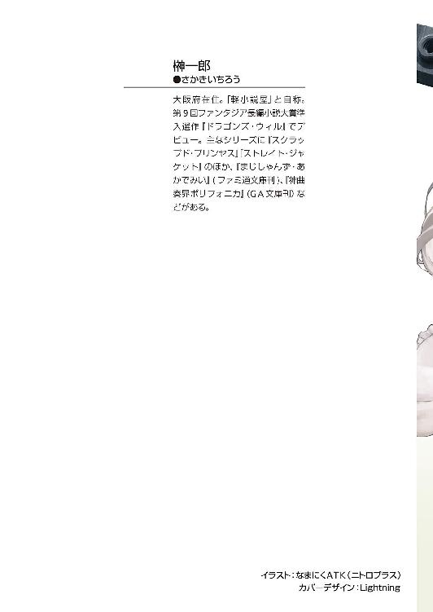
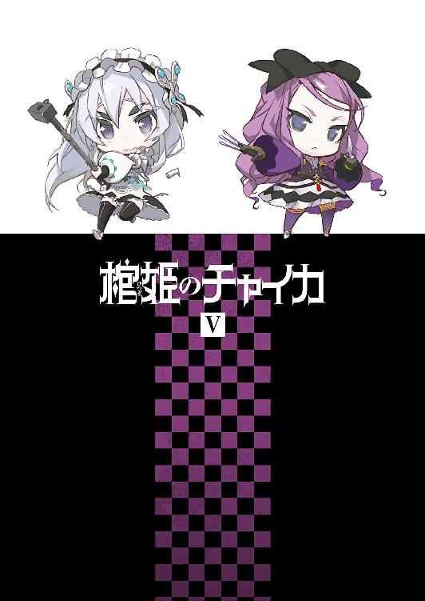
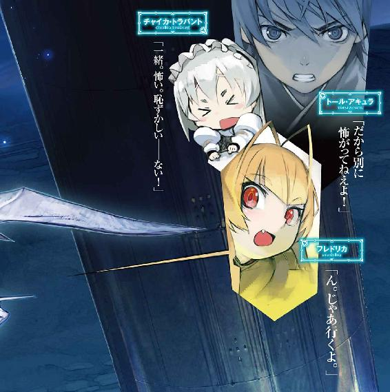
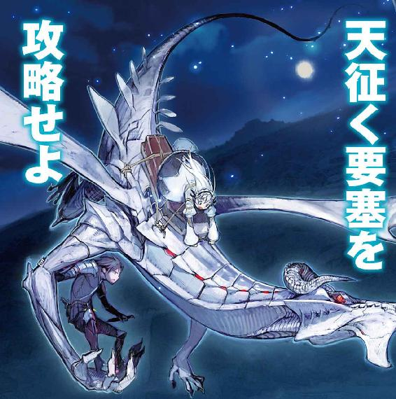
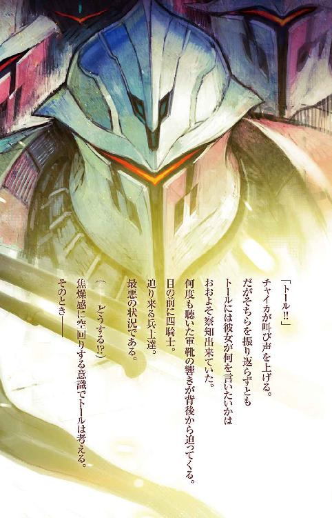
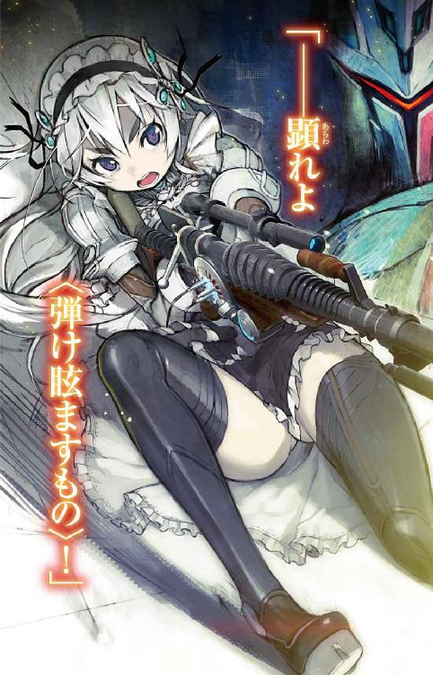
棺姫のチャイカ
榊 一郎

富士見ファンタジア文庫
本作品の全部または一部を無断で複製、転載、配信、送信したり、ホームページ上に転載することを禁止します。また、本作品の内容を無断で改変、改ざん等を行うことも禁止します。
本作品購入時にご承諾いただいた規約により、有償・無償にかかわらず本作品を第三者に譲渡することはできません。
本作品を示すサムネイルなどのイメージ画像は、再ダウンロード時に予告なく変更される場合があります。
本作品は縦書きでレイアウトされています。
また、ご覧になるリーディングシステムにより、表示の差が認められることがあります。
口絵・本文イラスト なまにくＡＴＫ（ニトロプラス）
口絵・本文デザイン Lightning
CONTENTS
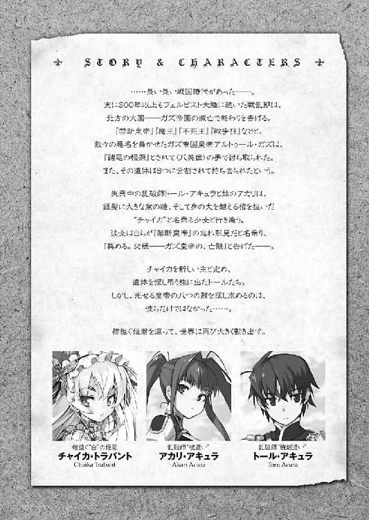
序章 生命の在処
UBIETY OF LIFE
──何故？
そう問われたのは一度や二度ではない。
だが彼がその問いに答えた事は一度も無かった。
答えられないからだ。
理由は無い。意味も無い。
問うてくる訳がそもそも分からない。
『どうして一足す一は二なのか？』と尋ねている様なものである。彼に言わせればそれは、自明であり、自然であって、それ以上でもそれ以下でもない。
それでも強いて答えるならば『そういうものだから』と言う他無い。
ただ彼は『そのように生まれついた』──それだけの事である。
そもそも、どうして人は何かにつけ理由や意味を求めるのだろうか。
森羅万象を自分達の都合で『合理性』という枠にはめ込む事ができるなどと──考える方が傲慢ではないか？
世界はただ在るように在るだけだ。
そこに、本来在りもしない理由や意味を当てはめて、分かった様な気になるのは、幼児が訳知り顔で稚拙な論を説くかの様で、滑稽にすら見える。鳥は飛ぶ事に意味を必要とはしないし、魚も泳ぐ事に意味を必要とはしない。風はただ風だからこそ流れるし、海はただ海だからこそ波打つのだろう。
本当に、ただそれだけの事だと彼は思う。
だから──
「......終わりましたか？」
背後からそう問われた時も、彼は無言で頷いた。
「............」
彼は改めて足下に視線を注ぐ。
黒く滑らかな床の上に──転がる、骸が一つ。
既にそれは『一人』『二人』と数えられる事も無い、単なる物体だった。もっとも彼にしてみれば『人間』と『物体』を峻別するべき一線も、ひどく曖昧なものでしかないのだが。
丁寧に丁寧に......暴力というより、料理の様な精緻さで命の弦を切断されたそれは、切り裂かれた傷から流せるだけの血を流しきって、冷え始めていた。
いつもと変わらない。
命は大切だと人は言う。
魂は重要だと人は言う。
だが......どれだけ丁寧に腹を裂き、腑分けしてみても、『命』なる臓器も『魂』なる臓器も見当たらない。多くの者達は、それを物体ではなく現象なのだと言うが──それこそ風や光の様に、実体の無い様なものを殊更に尊び、それが失われる事を恐れる感覚が、彼には理解不能のものだった。
机上の空論。実の無い虚。
その事にやたらこだわる者達が、本当に不思議で仕方が無かった。
「いつも通り......？」
「............」
彼は静かな笑みを浮かべて再び頷いた。
人間を解体するのは、彼にとって呼吸と変わらない。
呼吸する度にいちいち感慨にふける様な事は無い。何ら特別な事ではないのだから。
理由は無い。意味も無い。
むしろ『何故にそんな事をするのか？』と問うてくる者達に彼は逆に問い返す。
『どうして貴方はこれをしないのか？』と。
すると彼等は大抵──絶句して顔を背けてしまう。
やはり理由など無いのだろうと想う。
しない事に理由が無い。
ならばする事にも理由など必要なかろう。
「......では......始めましょう」
促す声は、ひたすら茫洋としていて......およそ熱というものが無い。
非難する訳でもなく、賞賛する訳でもなく、ましてやありもしない意味や理由を問うてくる様な事も無く、ただただ端的に望む情報をそこに載せているだけだ。風の音や雨の音と変わりない。
それが彼には心地よい。
だから──
「ああ......始めよう」
彼は静かな笑みをそのままに、小さく頷いて言った。
第一章 天征く要塞
AERIAL FORT
薄闇の中で、少女の肌は殊更に白く見えた。
まるで自ら淡く光を発しているかの様ですらある。
元より生身の俗臭に乏しい容姿であるが──今は、尚更に優美な印象だった。まるで幻想を呼吸する夢の中の生き物の様に、その姿には、一点の汚濁も無い。
少女は今......半裸だった。
良くも悪くも、彼女の印象を特徴付ける黒い棺は、足下に置かれ──それだけでなく、いつもの白と黒を基調にした衣装も、全て足下に脱ぎ捨てられている。頭に付けている髪飾りや靴も同様だ。残りは胸と腰の下着二枚のみである。
「............」
彼女が居るのは、機車の御者台の上である。
機車は......今、街道脇の雑木林に停車していた。
時刻は深夜。
小さなランプを灯し、狭い範囲で辛うじて闇を追い払っているが──周囲はわずかな先も見通せぬ濃密な暗黒に閉ざされている。ランプを消せば、そのまま闇が押し寄せてきて自分の指先すら見えなくなってしまうだろう。
あまり整備されていない辺境の街道は、障害物や陥没孔も多く......脱輪や転倒のおそれがある。この為、機車、馬車を問わず、月の無い闇夜に辺境街道を移動する場合は少ない。余程に切羽詰まった状況である場合を除けば、車を停めて日の出を待つのが、辺境を旅する者達の常識だった。
ともあれ......
「──チャイカ？」
御者台の上で半裸になっている少女の名を──トール・アキュラは眼を丸くして呼んだ。
チャイカ・トラバント。
それが彼女の名だ。
「むゃっ!?」
びくん、と身を震わせて、トールを振り返るチャイカ。
「寝もしないで何やってんだお前は？」
御者台のすぐ後ろ──貨物室の出入り口から身を乗り出しつつ、呆れ声でトールはそう問うた。機車は基本的にこのチャイカしか操縦出来ない。停車している間は彼女にとって、貴重な休養時間である筈なのだが......
「トール!?」
慌てて服を引き寄せ、身を縮めながらチャイカは叫ぶ様に言った。
「み......見ない、要請！」
「あ？ あ──ああ」
言われてトールはチャイカから視線を逸らす。
どうやら恥ずかしがっているらしい。以前、下着姿を晒していた時や、温泉に浸かっていた時は、トールの視線など全く気にしていなかったと思うのだが。
何を今更になって恥ずかしがっているのか。
「夜中に裸になる趣味でもあるのか？」
「むい!? ご......誤解！」
顔を真っ赤にしながらチャイカは言った。
「まあ趣味は人それぞれだが、風邪ひくぞ」
「誤解！ 誤解！」
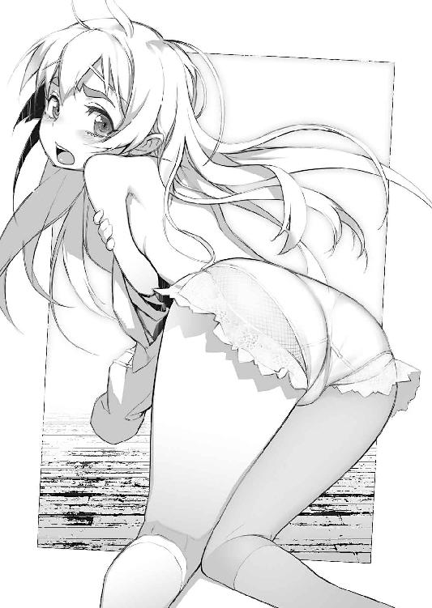
ぶんぶんと頭を振りながら言うチャイカ。
長い銀髪がランプの光に煌めいて美しい......のだが、本人は勿論、それを誇る様な余裕は無く、両手の握り拳も上下させて叫ぶ。
「曲解！ 事実の歪曲！」
「いや、だから誤解も何も......趣味じゃねえんなら何だよ？」
「探索！ 捜索！」
上目遣いにトールを睨みながらチャイカは言った。
このチャイカ・トラバントを名乗る少女は、北方の出という事で──そちらの公用語であるラーケ語ならば堪能なのだが、大陸公用語となると、途端に片言になってしまう。最近は、何となく彼女の表情や口調と併せて、細かい意味までくみ取れる様になってきたトールであるが......当初は、意思疎通にも難儀した事が在る。
ともあれ......
「探してる？ 何を？」
「薬莢!!」
と叫ぶ様にチャイカは言った。
「薬莢？............ああ。魔法機杖に使うアレか」
「............うぃ」
頷きながらチャイカは棺の方に手を伸ばすと──そこから金属の細長い円筒を一つ、つかんで引っ張り出した。
大きさはチャイカの小さな掌に載る程度。色は銀で、基本的にはひどく単純な形状なのだが......一部にくびれが付いている。魔法機杖に装塡する場合、あるいは、排出する場合にそこに『爪』、即ち排出器を引っかける為のものらしい。
薬莢。
これは魔法師達が魔法を行使する際の魔力源──すなわち化石念料を封入して使うものである。元々は名前の通り、稀少な粉末の薬剤を密封して保管する為のものだったのだが......今では魔法師達が、粉末化した化石念料を、魔法一回分を計量して保管する為の容器として使われる事の方が、多い。
質と量をあらかじめ量っておいた化石念料を、規格化された容器に入れて使う事で、魔法を安定して運用できる──らしい。さすがに細かい事はトールも知らないのだが。
「その薬莢を探してたのか？」
「服の中。棺の中。色々」
チャイカは頷いて言った。
「魔力源──不足気味」
「......ああ、そういう事か」
ようやく納得がいってトールは頷いた。
一度魔法を撃てば、薬莢内の化石念料は魔力を消耗して、ただの砂になる。つまり薬莢そのものは使い回しが利くが、化石念料は完全に消耗品なのである。
当然、魔法を撃てば撃つだけ魔力を消費する事になり──薬莢をまた取り出して、中身を棄て、新しい化石念料を再充塡してやらねばならない。
「〈スヴェトラーナ〉号動かすのにも使うしな」
「......うぃ」
「で、服の何処かに一つくらい、残ってないかと探してた訳か？」
「肯定......」
しょんぼりした様子でチャイカは頷いた。
言葉は片言で、どうにも微妙な意味合いが伝わりにくい反面、表情や仕草は呆れる程に真っ直ぐというか、分かり易い少女であった。こういう部分が容姿以上にこの少女を幼く見せているのだが......本人に自覚は在るのだろうか。
そんな事を考えつつ──
「......大事なものなら、きちんと数えて管理しろよ......」
溜息交じりにトールは言った。
いくら薬莢は使い回しが利くと言っても、化石念料自体がそれなりに値の張る代物なのだ。服の何処かに小銭が残っている──などというのとは、訳が違う筈なのだが。
この辺は元お姫様であるからか、微妙にチャイカは杜撰である。
「......ひょっとして、もう機車は動かせないとか？」
「機車。余裕──ある。未だ」
とチャイカは言った。
チャイカ曰く、機車の駆動機関の中には、専用の大型薬莢に入った化石念料が残っているので、次の街にたどり着く位は走れるだろう──との事だった。
「でも機杖用──これだけ」
とチャイカが掌に載せて示したのは五つの薬莢である。
機杖の中に装塡済みのもの五個を併せて、合計──十回。
それが現状で魔法を撃てる限界なのだとか。
「心許ねえな......」
トールは顔をしかめた。
「追っ手がいつ来るとも限らねえし」
チャイカは優秀な魔法師だが......まるで均衡をとるかの様に、他の面に関しては、とことん鈍臭くて不器用だ。つまり魔法が使える限りは彼女は優秀な戦力だが、魔法が使えなくなった途端に、戦力外どころか、完全なお荷物と化してしまう。
だが──
「非常用。ある」
ふと思い出したかの様な口調で、チャイカが言った。
「非常用？」
「ここ」
とチャイカは自分の額を指さした。
「......なんだって？」
「元々──種火」
「......なんだって？」
今ひとつ意味が分からず、眉を顰めてチャイカを眺めるトール。
「魔力。即ち思考。精神」
とチャイカは言った。
そもそも......魔力とは、知的生物の精神活動そのものなのだと彼女は説明する。そしてその死骸には、その生物の生きてから死ぬまでの、その精神活動が残留し蓄積されているらしい。
魔力源とは、一定以上の知性を持った生物の、死骸だ。
だがそれは、必ずしも化石化している必要は無い。
大抵の場合に魔力源といえば化石念料を意味するのは、単に、それが保存性や運用性において便利だからだ。石化した死骸や、屍蠟化した死骸は、物質的に安定しているので扱いやすい──ただそれだけの話である。
だから、人間の死体なども、適切に処理すれば魔力源になり得る。
戦時中は化石念料が不足した際などに、戦死者の遺体を防腐処理して使っていたという話も聞く。
そして──極論すれば、それは必ずしも『死んだ』人間で無くても良いという事で。
「それってつまり......」
「うい。意識。記憶。切り売り」
とチャイカは頷いて見せた。
結局のところ、魔力とは外部抽出された知的生物の意識であり、記憶だ。
そしてその場合、別に魔力を引き出すのは死体でなくてもいい。
現に棄獣達は、魔力源を要さない。
それは彼等自身が、魔力源だからである。
即ち──
「それってなにか？ 魔法使う度に何か忘れたりすんのか？」
「うぃ」
恥ずかしげに苦笑するチャイカ。
彼女の話によると......元々魔法を撃つ際には、魔力源に『着火』する為の種火を作る為に、魔法師の記憶を消費するらしい。通常はほんの些細な、『何を忘れたか』すら具体的に分からない程度のもので、日常生活に支障は無いらしいのだが──
「非常時。消費」
とチャイカは自分の頭を指さす。
「......それって」
逆に言えば、魔法そのものの効果を発揮する為の魔力源として、自身の意識や記憶を使った場合......数日、数ヶ月、場合によっては数年分、ごっそりと抜け落ちてしまう可能性があるという事ではないのか？
チャイカによれば、ある程度は消費する記憶を意識的に選択できる様だが──魔力の絶対量が足りなければ、大事な記憶にまで『虫食い』が生じてしまう可能性があるのではないだろうか。
「標準的魔法一回分。多分......一ヶ月分。記憶」
「ちょっと待て。それ結構な欠落だぞ!?」
驚いてトールは言った。
つまり魔法を一回撃つだけで、一ヶ月分の記憶を失うという事だ。
いかに選択可能とはいえ、いきなり三十日前後の記憶が消滅すれば、日常生活に支障が出るのは間違いない。そもそもトールとチャイカが出会って未だ半年余りだ。たった六回の魔法行使で、その間の記憶がなくなるのだと言われると──さすがにトールとしても看過しにくいものがある。
「でも。トール。非常用。仕方ない。格言。ん──」
チャイカはふと首を傾げて言った。
「『背中は腹には変わらない』？」
「それを言うなら『背に腹は代えられない』だっつーの」
ぐったりと脱力してトールは言った。
まあ確かに命がけの場面ならば、自分の記憶を三ヶ月分失うだけで生き延びられるとすれば、選択の余地など無いのかもしれないのだが。
（ひょっとして、こいつが記憶喪失ってのは......）
あるいは魔法の使いすぎが原因なのではないだろうか？
チャイカがガズ帝国滅亡の際に、どうやって脱出したのか、どうやってその後生き延びてきたのか......この辺りの細かい事情については、記憶に欠落が有って本人にも分からないという。だがなりふり構わぬ魔法の行使によって自らの記憶を消費したのだとしたら、とりあえず辻褄は合う。
（だが──待てよ）
ふとトールは眉をひそめる。
（紅チャイカも記憶喪失って言ってたな）
先日トール達が出会ったもう一人のチャイカ──チャイカ・ボフダーン。
彼女も、記憶の一部を失っているらしい。
しかしこちらは魔法師ではなく機剣士であった。彼女が魔法の使いすぎで記憶を失うなどという事は──無い筈だが。
するとこれは偶然の一致なのだろうか。
それとも......
「ふと思ったけど。他人の記憶を使うってのも可能なのか？」
「むい？」
「例えば、まあ、あくまで例えばだが──俺の記憶を使って、チャイカが魔法を撃つ、なんて事も可能なのか？」
「む............可能。理屈上」
とチャイカは答える。
どうやら出来るらしい。という事は紅チャイカの記憶が失われているのも、魔法の為に消費したから、という可能性は残る。
チャイカによると、生きている人間の記憶の消費は、あまり効率が良くないので、魔法師達の間でも本当に最後の最後、奥の手の中の更に奥──理屈の上では可能だが、実際に使う魔法師はまず居ないとか。
「いずれにせよ」
トールは言った。
「それは『奥の手』じゃなくて『禁じ手』にしとけ」
「むい？」
「自然に忘れるならともかく、自分から記憶喪失になるなんざ──自分の命を削ってるのと同じだ。ぞっとしねえよ。絶対に使うな」
「トール──でも」
「お前は何の為に『遺体』を集めてる？」
反論しようとするチャイカに対し、覆い被せる様にトールは言った。
「............？」
首を傾げるチャイカ。
その仕草は無垢な小鳥の様で──ひどく純粋で愛らしい。
だが、だからこそトールに言わせれば、危うくもある。
純粋な人間程に視野狭窄を起こしやすいし......些細な事で躓いたまま、起き上がれなくなる事も多い。混じりけの無い文字通りの純粋さは、脆さにも繫がるのだ。
（純度の高い鉄はむしろ折れ易い──）
そんな話をトールは聞いた事があった。
「父親をきちんと弔いたいからだろう？ 記憶が消費されれば、そういう気持ちまで無くしてしまう可能性、在るんじゃ無いのか？」
ただの物忘れ程度ならいい。
だが、一生掛けてでも果たすべき目的、命を賭けてでも追い求める目標、そうしたものの根幹をなす出来事まで、忘れてしまったら──それは死ぬのと同義ではないのか？
例えば、もし。ハスミンとの記憶を根こそぎ忘れてしまったら。
トールはチャイカと共に行動している事の意味まで見失う。
例えば、もし。チャイカとの出会いの記憶すらも忘れ果てたら。
トールは恐らく......どう生きて良いのかも分からず途方に暮れるだろう。
「......うぃ」
若干、戸惑う様な表情を浮かべながら頷くチャイカ。
（こいつは、変な所で自分自身に対して無頓着だからな......）
我欲というものが欠落しているかの様な、妙な鷹揚さが在る。
卑俗な欲望に振り回される事が無いのは、一見、良い事の様にも思えるが──僧侶や神官の類いが長年の修行の果てに執着を棄てるならばともかく、最初から持ち合わせていないかの様なその様子は、ひどく危なっかしい。
何の躊躇も無く自分の命を棄てかねないからだ。
実際、今もチャイカは、あまり自分の記憶を消費する事に対して、恐怖や逡巡を覚えていない様にも見える。少なくともその言動に悲壮な覚悟とか、懊悩の末の決断といったものは窺えない。
「俺はな」
トールは真っ直ぐチャイカの、まるで宝石の様な紫の瞳を見据えて言った。
「お前と出会ったあの日の事が在ったから、生き腐れの日々から抜け出る事が出来たんだ。俺が今こうしていられるのは、あの日の記憶が在るからだ」
「トール......」
眼を瞬かせてトールを見つめ返すチャイカ。
「だから俺は絶対に忘れたくないんだよ。そしてお前にも忘れて欲しくねえんだよ。どんな事があってもだ」
「............」
チャイカはしばし眼を瞬かせてトールを見つめていたが。
「うい。了解──禁じ手、認定」
何故か少し頰を赤らめて俯くと、ぎゅっと服を胸に抱きしめながらチャイカはそう言った。その様子は、今までにない程に愛らしく──
「っていうか──チャイカ」
「むぃ？」
「さっさと服着ろ」
改めて明後日の方向を見ながらトールは言った。
「......あ」
ただでさえ上気していた頰を更に紅潮させて、チャイカはこっくりと頷く。
今までは割と心頭滅却して気にしないようにしてきたのだが。でもって前述の通り、チャイカはチャイカであまりにもあっさりと肌を晒したりするので、トールの方も、幼児を見ている様な印象で......あまり意識せずに済んだのだが。
ここしばらくでチャイカの反応が少し変わってきたせいか......トールとしても、微妙に目のやり場に困る様になってきた。
「こんな所をアカリに見られたら、また──」
「──私がどうかしたのだろうか？」
ふと......背後から怜悧な声が問うてきた。
それを耳にした途端──
「──ッ！」
反射的に身構えるトール。
彼の視界の端から──機車〈スヴェトラーナ〉号の角張った車体を回り込む様にして一人の娘が姿を現した。
整った──そして怜悧な印象の容姿である。
未だトールやチャイカ同様に十代だが、既にその器量を称える場合には『可愛い』ではなく『綺麗』もしくは『端麗』と評するべきだろう。
長く艶やかな黒髪を後頭部で束ね、革製らしき身体の線が浮き出る衣装に身を包み──背中には鉄槌らしきものを背負っている。辺りを見回るついでに採ってきたのか、左手には数種の野草を携えていた。
アカリ・アキュラ。
トールの妹だ。
もっともトール達の生まれ育った『里』において、兄弟姉妹や親子という言葉は、必ずしも血縁を意味する関係では無かったりするが──それはさておき。
「......兄様」
アカリは切れ長の双眸を細め、重ねて問うてきた。
「私がどうしたというのだ？」
「いや。なんでもない」
まるで宣誓するかの様に片手を挙げてトールは言った。
「そうか」
アカリは頷いた。
口調も表情も静謐で──そこには何の喜怒哀楽も窺えない。
アカリはいつもこんな調子である。感情が無いのではなく、内面のそれと外面の繫がりが全体的に薄いらしく......むしろその分だけ行動だの何だのに現れる感情表現は、唐突かつ極端である。
「なんでもないのか」
淡々とした口調でアカリは問い質す。
「ああ。なんでもない」
「婦女子を裸にひん剝いておいて何でもないとは......なるほど、兄様にとっては文字通り日常茶飯事という事なのだな......」
「人聞きの悪い事を言うなッ！」
唸る様にトールは言ってチャイカを指さす。
「これはチャイカが自発的に脱いでるだけだ！」
「分かっている」
皆まで言うな──とばかりに右手を掲げてアカリは頷いた。
「手を触れずしての強制脱衣──まさに奥義という他あるまい。そこまで言葉責めだけで追い込む兄様の舌技には、常々私も感服する次第で」
「全然分かってないだろ!? っていうか舌技って何だよ！」
普通は口先と言うものだが。
「ちなみに私は口の中で舌先を用いてサクランボの枝を結べる」
「何の自慢なんだよそれは」
「舌技の自慢だ。だがさすがの私も舌先だけで兄様を全裸にするのは難しい」
「せんでいいっ！」
喚いてから溜息をつくトール。
「おまえの頭は一体どうなってんだよ......」
「勿論、私の頭は常に敬愛する兄様の事でいっぱいだ」
と何故か胸を張ってアカリは言った。
「それどころか溢れて漏れて大変だぞ」
「そうか」
トールは投げやりな口調と表情で頷いた。
「寝ても覚めても兄様の事ばかり」
「そうか」
「何しろ一瞬でも油断すると兄様は婦女子を手込めに」
「しねえつってんだろが！」
「ではこの有様は何と説明するのだ？」
とアカリは半裸のチャイカを示す。
「だからそれが誤解だっつってんだろうが！ 分かれよ！ これはチャイカが自分から脱いだんだよ！ 俺が外に出たらもう下着だけだったんだよ！」
「う......うぃ」
恥ずかしそうに頷くチャイカ。
「まさか──いや。なるほど」
アカリは眉をひそめて──その後納得したかの様に首肯した。
「ではチャイカが兄様を手込めにしようと!?」
「むいっ!?」
慌ててぶんぶんと首を振るチャイカ。
「どんだけか弱いんだよ俺は......」
溜息交じりにトールは呻く。
「よし。分かった」
「いや。わかってねえだろ多分」
「兄様。これを」
といってアカリは腰の後ろから取り出した投擲用の手裏剣を手渡してきた。
「いや。改めて手渡されなくても自分で持ってるけどな。これがどうしたんだよ？」
「純潔を守れぬと分かった時にはこれで自決するといい」
「いくら乱破師でもンな事で死ねるかッ！」
言ってトールは手裏剣を放り投げる。
くるくると空中で回転するそれを受け止めると、再び手裏剣を仕舞い、アカリは頷いた。
「分かった。では私が」
「何をする気だよ!?」
とりあえず聞いてみる。どうせろくでもない事だろうなあと思いつつ。
「兄様が無意味に長く苦しまぬ様、介錯を──」
「そもそも自決しねえっつってんだよ！」
「私の兄様に対する敬愛は顔や体格といった皮相的なものではない。私は兄様ならば首だけでも胴体だけでも大事にする自信が在るぞ。どうか安心して欲しい」
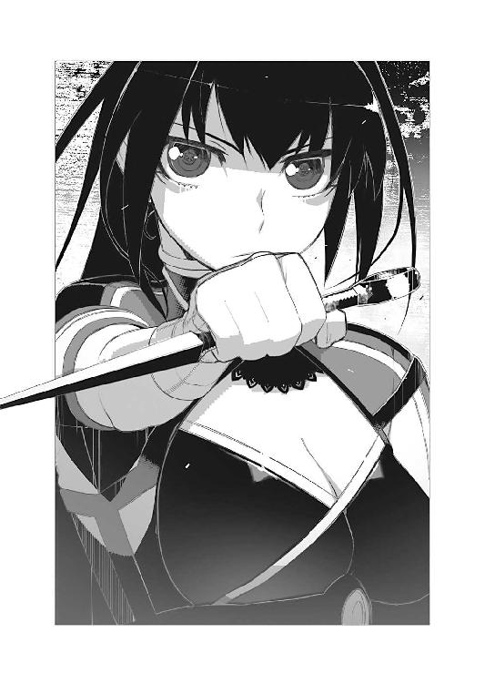
「尚更安心できねえッ！」
怒鳴るトール。
そういえば以前、トールを剝製にするとか何とか言っていたが。冗談だとは思うのだがこの妹は表情に乏しいので『ひょっとしたら本気なんじゃないか？』という疑念が棄てきれないのである。
「──化石念料の事だけどな」
長々と溜息をついてからトールはチャイカを振り返る。
適当な所で切り上げないと、アカリとのやりとりは本当にきりがない。
「次の街でどうにかなるだろ。化石念料の産出が多いので有名だしな」
「確かヴィーマック王国随一という話だな、イヴェコは」
とアカリも頷いてきた。
イヴェコ──というのは現在、トール達が向かっている街の名前だ。
ガヴァーニ公爵領に属する街の一つで近郊に大規模な化石念料鉱山が在る。化石念料の質を調べたり、あるいは採掘作業そのものに魔法を用いる事が多い為、領内の魔法師の数も多いという話だった。
当然──魔法師相手に、化石念料を売買する店舗も存在する筈だ。
「問題は『遺体』を誰が買ったか──だが」
トールは腕組みをして言った。
棺担ぐ姫君──チャイカ。
彼女の目的は、今は亡きガズ帝国皇帝アルトゥール・ガズの遺体を集める事だ。
かつて、『全ての戦乱の元凶』とも言われてきた〈禁断皇帝〉アルトゥール・ガズ。
彼は八名の特攻隊によって討たれた。
そして大魔法師としても名高かったガズ皇帝は、その遺体も魔力源として使えるとして、八分割され、特攻隊によって戦利品として持ち去られてしまったのである。
チャイカの本名はチャイカ・ガズ──即ちアルトゥール・ガズの遺児だ。
チャイカは父の骸を、きちんとした形で弔いたいと考えており──その為にトール達を雇い、父の遺体を持ち去った者達を探している。つまりトール達の旅は基本的に遺体探しであり、件の〈八英雄〉探しなのである。
だが諸々の理由からこの〈八英雄〉の名前は公表されていない。
これがチャイカ達の旅を困難なものにしている理由の一つだ。
実質的に誰が持っているのか、分からないからである。どうしても真偽の不確かな噂なり何なりに縋って動くしかないのだ。
しかも......戦利『品』である以上、それは売買も譲渡も可能だ。
必ずしも〈八英雄〉が持っているとは限らない。
これもまたトール達の旅路をひどく難儀なものにしている原因である。
実際──今トール達が追っているのは、〈八英雄〉の一人から転売されたと覚しき『遺体』である。辺境を回る商人達の間で噂になっていた品で、最終的にこれはヴィーマック王国の地方領主ガヴァーニ公爵が買い取ったらしい、という事が分かった。
「しかし......そもそも、そのガヴァーニ公爵ってのも何を考えてんだかな」
「むい？」
「『遺体』を買い付けたのが本当だったとして、だ。何を思ってそんなものを買い付けたのかって話だよ」
首を傾げるチャイカにトールは言った。
単なる魔力源としてならば、むしろ領内で産出される化石念料で充分に事足りる筈だろう。通常の魔力源よりも遥かに割高な、曰く付きの品を買う必要があるとは思えない。
「......ふむ」
アカリが腕を組んで唸る。
「ひょっとしたらガヴァーニ公爵はガズ皇帝を敬愛していたとか」
「はあ？」
「遺体の一部だけでも愛でたいと」
「世の中にお前みたいな変態はそうそういねえよ」
「兄様。褒めてくれるのは嬉しいが......」
アカリはかぶりを振った。
「いや。褒めてねえが」
「しかし、私の中で最大の変態は兄様だと決まっているのだ。そこだけはいかに兄様が相手とて譲れない」
「......お前、本当は俺の事、嫌いなんじゃねえのか？」
「埋葬？ 弔い？」
──と首を傾げて言うのはチャイカである。
「だからどうしてお前等は自分と同じ理由しか出てこないんだよ。実はガヴァーニ公爵は〈禁断皇帝〉の隠し子でしたとか言うなよ」
「むぅ......」
さすがに無理があると自分でも理解しているのか、チャイカは腕を組んで唸る。
「だが兄様。愛でるかどうかはさておき、『遺体』の『曰く付き』の部分が目当てという可能性はあると思うが」
「............いわゆる好事家、か」
貴族には、庶民には理解の苦しむ様な、奇品珍品を尊び蒐集する者も少なくない。
一部とはいえ〈禁断皇帝〉の遺体......珍重する変わり者が居ないとも限るまい。
だが──いずれにせよ。
「イヴェコの街......」
チャイカは目を瞬かせて──闇を見通そうとするかの様に件の街がある方向を見つめる。
その、ひどくひたむきな表情を示す横顔を眺めながら──
「領主相手となると、また......色々面倒なんだろうけどな」
トールはうんざりした口調で呟く様に言った。
最初に違和感を覚えたのは......街門を通る際だった。
フェルビスト大陸においては、国を問わず、大抵の街には、周囲をぐるりと取り囲む防壁と強固な街門が存在する。
これは永く続いた戦国時代の影響だ。門と壁は外敵への防備であると同時に、内部の領民の勝手な移動を防ぐ為の施設であり、更には街への出入りに際して通行税を徴収する為の施設でもある。
イヴェコの街の街門は、特に立派なものだった。
岩を積み上げた強固な壁は、見るからに丈高く、分厚く、人力では勿論......破城槌や魔法攻撃でもそう簡単に崩せそうにない。街の南北に存在する門も同様に、巨大かつ強固極まりなく......あまりに大きく重いせいか、開閉には魔法を使っている様だった。
当然──街門の脇にある衛兵の詰め所も、立派なものである。
数人ずつの班に分かれた衛兵達が、二十名余り、街を出入りする人間やその荷物を検分している。剣や鎧といった装備も、硬革鎧を主体とした軽装ではあるが──造りのしっかりした本格的なものだ。
つまりは、いつでも即座に戦闘態勢に入れるという事である。
強引に突破するのは至難の業だろう。
トールは〈スヴェトラーナ〉号を街の外に置き、留守番をアカリに頼んで、チャイカと徒歩でこのイヴェコの街に入ろうとしたのだが──
「──魔法師か」
担当の衛兵は......トール達を一瞥して呟く様に言った。
「うぃ」
と素直にチャイカは頷いた。
化石念料を買い付ける為、あるいは仕事を探しに、イヴェコの街に魔法師がやってくるのは珍しくない筈だ。チャイカは、普段、棺の中に分解収納している魔法機杖をわざわざ組み立てて『魔法師です』と言わんばかりにこれを抱えて居る。こうしていた方がむしろ説得力が出るからだ。
だが──
「............」
視線が集中する。
（なんだ......？）
怪訝の念を抱くトール。
思った以上に、街門における人の出入りは少なかった。
というか──見た限り、今はトール達だけだ。
お陰で二十人近い衛兵達に、一斉に眺められている状態だ。イヴェコの街は化石念料の産出地である以上、これを買い付けに来る商人達は少なからず居る筈なのだが......今は時間が悪いのか、全く姿が見えない。
だが衛兵達がトール達をじっと見つめてくるのは、暇だから──でもない様だった。
何か奇妙に絡み付いてくる様な視線である。
注目されているのは間違いないが。
何故に？
まあ棺なんぞを背負って歩いている少女を連れていれば、注目を浴びるのは当然なのだが......既に衛兵達には一度、蓋を開いて見せているので、中に危険物や禁輸品の類いが入っている訳ではないのは、彼等も理解しているだろう。集めた『遺体』はとりあえず魔法機杖の予備部品に偽装してある。
では本当に──何故か？
（......なんか、違うんだよな）
チャイカの容姿や棺のせいで、他人から注目を浴びた事は何度か在るのだが。
衛兵達の視線は──それまでのものとは温度が違う様な気がした。
（なんだこりゃ......？）
敵意──ではない。
嫌悪──でもない。
だが決して好意や親愛ではない。
そもそも彼等の視線はトールというよりも──
（チャイカか？）
彼女に集中している様に思える。
一瞬、トールは何か難癖でも付けられるのかと思ったが......
「行ってよし」
衛兵はそう言った。
「──どうも」
トールはチャイカ共々一礼して、街の中に踏み入れる。
だが──
「............」
ここでも同じだった。
ガヴァーニ公爵領──イヴェコの街。
ここは統治者であるガヴァーニ公爵家の直轄地である。
つまり代官の類を置かずガヴァーニ公爵家の者が直接的に常駐して統治している場所であり──その城塞なり屋敷なりが在る都市だ。要するにガヴァーニ公爵領を一つの国家に見立てれば、此処は首都という位置づけになる。
元々ガヴァーニ公爵領は──公爵位に在る貴族の支配地としては、かなり規模が小さい。
これは単純な面積の意味でも、そして領民の人口という意味でも......である。
その面積の大半は山岳地帯によって占められているガヴァーニ公爵領は、領土全体が天然の要塞とも言うべきもので、他国の侵略をも延々と撥ね除けてきたという歴史を持つが──その一方で農作に適した土地は少なく、商売においても、交易路の問題から不利な点を数多く抱えていた。
基本的に、閉鎖性の高い土地なのである。
歴史を五百年ばかり遡ってみれば──少数の山岳民族こそ住んではいたが、周辺諸国からは殆ど見向きもされない土地であったらしい。ガヴァーニ公爵家の祖先もそんな土着の豪族......というよりは、この地を根城にしていた山賊の様な連中であったとか。
だが、魔法技術の発達と共に、そんな事情は激変した。
いや。正確には魔法技術の発達に伴う魔力源需要の急激な増大が、ガヴァーニ公爵領で産出される化石念料の重要性を、一気に高めた。それまではろくに値も付かないゴミ同然だった化石が、金にも等しい価値を持つ存在に化けたのである。
結果として、ガヴァーニ公爵家はヴィーマック王国内においても屈指の財力を持つに至り──同時に、その御座所でもあり領内で採れた化石念料の集積地でもあるイヴェコの街は潤った。
だが──
「............なんだ？」
トールは通りを歩きながら眼を細めた。
何かがおかしい。
別に景観が荒れ果てている......という訳ではない。
通りには大きな建物が並び、街路は石畳で舗装され、夜間でも歩き回れる様にと、街灯があちらこちらに設置されている。ガス式なのか、灯油式なのか、魔法式なのかはさておき──それはつまり、毎晩、街灯に火をつけて回る専門の業者を雇う余裕が、街には在ったという事である。
実際に裕福な街なのだ。それは間違いない。
なのに──
「むい？」
トールの隣を歩きながら、チャイカが首を傾げた。
彼女は紫の瞳で、不思議そうにトールの横顔を見上げている。
『どうしたの？』と言わんばかりだ。この、魔法以外はびっくりする程の駄目っぷりを発揮する元皇女は、街全体に漂う不自然さ──もっと言えば、重く奇妙な空気に気づいていないらしい。
「なんというか......街の空気が......」
気怠いというか物憂いというか。
道行く人々の表情、店先にたたずむ店員の表情、それらが皆、暗い。笑顔を浮かべていても何処かぎこちなく──何かに怯え身構えている様に見える。中にはそれに疲れ果てたのか、ぼんやりと腑抜けた表情で、ただ道端に座り込んでいる者も居た。
普通、繁栄している街には活気がある。
人々の表情は総じて明るく、何処か忙しない空気に満ちているものなのだが──それがこのイヴェコの街には全く無いのだ。
それに......
「妙に視線を感じるだろ。街の連中の」
「......視線？」
チャイカは首を傾げて──
「トール。自意識過剰」
「......あ？」
「思春期。よくある事」
何故か妙に得意げな表情で言うチャイカ。
「お前が言うな......！」
思わず叫びそうになりつつも、トールは何とかその衝動を抑え込んだ。トール達の立場では目立って良い事など何も無い。これ以上注目を浴びようが無いとも言えるが。
「............」
男達はチャイカの姿を見ると、驚いた様に眼を瞬かせ、その後は食い入る様に彼女を見続けて──眼で追っている。一人や二人ではない。全員だ。前述の通りチャイカは確かに目立つ存在だが、それでも、ここまで街の人間達に揃って注視された事は無い。
「チャイカ」
「むい？」
「注目されてるのはお前みたいだけど。何か心当たりあるか？」
「............」
眉をひそめて首をひねるチャイカ。
やがて彼女は──指を一本立てて言った。
「髪の色？」
「いやまあ確かに銀髪は珍しいけどな......」
なおかつチャイカは相当な器量好し──つまり美少女である。
それだけで注目を集めるのに十分な理由だが──
（何かおかしい。何だ？）
注目を浴びる事とは別に、何か違和感がある。
街の風景に何かが足りない様な──在って当然の何かが。
それは......
「──そうか」
トールは唐突に理解した。
「女か......！」
「むい？」
首を傾げてこちらを振り返ってくるチャイカに、トールは視線を前方に向けたまま、静かに答えた。
「若い女の姿が見当たらないんだよ」
「............!?」
目を丸くして辺りを見回すチャイカ。
そんな彼女にトールは前を向いたまま、低い声で告げた。
「きょろきょろするな。余計に目立つ」
「う、うぃ」
慌てて視線を前方に固定するチャイカ。とはいえ今まで意識していなかった事に気づいてしまった為か、動きが途端にぎくしゃくして、余計に目立ってしまう。
一度気付いてみると、それは至極単純な事で──ひどくあからさまだった。
イヴェコの街に入ってから、トール達は一度も若い女の姿を見ていない。
勿論、それは単なる偶然の可能性もあるだろう。
また──地方によっては女は出来るだけ外に出ず、男と顔を合わせない、などという風習が在る事も考えられる。女は基本的に家の中で働くもので、外に出るだけでもはしたない、という考え方だ。
だが......
（──それならそれで、先に耳にしそうなもんだが）
イヴェコの街にそういう風習があるというのならば、事前にこの街について調べた際、小耳に挟んでいても良さそうなものだが。
「まあいい。今は、おとなしくしてろ」
街の住人達が、何を考えてこちらを見ているのかは分からないが、今すぐ襲い掛かってくる──という訳でもなかろう。
「トール。魔法屋」
やがてチャイカはトールの服の袖を引っ張って言った。
彼女が指し示す方を振り向くと──確かにそちらには、一軒、魔法関連の専門店らしき店舗が建っている。看板には魔法機杖らしき絵が描かれており、幾つかの言語で『魔法全般』とも書き添えられていた。
化石念料のみならず、機杖の部品など、魔法関連の諸々を総合的に取り扱っている様で、店舗としてはかなり大きい。大抵の街にはこの種の店が一軒はあるものだが......さすがに化石念料の産出地、他の街のそれに比べると倍以上の規模があった。
ただ──
「............うん？」
両開きの扉を押し開けて、店内に足を踏み入れるトールとチャイカ。
そこで二人は──立ち止まって眉をひそめた。
店内には、壁に沿ってずらりと棚が設けられている。
右側は、機杖やその部品らしきものが棚に置かれている。
左側には、箱や壺が幾つも幾つも並べられていた。恐らくは量り売り用の化石念料を詰める容器であろう。チャイカによると、化石念料は元々の質に差が在る事に加え、魔法機関に使う際の形式も何種類か存在するという。粉末状のものを薬莢に詰めるのが基本だが、あらかじめ固形化してあるものや、水に溶いて流動する様にしてあるものもあるという話だった。恐らくこの棚と箱や壺は、そうした種々の化石念料を分かり易く陳列する為のものなのだ。
だが──今。
棚は空っぽになっていた。
箱や壺は逆さまになっていて、中身が無い事を示している。床にも幾つか壺や箱が置いてあるが、これも同じく逆さまにして置かれていた。
「し......品切れ？」
眼をぱちくりと瞬かせて呟くチャイカ。
「それっぽいな。まずいな」
店の中を歩きながらトールは言った。
店内は──ひどく空虚な印象が在った。
化石念料の棚が空っぽだというだけではない。客の姿も店員の姿も全く見当たらないからだ。一瞬、廃業か休業中の店に迷い込んだのかとトールは思った位である。
だが──
「──いらっしゃいませ」
店の奥から声が流れてきたのは、次の瞬間だった。
何処か、やつれた印象の小柄な中年男性が一人、歩み出てくる。
おそらくは店主なのだろう。
彼は──
「──あ」
トール達を見て、目を丸くする。
いや。違う。やはりそれはトール達ではなく──チャイカが対象だった。
（......やっぱりか。何か理由でも在るのか？）
「機杖用薬莢。再装塡用──粉末化石念料」
相手の視線に気づいているのかいないのか──トールの懸念を余所に、チャイカは嬉しそうに店主に駆け寄ると、人差し指をたててそんな注文をする。
「......はい」
店主は頷くと、すぐ傍にあった箱を引き寄せ、その中から秤と小さな缶を取り出すと、店の真ん中に在る机の上に置いた。
「お客さんは──旅の方で？」
「そうだけど」
とトールが答える。
チャイカは何やら、わくわくした表情で店主の手元を眺めていた。どうも単に特技というだけでなく、この少女は本当に魔法とそれに関連するものが好きらしい。
しかし......
「では、これで」
店主は皿の上にほんの少しだけ盛った粉末──恐らくこれが粉末状に砕いた化石念料なのだろう──を示した。薬莢の中身がどれ位詰まっているのかはトールも知らないが、恐らくこれでは十発分程度にしかなるまい。
「要求──もっと。たくさん」
と不満げな表情でチャイカが言う。
「いや、それが......これ以上はお売り出来ませんで」
店主は申し訳なさそうにうなだれた。
「何故だ？ 金なのか？」
「いえ。そういう訳ではなく──」
やや尖った声で問うトールに、しかし店主は首を振った。
「もうあまり在庫がございませんで。街で生活に使う分もありますので、よその方にあまり量は売れないんですよ」
「ここ──有名産地」
とチャイカは納得いかない、といった様子で言った。
「産出量──ヴィーマック王国一」
「なのに足りないってのか？」
「いや──その」
店主はしばらく口を濁していたが......トール達が何度か問い質すと、渋々と言った口調で事情を説明し始めた。
曰く──化石念料の産出量は今も大差ない。
だが、最近、領主が召し上げてしまう量が、急に倍増したのだとか。
元々、化石念料が豊富に産出されるこの地では、化石念料そのものの値段も安く、様々な分野で使われてきた。建物を建てるのにも魔法を使ったり、街の塵処理や、浄水といった公共施設にも、魔法が使われていたのだそうだ。
だが......三年と少し前、急に領主の施政方針が変わったらしい。
当然、領主が召し上げる量が倍増したという事は、市場に出回る量が減少したという事である。街の維持に必要な化石念料、馴染みの商人などに売る化石念料をそこから引くと──もう殆ど外部の人間に売る余裕は無いのだとか。
「そんなに魔力源を貯め込んでどうする積もりなんだ──その領主は？」
「それは......」
言いよどむ店主。
その時──
「──化石念料が欲しいのか？」
声がトール達の背に投げかけられた。
「分けてやらないでもないぞ」
「............」
振り返るトールとチャイカ。
店の入り口には──数名の男達が立っていた。
（......一般人だな）
乱破師であるトールは、基本的に初対面の人間と出会えば、その呼吸や立ち方から、相手の体力や技術を推し量る癖がついている。勿論それだけで正確に相手の全てを見切って把握出来る訳ではないが──とりあえず男達が明らかに素人、つまり戦闘訓練の類を受けていない、という事は分かった。
ただし......
（──六人か）
大は国家同士の戦争から小は街角の喧嘩まで──戦いと名の付くものに関して、最も確実でモノを言うのは物量だ。周辺環境や武器の条件が互角なら、六倍の物量差は、十分に素人と玄人の力量差を埋めて、有利不利を覆し得る。
（室内で──こっちには格闘戦不可のお荷物も居るしな）
そんな事をトールが考えていると。
「ここにはねえんだ。うちまで来てくれたら、分けてやれる」
「必要。化石念料！」
男達の提案に眼を輝かせて、チャイカが応じる。
戸口の男達に向けて歩み寄ろうとした彼女を──しかしトールは溜息をつきながら襟首をつかんで止めた。いつも思う事だが、この少女、ひどく世間知らずというか、何というか、とにかく純真無垢で他人を疑う事を知らな過ぎる。
「トール？」
「──で？ 代金は幾らだ？」
「............」
トールの問いに、男達は顔を見合わせる。
「若い女一人、とかか？」
と言いつつ、ぽんぽんとチャイカの頭を平手で叩く。
「あいにくコレで払う訳にはいかねえんだ」
「トール？ 意味不明──」
チャイカがきょとんとした様子で眼を瞬かせている。
トールは構わず、男達を睨み据えながら言った。
「それとな。素人が武器やら何やら服の下に隠し持つ時は、左右均等になるように反対側にも重りでもいれとけ。持ちなれないものを懐に呑んで歩くとな、姿勢が偏るんだよ」
「............」
無言で、それぞれ懐に手を入れる男達を見て──チャイカが眼を丸くする。
彼等が取り出したのは、鉈や、包丁、鎌といった、武器と言うよりは日常的な道具に過ぎなかった。わざわざ専用の武器を用意していない事からしても、男達が素人なのは明らかである。
だが、料理用だろうが作業用だろうが、刃さえついていれば凶器になり得る。
そして素人の振るう刃だろうと、それは同じだ。
「チャイカ。ちと端っこに寄ってろ」
迫ってくる男達を見据えながらトールは言った。
「トール、魔法支援──」
「店の中で何やる積もりだよ。いいからおとなしくしててくれ。そもそも俺は、こういう時の為に雇われてるんだろが」
言いながら──トールは、いきなりくるりと踵を返してチャイカと向かい合い、彼女の両肩に手を置いた。
「──!?」
それはつまり、近づいてくる男達には、いきなり背中を向けた事になる訳で。
今から襲おうとしている相手に対し、わざわざ自分から背中を向けるなど正気の沙汰では無い。誰もがそう考えるだろうし......当然、男達もそう考えて一瞬ながら怪訝の表情を浮かべて混乱した。
そこが──狙い目。
「......っと！」
チャイカの両肩に手を置いたまま──否、彼女の両肩を支点にしてトールは後ろ蹴りを先頭の男に放っていた。
「──げっ!?」
トールの唐突な行動に虚を突かれた男は、鳩尾にもろに蹴りを食らって吹っ飛ぶ。後ろに控えていた仲間を二人ほど巻き込んで、彼は派手に転倒した。がちゃんと何かが割れる音も聞こえてきた事を思うと──壺か何かも巻き込んだらしい。
「てめえ!?」
残りが──三人の男達が色めき立つが、その時にはもうトールは、彼等の間合いの内側へと滑り込んでいた。派手に倒れた最初の三人に、男達が注意を向けている間に移動していたのである。
数の有利は、あくまで少数側を多数側が囲んで押し包む場合に生じる。
逆に言えば、連携が無ければ、それは結局──一対一と大差なく、その場合に、玄人が素人に敗北する事はほぼ無い。そして素人ほど、予想外の状況には浮き足だって連携を忘れるものである。
トールのつけ込む隙はそこにあった。
「──ッ！」
包丁で突いてくる一人を身を逸らしてかわしながら、むしろその突き出す動きに手を添えて加速してやる。男は勢い余って木製の棚に深々と包丁を突き刺し──そしてそれは抜けなくなってしまった。
残り二人に至っては、完全に混乱状態だった。
「痛っ──」
「うおっ!?」
予想外のトールの強さを前にして焦ったのか、メチャクチャに鎌と鉈を振り回し──挙げ句に互いの武器がかすって負傷している状態である。既に連携も何も無い。室内で間合いも考えずに武器を振り回すから、敵を倒すどころか、味方を無意味に傷つける事になるのだ。
対してトールは──
「──よっ」
迫ってくる恐慌状態の男二人を前にして、手近に在った棚に足を掛けて飛び上がる。空中で半回転──男達の背後に降り立つと、その背中にそれぞれ手を添えて突き飛ばした。
「ぐわっ!?」
逆さにして置いてあった壺に突っ込み、これを割りながら男達が倒れ伏す。
足下に転がってきた鉈をひょいと爪先で蹴り上げると──空中でくるりと回っているそれを片手で受け止めて、トールはその刃を、包丁を棚に突き刺してしまった男の首筋に走らせた。
「残念だったな」
男の首筋にぴたりと鉈の刃を当ててトールは言った。
とりあえず大出血しない程度に刃を浅く引いてやる。皮膚に走る鋭い痛みに男はびくんと身を震わせた。痛みは、ただの言葉よりも何倍も人を従順にする。
「俺達が外に出るまで待てば良かったのにな」
トールは囁く様に言った。
室内というのは、何かと立ち回りには不自由な場所だと想われがちだ。だが、これは一面では正解であり一面では誤解である。確かに派手に動きにくいのは事実だが、それは誰でも同じである。ならば多対一の場合、『囲んで押し包む』戦法がとれないだけ、多人数側の不利という事になる。
こんなものは兵法の初歩だ。
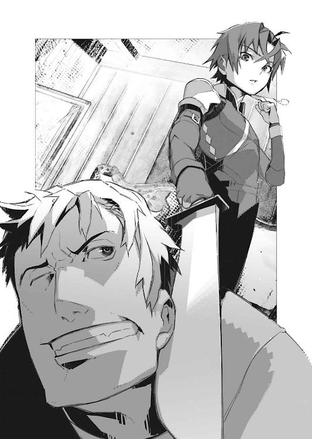
極端な話、戦闘訓練を受けておらずとも、荒事の現場をそれなりに経験していれば自然と身につく考え方である。やはり男達はトールの当初の読み通りに完全な素人──破落戸や山賊の類いですらないのだろう。
「......ちっ......」
鉈を突きつけられた男は、舌打ちする。
だが──あまりにも鮮やかに倒されたせいか、それともトールが必要以上に痛めつけなかったせいか、男達の顔に怒りや悔しさは窺えない。むしろひどく疲れた様な──あるいは何かを諦めた様な、緩んだ表情になっていた。
「なんなんだ。人買いって訳でもなさそうだが？」
そもそも専門職にしては、やる事がぞんざい過ぎる。たまたま街で見かけた人間を、いちいち人を集めてさらうなど──『商品』の仕入れとしては非効率も甚だしいだろう。
となると......
「トール......！」
チャイカの声に振り返るトール。
彼が守るべき彼女は──小さな刃物を首筋に突きつけられて両手を『降参』の形に掲げていた。刃物の柄は店主が握っている。
「......あんたもグルか」
眼を細めてトールは問う。
だが店主は悲しげな表情で首を振った。
「グルじゃない。だが事情は同じだ」
「事情？」
「女が......若い女が必要なんだよ」
「............」
それはつまり──街で女を見かけなかった事と、繫がりが在るのだろう。
余程、切羽詰まった事情で、若い女が必要であるらしい。単に男達が女に飢えているという訳でもなさそうだが......
「そいつは残念だったな」
トールは肩をすくめて言った。
「よく見ろ。そいつは男だ。胸とか全然ないだろ」
「......へ？」
店主が眼を丸くし──改めてチャイカの顔をのぞき込もうとして、首筋につきつけていた刃物が少し離れる。
次の瞬間。
──ぢぃん！
金属の悲鳴と共に、店主の手から刃物は吹っ飛んでいた。
トールが懐から抜き撃った、手裏剣の一撃である。
己の顔をかすめて壁に食い込んだ手裏剣を見て──店主は表情を驚きと恐れで弛緩させた。その気になれば、トールは店主の額にそれを撃ち込む事も出来たのだと、分かったのだろう。男達も毒気を抜かれた様に呆けた表情でトール達を見つめている。彼等もまた『手加減された』のだと気付いているのだ。
トールがその気ならば、この場に居る全員が死んでいると。
「──ッ！」
脱力する店主から解放されトールに駆け寄ってくるチャイカ。
彼女は全身でぶつかる様にしてトールの胸に飛び込んで──
「トール！」
襟首をがっちりと両手で摑んできた。
「私──女！」
そう訴えてくる彼女の紫眼は、ひどく恨めしげである。
「あー......いや。だからそれはな」
トールはチャイカから視線を明後日の方向に逸らしながら言った。
「言葉の綾っつーか、相手の油断誘う為の噓だから」
「胸！ ある！」
トールの襟首から手を離し、自分の胸に当ててチャイカはそう言うと──渋々といった様子で一言付け加えた。
「............少し」
「分かった分かった。俺が悪かったよ」
「むー......」
不満顔で自分の胸をぺたぺたと触るチャイカ。
そんな彼女はとりあえず放置して──トールは店主の方を振り返る。
「とりあえず事情を説明してもらおうか？」
改めて威嚇する様にもう一本手裏剣を取り出して見せながら、トールは言った。
領民が、領主の屋敷に使用人として召し抱えられるのは、珍しい事ではない。
貴族の屋敷で働く事は、領民にとっても利点が多い。
単に賃金が良いというだけでなく、貴族の屋敷で働いていたという事実だけでも、箔が付くし──殊更に金を払って教えを請わずとも、礼儀作法や読み書きを覚える機会にもなり得るからだ。
更に言えば、若い娘ならば、貴族本人やその周辺の者達──上流社会の人間に見初められる事も在り得る。勿論、身分が無ければ正妻になるのは難しかろうが、跡継ぎを産めば子供と共に貴族の仲間入りが出来る。それは庶民にとって非常に分かり易い成り上がりの図式なのだった。
ガヴァーニ公爵領においても、そうした事情は同じだった。
公爵邸において働く家政婦や侍女の公募が行われれば、庶民の娘達は競う様にしてこれに応じた。年に一度在るか無いかという公募に、領内から百人以上の娘達が集まるのも、珍しくなかったという。
だが──ある時を境に事情が変わった。
「娘達が......帰ってこなくなりまして」
店主は沈鬱な表情でそう言った。
公募は続けられていた。
いや──その頻度は何倍にも増えた。
当然、公爵邸に召し抱えられる娘達の人数も増える。
だが......本来ならば入れ替わりに暇を出される筈の者達が、一人も帰ってこない。それどころか、家族への便りも絶えたのである。
おかしいと心の片隅で想いつつも......人々は『忙しいからか』などと適当な理由を付けて、自分を納得させていた。
ガヴァーニ公爵家は、領内においては絶対支配者である。
化石念料の採掘と、その精製・販売・流通に対する税収によって、ガヴァーニ公爵家の財力は豊かで──それを背景にして維持される武力も権力もまた強大であった。ましてやガヴァーニ公爵家はヴィーマック王国が正式に認めるこの地方の領主だ。
明確な根拠も証拠も無く、領民がガヴァーニ公爵家のやる事に異を唱えたり、王国の中央に訴え出る様な真似は、不可能であった。
だが当然......不穏な空気は瞬く間に広がる。
使用人の募集に応じる娘は居なくなった。
すると今度は......問答無用の強制連行が始まったのである。
ガヴァーニ公爵家直属の精鋭部隊が、領内の街を巡り、若い娘に限らず、女達を強制的に連れて行くのである。勿論これに抵抗した領民も居たが......そもそも完全武装の精鋭部隊を相手に、武器を持った事も無い領民が太刀打ちする事など、出来る筈も無い。
また、先に連れ去られた娘達が人質になっている様なものでもあり──その意味からも、領民達はろくに抵抗する事が出来なかった。
「なるほどな」
トールは背後を振り返って言う。
そこにはトール達を襲ってきた男達が、縛られた状態で転がされている。
ちなみに縛る縄は、彼等自身が持参したものだ。これでチャイカを縛って連れて行く積もりだったのだろう。
つまり──
「で、自分の所の妻や娘を差し出したくないから、よそ者を代わりにってか？」
「............」
トールの言葉に眼を伏せる店主。
半ば口から出任せだったのだが──外れていなかった様だ。
結局の所、領民達にはガヴァーニ公爵家が何を目的に女達を集めているのかは、分からないままだったが──それは逆に言えば、連れて行かれる女達に条件らしい条件は何も無いという事である。
容姿も年齢も教養も関係が無い。
『女なら誰でも良いのではないか？』
領民達がそう考える様になるのに、さして時間は掛からなかった。
自分の家族や恋人の代わりに『生け贄』を差し出しておけば、ガヴァーニ公爵家の直属部隊は満足して帰ってくれる。その事に気付いたガヴァーニ領内の人々は、背に腹は代えられぬとばかりに、奴隷商人から適当な娘を買い付けて差し出したり──場合によっては、街や村を訪れた余所者を捕まえて、身代わりにしたりする様になったという。
チャイカが注目されていたのはこの為だ。
しかし──
「抵抗？ 反抗？ ない？」
不思議そうにチャイカが尋ねる。
「確かに、そこまでやられたら、兵士の方でも反乱とか起きそうなもんだけどな」
トールは顔をしかめて言った。
領内に居る兵士は、何もガヴァーニ公爵家直属部隊の者ばかりではないだろう。むしろ絶対数でいけば一般兵士の数の方が何倍も多かろうし──そうした者達の多くは、親類縁者に一般領民が居る筈だ。家族や恋人を強制的に連れて行かれれば、そうした者達も反発を覚えて当然である。
「一度......起きましたが......」
別の街である部隊が、女達を取り戻す為に行動を起こしたらしい。
だが、彼等は瞬く間に鎮圧されてしまい──兵士達は全員が殺されたという。
これを境に直属部隊の強制連行は苛烈さを増し......消極的であれ、積極的であれ、強制連行に抵抗する者は、斬り殺される事になった。むしろ状況は悪化しただけだった、という訳だ。
「なるほどな。足並みも揃わなかった──か」
「............」
店主は力無く頷いた。
「トール？ 要求──説明。足並み？」
チャイカがトールの服の袖を引っ張って尋ねてくる。
「ばらばらに挑んでたら、勝てる戦も勝てなくなる。あの連中と同じだよ。ばらばらに戦ったら、そりゃ、個人の力量で優る方が圧勝するさ」
と言ってトールは縛られた男達を一瞥する。
「領主に対する不満つっても、それぞれ、温度差や、事情の違いも在るだろうしな」
イヴェコの街に限らず......ガヴァーニ領内は、化石念料の産出で潤っている。
人々の生活は、フェルビスト大陸の平均水準から比べると、かなり上だ。
だからこそ、領民達はその暮らしに慣れる。慣れて手放せなくなる。
そして領主に対する反抗は、そのまま自分達の生活の崩壊を意味する。万が一にも領主を倒せたとしても、それは化石念料の採掘と流通を一手に握っていた統治者がいなくなるという事であり──自分達の生活はその瞬間に、底辺へと墜落する。
反乱や逃走に躊躇を覚える者達は無くならない。
まして『生け贄』を差し出す事で矛先をかわす事が出来るなら──と考える者まで出てきては、もう領民達をまとめあげて領主に抵抗するのは不可能だろう。命懸けで戦うよりも、金で解決できるなら、その方が楽だ。
「家族──差し出し？ 生活の為？」
信じられないといった表情でチャイカは言う。
亡き父の遺体を弔う為──そんな理由で、お尋ね者になりながら生きてきた彼女にしてみれば、自分の生活の為に家族を差し出すという行為が、理解出来ないのだろう。
「別に珍しくねえよ」
と苦笑してトールは言った。
世の中にはごくごく普通に、自分の子供を金で売る親が居る。
そもそもアキュラの里にはそうして端金で買われてきた子供達も居た。チャイカの理想はともかく、現実的には親子の絆、家族の絆、というものはそう強固なものではないという事だ。少なくとも──金銭で切断可能な程度には。
その事の是非を論じられる様な立場に、乱破師たるトールはない。
ともあれ......
「領内から逃走──不可能？」
「それも難しいだろうな」
前述の通り、それは今の生活を根こそぎ棄てる事になる。
生半可な決意では、難民になどなれまい。
そもそも領内から逃げだそうにも、その経路は限られているし──そもそも街門や主要な街道への連絡路には、ガヴァーニ公爵家の派遣した兵士が常駐している。見つかれば、それこそ家族どころか、関係者全て皆殺しになりかねなかった。
それに──
「連れていかれた娘達は、ただ『帰ってこない』だけだ」
「むぃ？」
「『殺された』って証拠が無いんだよ」
ただ帰ってこないだけならば、『生きているかも』という希望は残る。
ガヴァーニ公爵領内から逃げ出すという事は、『生きているかもしれない』家族を見捨てるという事に他ならない。まして死体の一つも出ない事には、それまでの生活を根こそぎ棄てられる様な危機感にも直結しにくい。元より閉鎖性の高い土地柄故に、領民同士の関係も密であるから──自分達だけが逃げる、という発想に対して忌避感が働いたという事もあるのだろう。
「厄介な話だな」
トールは溜息をついて言った。
「その──連れてかれた女達は、本当に一人も帰ってこないのか？ 兵士達の口から、何か漏れては来ないのか？」
どれだけ箝口令を敷いても、噂は人の口から漏れ落ちるものだ。女達を連れに来る兵士達の口から、何か内部の様子が聞けてもおかしくはない筈なのだが──
「それが全く......本当に一言も......」
兵士達は、そもそも全く口を開かず、領主の令状を領民達に示してみせるだけだという。
「誰か屋敷まで様子を見に行った奴は居ないのか？」
「無理です」
店主は即答した。
彼は泣き笑いの様な表情を浮かべて──傍らの壁に設けられていた窓の鎧戸を開く。
「そもそも近づく事も出来ません」
途端、陰気だった室内に外光が雪崩れ込んでくる。
だが店主の表情は憂鬱なままで──彼は窓の外を指さした。
「大公様の今のお屋敷は......あれですから」
店主が指さす先。
そこに見えたのは、蒼い空と、白い雲と、そして。
「──あれは」
一瞬──それが何なのか、トールには分からなかった。
知識としては勿論、知っていた。だが現物を見た事が無かった為と──あまりに遠く離れていて距離感が狂っていた為に、視界に映るそれが、即座に脳裏の知識とは嚙み合わなかったのである。
遥かな丘陵線の向こう側から、それはゆっくりと姿を現す。
音も無く──まるで月が、太陽が、星々が、人々の頭上にいつの間にか在る様に。それが当然と言うかの如くに堂々と......
「航天要塞！」
傍らのチャイカが驚きの表情で叫ぶ。
その一言で、ようやくトールは自分が見ているものが何なのかを理解した。
空飛ぶ巨大な円筒。
端的に言えば......それは、おおよそその様な形状をしていた。
周囲の空に浮かぶ雲が、横に広がる曖昧な形をしているせいで──尚更に、そのくっきりとした縦長の輪郭は、周囲の風景から浮き上がって見える。明らかに人工的なその姿は、蒼穹の只中に在って、完全に異物であった。
しかも──大きい。
異様な程に巨大なのだ。
そもそも比較する物体が周囲に無いので、正確な大きさを地上から目視で推し量る事は難しいが......恐らく中途半端な城塞よりも、遥かに巨大だ。
建築物と比較する場合は『塔』が近い形状をしているが、恐らく、トール達が今までに見たどんな塔よりも『高い』だろう。傍を飛んでいる鳥──だろう多分──がまるで点にしか見えない。
そんな巨大な物体が、羽ばたく羽根も無ければ、支える台も吊す鎖も無いまま、ただ空中に在る......それは不自然を通り越して、幻想的とも言える光景だった。
航天要塞。
それはフェルビスト大陸全体でも十基と存在しない超巨大兵器であり、最強の魔法兵器でもあった。その名の通り、それは空飛ぶ要塞──数千もの兵を乗せて最前線に向かう強襲戦力だ。
戦国時代の終わり、ガズ帝国首都討伐戦において、四基が投入された際には『一国どころか世界をも滅ぼせる戦力』とまで言われた代物である。世界云々は誇張であるとしても、単純な破壊力という意味ならば、このフェルビスト大陸において最強なのは間違いない。小国ならば一基でも滅ぼす事が可能かもしれなかった。
「あれが──」
地平線の彼方に浮かぶ超巨大兵器を見上げながら、アカリが呟く様に言った。
「ここの領主の城だと？」
「ガズ帝国の首都攻防戦で使われたものの一基だそうだ」
トールは言った。
先の店で改めて化石念料を買い付けて、そのままトールとチャイカは街の外に停めた〈スヴェトラーナ〉号の所まで戻ってきた。イヴェコの街の中に居ては、いつまた他の男達に襲われるとも限らないからだ。
「ヴィーマック王国から出撃した二基の内の片方だな。確かガズ帝国側の局地戦用大規模攻撃魔法を連発で食らって、防御しきれず一部損壊──王都カドウェルへ帰還出来なかったとか」
「それで全壊しなかっただけでも驚異だな」
「本当にな」
トールは溜息をついて言った。
なるほど──あんなものが領主の館として自分達の頭上を飛び回っていれば、領民も兵士達も反抗する気力など生じまい。
相手は文字通りに空飛ぶ巨大要塞だ。中に入れば逃げ出す手段は無いし、魔法でも使わない限りは外から攻撃する手段も無い。そして、生半可な魔法攻撃があの要塞に通用する筈もないのは誰の目にも明らかだ。
「城落としは難しそうだ」
アカリは腕を組んで言った。
城落とし。それは乱破師達の本領の一つである。
先に城の中に潜り込み、後続の本隊が攻めやすい様に下準備を──破壊工作をしたりするのは、大抵の戦場において乱破師の仕事だ。故に、乱破師達は、簡単ながら建築関係の知識も持ち合わせている。外見からおおよその内部構造を把握出来る様に。
だが......
「あれはさすがにな......」
トールは顔をしかめてそう応じた。
航天要塞は機密の多い兵器で、その内部構造は殆ど知られていない。
また──航天要塞は通常の建物の常識が通用しない。建築というものは基本的に確固たる地面の上に構造物を組み上げる事が前提になっている。その意味で『要塞』と名はついているものの、あれは、通常の要塞とは全く似て非なる造りになっている筈だった。
航天要塞は......むしろ機車に近い。
つまりはあれそのものが一つの巨大な魔法機関なのである。
勿論、人間が乗り込む部分は付随しているが、本質的にはチャイカが持っている機杖と同じものだ。ならばその内部構造はむしろ建物というよりも機械寄り──つまり内部構造を推し量れるとすれば、それはトール達の様な乱破師ではなく、魔法や機杖に対して詳しい人間──魔法師や魔法機匠だという事になる。
「別に、あの城を攻めにゃならん訳でもないんだが」
トール達の目的は、あくまで領主ガヴァーニ公爵が持っているという『遺体』の奪還だ。
ガヴァーニ公爵家を真正面から相手にして攻める意味は無い。
とはいえ──
「中に入ってみない事には何ともならんな」
「そうなんだよな」
アカリの言葉にトールは頷いた。
強奪するにせよ、盗み出すにせよ、あるいは交渉して譲り受けるにせよ、まずはそのガヴァーニ公爵家の人間と会わねば始まらないのだが──そもそも、領民ですらこの三年以上、ガヴァーニ家の人間を目にしていないのだという。
街に降りてくるのは直属の兵士達ばかりなのだとか。
「だがどうやって入る？」
相手が空の上では、トールやアカリにそこまで辿り着く手段は無い。
「チャイカ」
「むい？」
声を掛けられてチャイカは手を止めて振り返ってきた。
今、御者台の上に居る彼女の手元には、空薬莢が数十個と、小さな天秤が置かれている。手に入れた化石念料を早速、薬莢の中に詰め込んでいるらしい。十分な量とは言えないが、これで魔法を撃てる残り回数が三倍以上に増えた。
「おまえ──魔法で空を飛べたりしねえ？」
「......困難」
とチャイカは顔をしかめて即答してきた。
「航天機兵──専用魔法機杖使用」
「......そりゃそうか」
フェルビスト大陸にある幾つかの国では、航天機兵と呼ばれる戦力が存在する。
これは端的に言えば、魔法で空を飛ぶ兵士達の事だが──この場合、当然ながら航天機兵は魔法師であるか、あるいは魔法師の補助者を連れていなければならないし、専用の魔法機杖を用意する必要がある。
言ってみれば〈スヴェトラーナ〉号の飛行版である。
汎用性は低いが、その機能に特化した機杖──というものが必要なのだ。
「それに飛べた所で内部に入り込むのは難しいと思う」
アカリは言った。
「局地戦用大規模殲滅魔法にも耐えたとなれば──その護りは相当なものだ。恐らく毒煙や火炎に対する防御も考えられているだろう」
「......そうだな」
魔法の中には、揮発性の毒物を精製するものも在る。
空飛ぶ要塞だからこそ──通常の要塞と異なり、万が一にもそんな攻撃を受ければ、内部の人間は逃げ場が無い。それこそ鼠どころか、虫の這い出る隙間も無い位に防備は固められている筈だった。
「まあ換気はせにゃならんだろうから、窓や換気口の一つや二つはあるだろうけどな」
「それをどうやって開けさせるかだが」
そんな事をトールとアカリが喋っていると。
「トール」
チャイカが何か思いついた様子で言った。
「頼む。フレドリカ？」
「フレドリカ？ あ──」
トールは頷いた。
「そうか。そういやあいつは飛べたな」
「うい。大きさ──自由自在」
「つっても──今どこに居るのか分からないだろ、あの野良猫」
「猫じゃないもん。竜だもん」
そんな声が唐突に降ってきた。
「............」
トールは眼を半眼にして傍らを見遣る。
彼女が唐突なのはいつもの事だ。猫の様にふらりと現れて、猫の様にふらりと消える。トールとしてもいい加減、慣れてきた。
「呼んだ？」
いつの間にやってきたのか──近くに生えている樹の枝から逆さまになって金髪の少女がぶら下がっていた。
「呼んだよね？」
と少女は屈託の無い表情でそう言うと──するりと、本当に猫の様に危なげない身のこなしで枝から下りて空中で一回転。すとんと両足で地面の上に立った。
可愛らしい少女だ。
長く繊細な黄金の髪も、宝玉の様な真紅の瞳も、実に鮮やかで華やかである。少し上向きでつんと尖った鼻先や、唇の間に覗く八重歯が、少し動物的で小生意気な──しかし愛嬌たっぷりの雰囲気を醸し出している。
その場に居るだけで場が明るく賑わう様な──そんな少女だ。
「フレドリカ......」
「はい。フレドリカだよー」
とにこにこと少女──フレドリカは笑って片手を振って見せる。
「いつも唐突だなお前は」
「うん。トールは元気だった？」
言いながらフレドリカはトールに歩み寄ると......何を考えているのか彼の手をいきなり摑んで引っ張ってきた。攻撃的な仕草でもないのでトールは引かれるままに上体をわずかに傾けると──
「──ん」
ぺろり......とフレドリカは彼の頰をなめた。
「──っ!?」
予想外の行為に、思わず跳ぶ様にして後ずさるトール。
同時にチャイカが思わず薬莢やら天秤やらをひっくり返して立ち上がり、アカリが眉をひそめて一歩前に踏み出した。
「何やってんだお前は!?」
「うん。健康そうだね」
思わず叫ぶトールに、フレドリカは何ら悪びれた様子も無く笑う。
「だから何やってんだお前は!?」
「味見」
しれっとフレドリカは言った。
「あ......味見？」
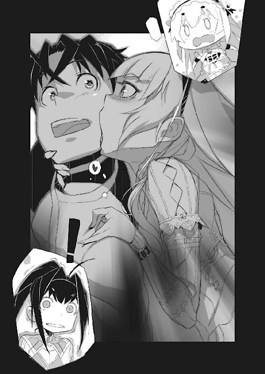
「ほら。何度か私、トールに嚙み付いてるでしょお」
フレドリカはにっ──と八重歯をむき出しにする。
少女の容姿の中に組み込まれてみれば、その尖り歯も可愛らしく見えたりするが......それが実際には、獲物の皮を穿ち肉を裂く凶器、文字通りに牙そのものなのだという事を、トール達はよく知っていた。
「大体トールの『味』は覚えたから。体調崩してたりすると分かるんだよ」
「......そういうもんなのか」
「うん。そういうもの」
まるで『偉い？』と言わんばかりに得意げな顔でフレドリカは頷く。
「兄様。大変だ」
アカリがトールに向けて歩み寄りながら言った。
その表情も声音もいつも通りだが──
「早くなめられた場所を熱湯消毒しなければ」
大真面目な顔と声でアカリは言った。
「チャイカ──急いで湯を沸かしてくれ。手遅れになる前に」
「う──うい」
慌てて頷きながらチャイカは薬缶を取りに〈スヴェトラーナ〉号の中に駆け込み──はせず、何故か機杖を構えた。その先端はトールの方を向いている。
「ちょっと待て何をする気だお前は」
「熱湯消毒。大急ぎ」
「いやだから」
「直接、体液沸騰」
「落ち着け！」
悲鳴じみた声でトールは言った。
「動物になめられた程度で、いちいち血液沸騰させられてたまるか！」
「兄様。心配はいらない」
己の胸を叩いてアカリが言った。
「火傷したら、この私が舐めて消毒する」
「お前、言ってる事が無茶苦茶だって自覚はあるか？」
トールは半眼で妹を睨んで言った。
フレドリカは──見た目に反して人間ではない。
棄獣。
このフェルビスト大陸において、人間以外の、魔法を使う獣を総称してそう呼ぶ。
現在、その種類は七種が確認されているが、その中でも陸上において最強とされるのが装鎧竜という種類で──実はフレドリカはその化身だ。
装鎧竜は変幻自在に自らの姿を変える魔法を使う為、自ら負った傷すら『無かった事』にしてしまう化け物である。今も少女の姿をしているが、これはトール達と会話したり街中で動き回ったりするのに便利だからそうしているだけで──これが彼女の本来の姿という訳ではない。
いや──フレドリカに言わせると、装鎧竜にとって『本来の姿』というものはそもそも存在しないのだという。多くの者が装鎧竜と聞いて思い浮かべる巨大な翼と角を持つ、鰐か蜥蜴の様な姿は、あくまで戦闘用に一番都合が良いという姿であるだけだとか。
ともあれ......
フレドリカは、とある一件でトール達と戦い、敗れた結果、トールに再戦を求めてつきまとっている。
だが『もう一度戦え』としつこく言う一方で、トール達に対してあまり怒りや憎しみを感じている様子は無い。またふらっといなくなって何日も姿を見せない事が在り──今回もおよそ二十日ぶりだ──むしろその態度は、『遊んで』と飼い主にねだる猫の様な雰囲気である。
これがトール達の油断を誘う為に敢えて装っているだけの態度なのか、それとも、フレドリカの『素』なのかは分からない。中身が人間では無い為、そもそも、何を思ってトール達にちょっかいを掛けてきているのか──そんな単純な事すら未だに判然としないのだ。
「ところでフレドリカ」
「なに？」
トールに声を掛けられて首を傾げるフレドリカ。
「おまえ──空飛べる訳だよな」
「飛べるよ。勿論。羽根を生やせばだけどね」
「俺達を空中の──例えば、あれの所まで運ぶことは可能か？」
といってトールが指さすのは、勿論、彼方の空に浮かぶ航天要塞である。
棄獣はその殆どの種類が猛獣、いや凶獣として人々に恐れられているが、どちらかといえば装鎧竜は例外的な存在で......人間が出会しても問答無用で襲われるとは限らない。知能も人間のそれと同じか部分的にはこれを上回るらしく、人間の言葉を操る為──むしろ交渉次第では、装鎧竜の協力を取り付ける事も不可能ではない。
更に言えば『契約』と呼ばれる行為を経る事で、装鎧竜の魔法を自らのものとして扱う事の出来る兵士──竜騎士なる兵種も存在する。元々フレドリカも竜騎士ドミニカ・スコダと契約していた装鎧竜である。
トール達は過去に何度かフレドリカに交渉し、その協力を得ている。
今回もそれが可能ではないか、とトールは考えた訳だが──
「可能だけど」
きょとんとした様子で血色の眼を瞬かせながらフレドリカは言った。
「なに？ トール、あそこに行きたいの？」
「行きたい。頼まれてくれるか？」
「うん。嫌」
即答だった。
「............」
言葉に詰まるトール。
まあフレドリカは、厳密に言えば味方でも仲間でもないので、頼み事を断られてもこれを恨む筋合いは無いのだが......
「トールさ。この間も約束破ったじゃん」
上目遣いに、恨めしそうに、フレドリカはトールを睨んだ。
「約束？ ...............あ」
一ヶ月ばかり前の事だ。
とある事情から、チャイカがさらわれて居なかった事があり──その際に瓦礫に埋まった〈スヴェトラーナ〉号を掘り出して動かすのに、フレドリカの力を借りた事があった。
その際にトールは、フレドリカとの決闘を約束していたのだ。確かに。
だが──
「いやそれは......」
その後トールは、フレドリカの要請をのらりくらりとかわし続けている。
「私、すっごく楽しみにしてたのにな！」
「............」
「嬉しくて嬉しくて前の日は夜も眠れなかったのにな！」
「............」
「トール。酷い」
とチャイカまでがそんな事を言ってくる。
「どっちが酷いんだよ」
「むい？」
「お前は俺に死ねってのか？」
聞きようによっては何か、フレドリカがトールと逢い引きの約束でもしていて、それを反故にされたかの様にも聞こえるが──勿論ここでフレドリカが言っているのは決闘の約束であり、つまりは『殺し合い』をする約束な訳で。
「何度も言ってるけどな。最初に勝てたのは僥倖なんだよ」
トール達が以前、フレドリカに勝ったのは、チャイカやアカリと共闘し、更には奇計奇策を弄した結果である。同じ手は二度と使えまい。もう一度戦えば負けるのは九割九分トール達の方だ。
相手は陸上における戦闘において、棄獣七種の中でも最強と言われる装鎧竜──本来、乱破師が太刀打ち出来る様な相手ではない。敵は勿論、自分の命すらも粗末に扱うのが乱破師、目的の為には命を投げ出すのを惜しまぬと言われているが──さすがに最初から勝ち目の無い戦いや、勝っても得られるものが特に無い戦いに使い棄てる程、トールも命の安売りはしていない。
「最初の時に脳みそ搔き出しておくべきだったよな......」
などと物騒な事を呟くトール。
「そうだよ？ トールってば、どうしてそうしなかったのかな？」
「............お前が言うか」
基本的に肉体の破損を魔法で修復してしまう装鎧竜を殺す場合には、その魔法行使の根幹とも言うべき脳組織を完全破壊してしまわねばならない。かつてフレドリカと戦った際、その機会は在ったが──トールはそうしなかった。
何故かは、正直言ってトール自身にも分からない。
「だからもう一回しよ？ ね？ ね？ ね？」
フレドリカがトールの服の裾を摑んで言う。
まるで子供が小遣いか何かをおねだりしている様な風情であるが──
「だからな......おまえと戦って負けたら、チャイカの頼みを聞けないだろう。俺はチャイカの望みを果たしてやるまでは、死ねないんだよ。分かってくれよ」
「死ななければいいの？」
首を傾げてフレドリカは問うてきた。
「じゃあ、半殺しとか、瀕死とか、その位で私が嚙み付いて治してあげるから。ね？」
と──にこやかにそんな事を言うフレドリカ。
装鎧竜の持つ変身の魔法は、『契約』してその『一部』となった相手にも及ぶ。
本来は『契約』の際、身体の一部を交換する形で装鎧竜に捧げねばならないのだが──そこまで本格的にしなくても、装鎧竜が嚙み付けば、『仮契約』が成立する。嚙み付いた対象を、一時的ながら肉体の一部として認識、その魔法を適用出来るのだ。
「そしたら、何度でも殺し合いっこ出来るよね？」
「御免被る！」
むしろフレドリカの場合、治療しては半殺し、治療しては半殺しと、面白がって何度も繰り返しかねない。装鎧竜の魔法はあくまで肉体復元の結果として、『傷を消す』だけであって、逆に言えば、傷を受けた瞬間の痛みまで消してくれるものではないのだ。
毎度毎度、死ぬ様な痛みを食らわされていたら、それこそ、肉体は修復出来ても精神の方が先に壊れかねない。
「なによー。じゃあ私もトールのお願い聞いてあげない」
膨れっ面でぷいっと横を向くフレドリカ。
トールはしばらく、絶望的な表情でこの装鎧竜の化身を眺めていたが──
「............よし。じゃあこうしよう」
トールはぽんと掌に拳を打ち付けて言った。
「なになに？」
眼を輝かせて身を乗り出してくるフレドリカ。
何を勘違いしているのか、チャイカも興味深そうに身を乗り出してくる。
そんな少女二人にトールは堂々と言った。
「本当の戦闘は危ないからな。痛いし」
戦争職人の乱破師とは到底思えない台詞である。
アカリの何か言いたげな視線を横顔に受けながらトールは続けて言った。
「模擬戦闘でなら」
「模擬戦闘？」
「そうだ。ジャンケンという」
「......ジャンケン？」
フレドリカは眼を瞬かせてその単語を繰り返す。
アカリの、そしてチャイカの自分に向ける視線の温度が少し下がった様な気がしたが、とりあえず気のせいだとトールは思う事にした。
「一見単純だが、心理戦も含めた、奥の深い模擬戦闘だぞ」
「............」
フレドリカはしばらく考えていたが──
「じゃあとりあえず今回はそれでいいかな」
「じゃあ、後でな」
と──何となく後ろめたさを覚えつつも、とりあえずトールは話をまとめた。
何度見ても、それは見慣れる事ができない光景であった。
何か本能的な不安感を覚えずにはおれないのだ。
物は、上から下に落ちる。
それは道理であり常識だ。人々が生きていく上で依存せざるを得ない諸々の『当たり前』の一つである。普段は意識する事すら無い暗黙の了解。支えるものも吊すものもないのであれば、万物は下に落ちるのが当然なのである。
なのに『あれ』は悠然と遥かな空中に在る。
鳥の様にはばたくでもなく。雲の様に存在が希薄な訳でもなく。厳然たる重量感を備えながらも、それが当然の事であるかの様に空中に浮かんでいるのだ。
「航天要塞〈ソアラ〉......」
悠然と頭上を行く巨大な魔法兵器を見上げながら呟くのは......一人の青年騎士であった。
すっきりと涼やかな目鼻立ち、それに豪奢な金髪と大きな碧眼は、貴公子そのものといった印象である。単に優美なだけではない。凜然たる気品がそこには備わっているのだ。
アルベリック・ジレット。
ヴィーマック王国の騎士であると同時に、現在は複数国家から人材と資材を供出されて運営される超国家組織──戦後復興機関〈クリーマン〉の職員である。
もっとも超国家組織、などと言うと大仰だが......実際には、〈クリーマン〉機関とは、戦後にまで引きずる諸々の問題を片付ける為の、いわば『後始末係』に過ぎない。予算も人員も権力も限られた中でやりくりせねばならず、名誉や権勢とは縁遠い仕事である。
自分の意思で選んだ職場ではないとはいえ──ヴィーマック国王から出向を命じられたのである──生真面目な性格のアルベリックは勿論、全力で任務をこなしているし、今の自分の立場に不満を覚えたりする事も無い。
ただ──この〈クリーマン〉機関は、任務内容に比して与えられる権限は小さい。
この為、行く先々で交渉事が上手く回らず、ひどく難儀する事が多い。その度に余計な苦労をせねばならない部下達の事を思えば、もう少し強権が欲しい、というのがアルベリックの本音であった。
実際──今回も部下には無茶な事をさせている。
「何度見ても壮観ですなあ」
アルベリックの隣に立つ厳つい顔の巨漢が、目の上に掌で庇を作って言う。
ニコライ・アフトトル──アルベリックの副官だ。
頭の左右を綺麗に剃り上げ、頭頂にのみ髪を残しているのは、兜を装着した際の座りが良いからである。貴族や騎士と異なり、鎧や兜を自分の身体に合わせて特注製作する金銭的余裕の無い傭兵達に多い髪型で......特注品の鎧を持っていても、一種の伝統としてこの髪型にする者が居たりする。
ニコライもその一人だ。
幾つもの戦場を生き抜いてきたこの傭兵は、実戦経験という意味ではアルベリックとは比べものにならない古兵である。ジレットの率いる部隊の要であり、実務的な采配は彼がふるうことも少なくない。
「ヴィーマック王国の二番要塞。ガズ帝国首都討伐戦に参加した二基の内の一基ですな」
そう言ってニコライは手にした紙片をめくった。
そこにはアルベリックが〈クリーマン〉機関本部から取り寄せたあの巨大兵器の詳細や諸元が記されている筈だった。もっとも、航天要塞は、最高機密の塊とも言うべき軍事兵器である。〈クリーマン〉機関の力でかき集められた情報は、そう多くなかった。
「〈ソアラ〉はガズ帝国首都討伐戦で大きく損傷し、化石念料の消耗も激しかった事から王都へ帰還不能と判断され、このガヴァーニ領に緊急着陸、以後は領主ジラルド・ガヴァーニが管理してきた──と」
資料を読みながら言うニコライ。
「管理と言えば体裁は良いですが──まあ事実上の占有ですな」
「いかに大貴族とはいえ、よくもまあそんな事ができたものだと、感心するよ」
アルベリックは溜息交じりに言った。
「航天要塞ってのは恐ろしく化石念料を消費する代物らしいですからね」
見れば分かるが──あんな巨大な重量物を常に空中に浮かせておくには、莫大な力が必要になってくる。魔法といえども『より大きなものを動かすにはそれに比例した力が必要』という道理からは逃れる事ができないのである。
「便宜的にヴィーマック王国は、ガヴァーニ家を『管理責任者』に任命して回収を放置してきた様で」
「戦争が終われば無用の長物──その最たるものだからな」
為政者達は、戦争が終われば、途端に経済という現実を突きつけられる。
航天要塞の様に、ただ維持するだけでも途方も無い費用を必要とする超大型兵器は、むしろ存在そのものが国家の財政を圧迫するのだ。
勿論、修理や回収も同様──となれば、何かと理由を付けてガヴァーニ大公にこれを押しつけた、というのが本当の所だろう。
「ヴィーマック王国は勿論、どの国も、壊れた決戦兵器にかまけている余裕は無かった、という事なのだろう」
「──でしょうな」
ニコライが苦笑を浮かべて頷く。
彼にとっては、他人事でもないのだろう。
戦が終わり、それまではさんざん重宝されていたにもかかわらず、最早用済みとばかりに放り出されたのは、何も兵器に限らない。戦を専門に職としていた者の中でも、比較的切り捨て易い傭兵や乱破師達は、軒並み路頭に迷う事になった。
そしてそれは代々の武門──騎士の家に生まれたアルベリックにも当てはまる。
戦争が続いていれば戦場に出て活躍する筈だった彼も──戦後に始まった軍縮の結果、行き場を喪い、〈クリーマン〉機関に配属される事となったのだ。
ともあれ──
「このガヴァーニ領は元々化石念料の産出量が半端ないですからね」
副長の背後から、ひょいと顔を出してそんな事を言ってきたのは、小柄な少年である。
「土地柄、魔法師を含め、魔法関係の技術者も多い。応急修理と再起動程度なら出来た、という事でしょうね」
未だその容貌には幼い丸みを残しており、ともすれば少女と見紛う様な柔らかさが感じられる。細身だが脆弱という印象は無く、その体重を感じさせない様な軽やかな動きは、骨格と筋肉の均衡が健全な形でとれている証拠であった。
ただし多くの者は、この少年の姿を見れば先ず戸惑い、怪訝の表情を浮かべるだろう。
何しろこの少年は......獣の様な耳と尾を備えているからだ。
レオナルド・ストーラ。
彼は亜人兵である。
母親の胎内にある内から、各種魔法による処置を受け、人以外の姿と──そして特異な能力を与えられた存在。亜人兵の製造は比較的、近年に確立された魔法技術である為、そう数は多くない。それ故に彼等の多くは、人々の無理解から来る差別や迫害に晒される事がしばしばある。
レオナルドもまた居場所を得られないまま、〈クリーマン〉機関に流れ着いた人間の一人である。もっとも──戦後、真っ当な職を得られぬままに、奴隷や男娼に身をやつし、あるいは山賊や夜盗となって人を襲う亜人兵も少なくない現状を思えば、レオナルドは恵まれていると言えるが。
「しかしガヴァーニ公爵は一体......何を考えておられるのか」
アルベリックは航天要塞を見上げながら、呟く様に言う。
「政もほぼ放置状態、領内も何やら荒れ始めている様子──挙げ句に王国の決戦兵器を私物化。このままでは王国に叛意在りと見なされても仕方ないぞ」
「ま......私等が此処でああだこうだ言っても何も分かりますまい」
ニコライが宥める様に言った。
「とりあえずは報告を待ちましょうや」
「──分かっている」
わき上がる不安を胸中に押し殺して、アルベリックは頷いた。
『集団』というものは、それ自体が一種の威嚇である。
存在自体が威力そのものであるからだ。
簡単に『個』を圧殺可能な『数の力』は......その集団に属さぬ者から見れば、脅威以外の何物でもない。害意や敵意の有る無しは関係が無い。刃物や火薬と同じだ。問答無用で自分を捻り潰せる『力』がそこに在るという厳然たる事実が──不安感をあおる。
ましてや......その集団がこれ見よがしに武装し、足並みを揃えて行進している様は、見る者に対する無言の恫喝になり得る。
「............」
まるで死神の列に出会したかの様に──イヴェコの街の者達は一様に顔を伏せていた。
街の中央通りを、二十名程の兵士達が黙々と歩いて行く。
怒鳴る訳ではない。叫んだり喚いたりもしない。そもそも喜怒哀楽の感情など微塵も見せていない。ただ絡繰り人形の様に整然と歩いているだけだ。だが......だからこそ一切の問答や交渉を拒むかの様な、非人間的な空気がそこには在る。
しかも兵士達の顔は──その大半が仮面に覆われていた。
見えているのは口元のみ、そこすら揃って固く唇を引き結んでいる為に、兵士達に個別の印象が生じない。青い軍服の上から、硬革鎧と板金鎧を組み合わせた複合鎧を着込んでいる為、体型差というものも感じにくい。『個』を感じさせない姿は、まさしく集団──軍隊そのものの威圧感を放っていた。
ガヴァーニ公爵家直属の精鋭部隊。
領内の各所に出向いては、物資の補充や『人狩り』を行っている連中である。
青い軍服と仮面は、ガヴァーニ公爵家に直参する精鋭部隊の証であるとか。領内各所に配されている通常の兵士達は灰色の軍服で、細かな装備も異なっている。
そして──
『──傾聴せよ』
彼等の頭上からは声が降ってくる。
巨大な──空に蓋をするかの様に、人々の頭上にのしかかる巨大な構造物。
本来ならば空中に在る事そのものがあり得ないそれは、言うまでもなく兵士達の仕えるガヴァーニ公爵の城──航天要塞である。
声は、その巨大な空飛ぶ城塞から、発せられていた。
『イヴェコの街の領民よ。傾聴せよ。今期の御召し抱えである。御奉公を望む者は速やかに兵達の前に歩み出るべし。繰り返す。今期の御召し抱えである。御奉公を望む者は速やかに兵達の前に歩み出るべし──』
まるで老人の様な、低く潰れた声が告げる。
まるで──天上におわす神の声の如くに。
相変わらず『希望者を募る』形式をとってはいるが、これで奉公希望者が一人も居なければ、兵士達は黙って家々に踏み入り、隠れていた女達を連れて行く事になる。
航天要塞は三ヶ月に一度の割合で領内の空を巡り、全ての街や村で同様の事を繰り返している。積極的であれ消極的であれ、これに逆らえばどうなるかは──他の街や村で逆らった者達がどうなったかは、イヴェコの街にも噂として伝わってきていた。
そして──
「............」
ぴたりと揃って兵士達が立ち止まる。
通りの真ん中に一人の娘が立っていた。
『公爵の屋敷に連れられていった娘達は帰ってこない』......そんな噂を知ってか知らずにか、娘は特に怯える様子も無く、むしろ『待っていた』と言わんばかりに兵士達の方を見据えている。
長い黒髪で......目付きがややきつい印象の娘だ。
無表情である事もあって、媚びや愛嬌はあまり感じられないが、顔立ちそのものはよく整っている。単純に器量の良し悪しを問えば、誰もが『美人』と評する様な容姿であった。
「............」
兵士達はやはり無言である。
ただ数名が、娘の退路を断つかの様に背後に回り込んでいく。
娘はしばらく彼等の動きを見つめていたが──
『御奉公を望む者は兵士達と共に来るべし』
上から見ているのか......低く潰れた声が告げた。
同時に兵士達は身振りで娘を促し──彼女を隊列の中に組み込むと、再び中央通りを行進し始める。会話は自分達の仕事ではない、とでも言うかの様に、全員が一言も発する事は無かった。
そんな様子を物陰から窺いながら──
「............なんだ、ありゃ」
トールは顔をしかめて呟いた。
彼の傍らにはチャイカとフレドリカの姿も在る。
「トール？」
トールの横顔をのぞき込みながらチャイカが不思議そうに首を傾げる。
「心配？」
「いや。そうじゃなくてな」
トールは眼を細めて言った。
「兵士達の様子がな......見れば分かるだろ」
「......見事な行進？」
「見事過ぎるだろ」
（いくら訓練されてるからって......あんなに統制とれるもんなのか？）
表面的な話ではない。
トールの様に、一定以上の武術を修めた者は、相手の呼吸を半ば無意識の内に測る。
武術の練度は呼吸や歩調に出る事が多いからである。他人と出会えば、自分に倒せる相手かどうかを先ず推し量ろうとするのが、武術家というものだ。
だからこそ、トールには分かった。
あの兵士達──全員が、一切ズレの無い歩調で歩いている。異常な位に統制がとれているのだ。あるいは呼吸の調子すら揃っているかもしれない。まるで二十人もの部隊そのものが、一つの生き物であるかの様だった。
（そりゃ理屈の上じゃ不可能でもないが......）
文字通りに、一糸乱れぬ動き。
それは軍隊においてある種の理想だ。歩調を揃えて行軍するという事そのものは、別に珍しい事ではない。部隊内での一体感を高めるし、敵対する者には集団としての威圧感を存分に与える事が出来る。
だが、たかが街を歩くというそれだけの為に──ここまで呼吸を揃えて動く意味など在るまい。
「......チャイカ」
「むい？」
「あれ──あの谷底で見た様な、素材物質の兵士って事は無いか？」
素材物質と呼ばれる、魔法に反応性の高い特殊な物質を用いて、人形を──魔法師の思い通りに動く傀儡を作り上げる事は、可能だ。実際にトール達はそうして作られた人形と戦った事が在る。
しかし──
「............調査？」
チャイカは、抱えていた魔法機杖を通りに向ける。
探査系の魔法を使うかという意味だろう。だがトールは首を振ってこれを停めた。
「魔力源が勿体ない」
今どうしても確認しておかねばならないという事でもない。
「なに？ アレが生きた人間かどうかって話？」
フレドリカが首を傾げて尋ねてくる。
「そうだ。分かるのか？」
「分かるよ。匂いするもの」
当然といった口調でフレドリカは言った。
「匂い？」
「生きてる人間は、特有の匂いがするの。少なくとも人形とか死体とかじゃないよ」
「......そうか」
細かい理屈は分からないが......フレドリカがそう言うのなら、間違いなかろう。ここで彼女がトール達に噓を教える意味も無い。
ただ──
（あれが訓練の賜だっていうのなら......）
いざ事を構える場合に、少々厄介だった。
気味悪い程に揃った動き。それが尋常ならざる練度の証になるからだ。
『個』を殺しきって集団で一匹の獣の様に動き回るという事は──単に肉体だけでなく、精神的にも非人間的な程の修練が必要になってくる。
先の......素人の男達と戦った時の様には、いかない。要するに一対一に持ち込めないという事だ。真正面から戦えば、間違いなく相手の『数』に押し潰される。
勿論トールには、わざわざ真正面からあの兵士達と戦う積もりは無いが。
あくまで彼は──航天要塞の中に在るであろう『遺体』を手に入れられればそれで良いのだから。
「......とにかく」
トールは兵士達と共に歩み去っていく娘の後ろ姿を見送る。
アカリである。
先に航天要塞の中に侵入し、中からトール達が侵入する為の手引きをすべく、ガヴァーニ公爵の『御召し抱え』に敢えて応じたのだ。
「頼んだぞ」
妹の背に向けてトールはそう呟いた。
低く鈍い駆動音が真上から降ってくる。
まるで地鳴りの様な──本来ならば足下から這い上がってくる筈の音が、聴く者の頭を押さえつけるかの様に、圧迫感を伴って。
「............ふむ」
アカリは頭上の黒い巨影を見上げた。
航天要塞。フェルビスト大陸最強にして最大の魔法兵器。
文字通りに空に蓋をするかの様な巨大さだ。普通に振り仰いだ限りでは、アカリの視界は全て航天要塞の底部に覆われている。
その一部が......割れた。
「なるほど。あれが昇降機か」
無表情にそれを見上げながらアカリは小さく呟いた。
頭上から降り注ぐ鈍い駆動音に──ぎいぎいと鋼鉄の軋む音が混じる。
航天要塞の底部装甲──その一部が剝がれ落ちるかの様にしてアカリ達の所まで降りてくる。それは大きな──〈スヴェトラーナ〉号がそのまま載せられそうな、一枚の『板』であった。それが井戸の水汲みに使う桶の様に、上から鎖で吊り下げられているのだ。形は円形。人間や荷物の落下を防止する為か、周囲は鉄柵がぐるりと取り巻いているのも見えた。
航天要塞は基本的に着陸しない。
その巨大さ故に、着陸すれば底部に重量が集中し歪みを生じかねないのだ。
建造時、あるいは整備時には、専用の巨大な縦孔にすっぽりと格納されて、全体でこれを支える様な形になっている。非常時の場合にもそれなりに深さのある湖や海に着水するのが基本だとか。
当然、一旦起動して、空に舞い上がった航天要塞への出入りは──兵員の出入りから各種物資の搬入まで──全てこの昇降機で行われる。
そしてこれが航天要塞を難攻不落たらしめている要因の一つなのである。
通常の兵力では、たとえ大軍勢を用いてもこれに攻め入る事が出来ない。
ある種の航空戦力......飛行用魔法機杖を装備した航天機兵や、竜騎士は自ら飛んで航天要塞に達する事も可能だが、そうした特殊兵力は数が限られる。そもそも人間という生き物は、空を飛ぶ様には出来ていないのだ。誰もが飛行用魔法機杖を与えられたからといって、当然の様に空を飛べる訳ではない。
「............」
ずん......と重い音を立てて、昇降機がアカリ達の前に着地する。
駆け寄った兵士達が、鉄製の柵の一部を開き、彼女を振り返ってきた。
昇降機に乗れという事なのだろう。アカリは素直に彼等に従い、巨大な鉄板の上に立つ。兵士達が彼女を囲む様に乗り込むと──誰が合図した訳でもないのに、昇降機は再び鎖に吊されて上昇を開始した。
（やはり『正面玄関』からは無理だな）
アカリは周りの兵士達を見回しながらそんな事を考える。
この昇降機は構造的に一枚の鉄板に過ぎない。落下防止に柵が付いているが、それだけで、人間が一人隠れられる様な物陰は無い。また──これが降ろされるのは開けた場所なので、そもそも部外者が近づく事も出来ないだろう。
航天要塞は最前線で使われる事が多い。なのでこれは当然の仕様だった。敵兵が簡単に潜入できる様では、お話にならないからだ。
やがて──
「............ふむ」
昇降機は、航天要塞の底部中央に──そこに穿たれた孔に、蓋をする様にして塡まり込む。同時に太い鉄棒が周囲から伸びてきて、昇降機の鉄板部分に食い込みこれを固定した。
これで通常の出入り口は閉ざされた事になる。
「............む」
そこは広い部屋だった。
『部屋』や『室内』という言葉で表せば、誤解を生じかねない様な規模である。民家なら数軒は建てられそうな面積だ。天井も高く──空間としてはやたら大きい。
恐らく物資を積み降ろしする為の場所なのだろう。
壁際には幾つもの木箱が積まれているのが見えた。
そして──
「......あれは」
その傍には十人余りの女達が身を寄せ合う様にして座り込んでいるのが見える。
恐らくは今回の『御召し抱え』で連れてこられた女達であろう。航天要塞はイヴェコの街のみならず、領内の幾つもの街や村を巡って物資や女達を集めてくるらしい。隣の街や近隣の村は同じ日に続けて回る事で、一旦、全員をここにまとめるのだろう。
それまで人形の様に直立不動だった兵士達が、再び動き出す。
だが今度はアカリを促す様子も無く、他の女達に構うでもなく──壁の一郭に開いた出入り口から隊列を組んだまま、黙然と出て行ってしまった。
「む？ 一体──」
どうしろというのか。
あまり堂々としていて不審がられてもまずい。
ここは女達の傍に行って、自分も身を寄せ、不安そうに振る舞うべきだろうか。アカリがそう考えて眉をひそめていると......
「──よう参った」
兵士達と入れ替わる様にして出入り口に人影が湧いた。
アカリは眼を細めて立ち止まる。
小柄な男が、一人......そこに立っていた。
恐らく先に航天要塞から降ってきた『お告げ』の声の主であろう。低く潰れた声で何処か老人のそれの様にも聞こえるが......見た目は中年男性、年齢は四十前後だろう。
線の細い──いかにも神経質そうな顔立ちである。頰骨が浮いているのでその顔は妙に瘦せて見えるが、体型の方はよく分からない。幅広の肩鎧と、その下に首から下をすっぽりと覆い、床にまで達するマントを帯びているからである。
「私はグラート・ランシアである」
男はアカリを、そして女達を睨め付けながらそう告げた。
「ガヴァーニ公爵家の家令である」
家令──つまりは執事か。
つまり現ガヴァーニ公爵邸がこの航天要塞なのだとすれば、その内部を取り仕切る人間という事になる。要するに、集められた女達の直接の上司だ。
「まずは全員、そちらに用意されている服に着替えよ。細かい沙汰は追って指示する」
そう告げるとグラートはくるりと踵を返してそのまま立ち去ってしまった。
アカリや女達がグラートの指し示した方を振り返ると、確かにそこには半開きの木箱が一つ置いてあり、侍女の衣装らしきものが詰め込まれているのが見えた。
（──早めに着替えるべきか）
木箱に歩み寄りながらアカリは考える。
当然だが──彼女はこの航天要塞潜入にあたって、衣装のあちこちに道具や武器を仕込んできている。さすがに愛用の鉄槌は隠しきれないと判断したので持ってきていないが──いずれにせよ着替えるとなると、それらを改めて隠し直さねばならない。
何かと隠し易く融通の利く大きめの服を、早めに押さえておく必要があるだろう。
アカリは木箱に手を伸ばし──
「......む」
そこで同じく、木箱に伸ばされた誰かの手とぶつかった。
多くの女達は未だ戸惑いを隠せず、殆ど動きを示していない。そんな中で──アカリと同じく、早めに着替えようと考えて木箱に近づいた女が居たという事だろう。反射的にそちらを振り返り──
「──!?」
眼が合った──次の瞬間。
アカリと相手はほぼ同時に右手を走らせていた。
相手は己の髪に。アカリは己の腰に。
アカリは腰帯に隠す様にして手裏剣を二本吊している。投擲して使う事も多いが──文字通りに手裏剣は掌に隠せる程度の小型剣としても使えるので、握って斬り付ける、あるいは相手の武器を受け止めるのにも使える。
だが──
「............」
動くのも同時なら、止まるのも同時。
アカリと相手は、共に凍り付いたかの様に動きを止めていた。
奇妙な均衡が二人の間に横たわる。
そのまま睨み合う事──数秒。
「──ヴィヴィ？」
相手の後ろから、別の女が声を掛けてくる。
肩口で切り揃えた髪型で、鼻には小さな眼鏡を引っかけた、小柄な少女。
どうやらアカリと向き合っている少女とは知り合いらしいが──一瞬、怪訝の表情を浮かべて彼女もまたアカリの方を見る。
そして──
「......!?」
それからその少女もまた、眼を丸くして凍り付いた。
ここで、ようやく動き出した他の女達が──静止しているアカリ達の横で、次々と衣装を取り出しては着替え始めた。中には、一番最初に着替えようと動きながら、硬直して睨み合うアカリとその相手に、怪訝そうな一瞥を投げかける者達も居たが......それ以上他人を気にしている余裕は無い様だった。
そして──
「......奇遇だな」
アカリは無表情に言った。
「本当にね」
と相手の金髪少女が、微笑んでそう応じてくる。
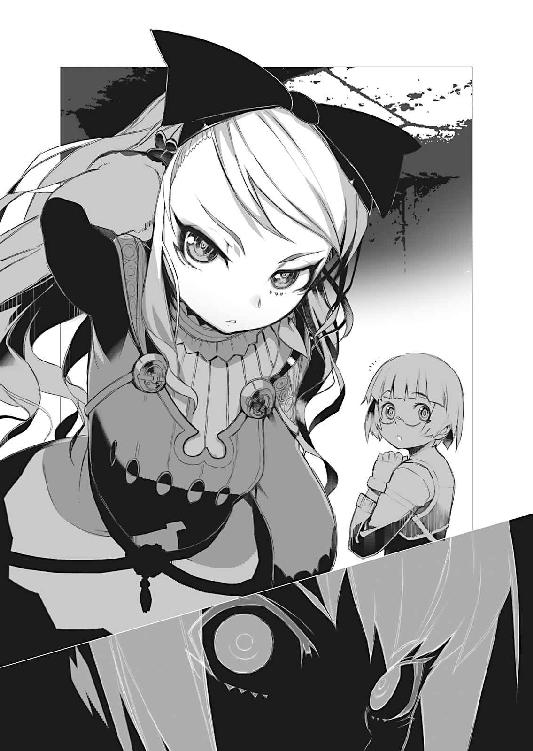
その可愛らしい顔は、笑みの形を取り繕っているが──しかし、その大きく勝ち気そうな両眼は笑っていない。むしろ視線で射殺そうとするかの様に、強い眼光を湛えてアカリを睨み据えている。
「あ。あの......」
眼鏡の少女は、少し狼狽えた様子で、アカリと、金髪の少女の間で視線を揺らしているが──
「............」
「............」
アカリと金髪の少女は再び揃って木箱に手を伸ばすと、そこから衣装を引っ張り出す。
手元の服に視線を注ぎながら──
「役立たずという事で、雇い主に解雇されたか──」
声の調子を低く落として、淡々と呟く──否、囁くアカリ。
「──暗殺者？」
「それはこっちの台詞よ──乱破師」
対して、声を押し殺し、憎々しげに囁き返してきたのは......ジレット隊に所属する少女暗殺者、ヴィヴィ・ホロパイネンであった。
第二章 廃墟の如く
LIKE A RUIN
それはまるで──月が二つに分かたれているかの様だった。
天空に浮かぶ白い球体を、縦に分割する黒く太い一線。
航天要塞〈ソアラ〉。
軍事大国ヴィーマック王国が保有する三基の航天要塞の内の一つ。フェルビスト大陸全土においても十基と存在しない魔法兵器であり、既存のありとあらゆる兵器と比較しても最大にして最強を誇る代物である。
それはまさに動く城塞だ。
要塞内には、数千人の兵員と武装を積んで移動する事が可能であるという。
さすがに空を飛ぶといっても、その動きは竜騎士や航天機兵に比べれば、遥かに鈍重だが......地形に影響を受けない分、直線移動が出来る為、陸路で軍隊を派遣するよりはかなり素早い軍事行動が可能となる。
しかも空中に浮かんでいる為──通常の兵力では、これをそもそも攻撃する事さえ出来ない。魔法による対空攻撃、あるいは竜騎士や航天機兵といった航空戦力による攻撃でなければ、この空飛ぶ要塞には、そもそも一矢報いる事すら難しいのだ。
しかも......魔法を併用したその防御力は、通常の城塞の比ではない。
敵の頭上から一方的に攻撃を加える様は──まるで天罰を下す神にも似て、地を這う兵士達に絶望感と徒労感を与えるという。天から襲う絶望という意味では、局地戦用大規模殲滅魔法と同じだが──突然、その威力が降ってくるというその種の魔法と異なり、近づいてくる姿が見えるだけに、のしかかる威圧感はまた別格だ。
「......さて」
背面から月の光を浴びて黒々と虚空に浮かび上がるその偉容を見上げながら、トールは改めて手の中で弄んでいた手裏剣に視線を落とした。
今、その柄頭──金属環になった部分には、赤い布が結び付けられている。この布の裏側には文字と簡単な図が書き込まれていた。
『準備整う。日没後半刻。方角北東。下部。詳細位置は図にて』
言うまでもなく、アカリからの連絡である。矢文ならぬ手裏剣文だ。
航天要塞を〈スヴェトラーナ〉号に乗って追跡する事、二日目......トール達は航天要塞から投げ下ろされたそれを発見した。布は素材物質を水で溶いたものに浸してあり、チャイカの探査魔法で、これを発見する事が出来る様にしておいたのだ。
「頼めるか」
トールは、肩越しに背後を振り返って言った。
「いつでも」
と応じるのはフレドリカである。
ただし、今の彼女はいつもの少女形態ではなく、装鎧竜本来の形──つまり装甲の様な鱗と巨大な翼、それに威嚇的な角を備えた巨体に変化していた。本来ならば白銀色であるその身体は、暗灰色に変化しており、夜空においても目立たない様になっている。
「......今更だけど」
トールは呆れた様に言った。
「つくづく出鱈目な生き物だよな。お前」
大きさや形を自由に変えられるのならば、色を変える事も造作も無いのだろうが......いい加減、少女形態を見慣れてきた為に、この装鎧竜形態を見ているとむしろ、違和感すら感じてしまう。
「自分で自分の姿が分からなくなったりしないのか？」
「なるよ？」
平然とフレドリカは言った。
「なるのかよ」
ふとトールはフレドリカが、不定形のぐにゃぐにゃな姿に──『何物でもない』姿になっている様子を想像して顔をしかめた。
「何度も何度も魔法使ってると、姿形に引っ張られて、心の中まで変わってくるっていうか......『あれ？ 自分って何だっけ』みたいな感じになってきちゃうの。だから私達って人間と契約する利点が在るんだよね」
「......あ？」
「元々装鎧竜って言われてる姿も、あれ、竜騎士の頭の中に在る想像図を基本にしてるしね。普段の人間形態も、ドミニカの頭の中に強く在ったルツィエの姿を基にしてるし」
結局──装鎧竜の外見を決めているのは、人間なのだとフレドリカは言う。
あの鎧を帯びた姿も、『戦陣に立つ竜』の姿として人間達、とりわけ契約した竜騎士達が理解し受け入れ易いから、というだけのものであるらしい。
「実は竜ですらねえんじゃねえのか？」
「かもね」
と暢気にフレドリカは笑う。
「──あ。そうだ。トールがそっちの方がいいっていうなら、普段の人間の姿も、アカリとかに似せられるよ？」
「よせ。色々、わやくちゃになる気がするから」
確かに以前、一度フレドリカはアカリの姿に変身している。
先のフレドリカの話を信じるなら......迂闊に外見を似せ続ければ、その内、内面まで似てくる可能性が在る訳で。
姿はともかく、あの訳が分からない言動の妹が二人に増えると、面倒臭さは倍増どころの話ではあるまい。相乗効果で何かと収拾がつかなくなるのは、容易く想像がついた。
「まあそれはさておき」
フレドリカは言って──巨大な腕を差し出してきた。
「さあどうぞ」
「どうぞって......」
眉をひそめてトールは装鎧竜の腕を眺める。
迂闊に握手でもすれば握りつぶされるどころか、指の先に付いている鉤爪でずたずたにされそうだった。
「私に乗るんでしょ？」
とフレドリカが長い首を傾げて言う。
「いやまあそうなんだけどな。なんなんだその手は」
「抱っこの手」
「............」
トールはふとフレドリカの背後に眼を向ける。
そこには──
「んしょ。んしょ。..................ん。完璧」
とフレドリカの背中には、何か『やり遂げた！』と言わんばかりに、いい笑顔で額の汗を拭いているチャイカが居た。装鎧竜の鎧──鱗の合わせ目に縄で自分と棺を固定しているのである。実の所、トールの眼には、ただ単に絡まっているだけにしか見えなかったが、まあ見栄えはこの際、どうでもいい。
どうでもいいのだが......
「ほら。おーいで。トール」
何故か、妙に嬉しそうな口調で言うフレドリカ。
「いや......俺も背中でいいんだが」
「駄ー目」
とフレドリカはトールの意見を即座に却下してきた。
「あんまり大きい身体にしたら、いくら黒くなって迷彩していても、気付かれちゃうでしょう。二人連れて飛ぶぎりぎりの大きさにしてるんだから、荷物は前後に割り振った方が飛びやすいの」
「それは分かるけどな......」
さすがに『抱っこ』と言われると、トールとしても微妙に抵抗感があるというか。
まあ今は装鎧竜本来の姿をしているので、別に、トールがフレドリカに抱き上げられてもおかしくはないのだが。普段、少女形態で顔を合わせている時間が長いせいか、あるいは少女形態の時と声が全く同じであるからか......ついついそちらの印象でフレドリカを見てしまう。
「なに？ トール──ひょっとして恥ずかしい？」
「い、いや、そんな事はないけどな？」
「じゃあ、はい」
と差し出される両腕。
まあフレドリカは人間ではないのだから、トールの抱いている違和感というか羞恥心というか、そういうのは分からないのかもしれないし......別に彼をからかっているのではなく、単純に、合理性から『抱っこ』を提案しているだけなのかもしれないのだが。
「............」
トールは渋々その腕に身体を預ける。
「トール」
「なんだよ」
「高い高いしたげようか？」
「お前、絶対分かって言ってるだろ!?」
「にゃはははは！」
笑いながら──翼を一打ちして、ふわりと浮き上がるフレドリカ。
次の瞬間、彼女はトールを抱き、チャイカを背負ったまま、まっすぐに航天要塞に向けて飛翔を開始した。
瞬く間に地面が遠ざかり、びゅうびゅうと耳元で風が鳴り始める。
「これは............すごいな」
努めて声が上ずらぬ様にと意識しながら呟くトール。
それは航天要塞に──ではなく、飛翔するという行為そのものに対する感想だ。
跳躍する事や、高い場所から獣油でなめした布や皮の『膜』を用い飛び降りる、滑空する、といった事はトールも経験がある。飛んだり跳ねたりは乱破師の基本技能の一つだ。
だが、自力で空を搔いて舞う、という飛行法を体験するのは初めてである。
地面に──あるいは確実な足場に両足が付いていない事への不安が、胸の奥からわき出てくる。何処まで修練を積んでも、地を這う生き物としての本能はぬぐい去れないという事だろう。
だがその一方で──ある種の爽快感や開放感を覚えるのも事実だ。
「驚愕。感動」
トールの漏らした言葉に応じる様に、チャイカが言う。
ある意味でトールよりも何倍も高所を怖がってしかるべきの彼女だが──あまり不安感は感じていない様だ。むしろトールよりも『高さ』に対する恐怖感というものを感覚的に知らないからなのかもしれない。トールは『どの程度の高さから落ちれば人間がどんな風に壊れるか』の実例を知っているので、自分が今、どれだけ危険な高さに居るかが具体的に分かってしまうのである。
ともあれ──
「あれ？」
フレドリカが言う。
「トール？ ひょっとして怖い？」
「いや別に怖くはないが」
不安感があるのは事実なのだが。
「トール！」
とチャイカが声を掛けてくる。
「なんだよ」
「私──怖い！」
「......なんでそんなにいい笑顔なんだよ」
怖いと言いつつ、何故、嬉しそうに『やったね！』と言わんばかりに拳から親指を立てているのか謎だが。
「一緒。怖い。恥ずかしい──ない！」
「だから別に怖がってねえよ！」
唸る様に言うトール。
そうこうしている内に、フレドリカは高々と──航天要塞よりも高い位置にまで上昇すると、そこから滑空を始める。
人間二人分、それにチャイカの棺という荷物を抱えている上、大きさを最小限にしているせいで、どうしてもフレドリカの羽ばたきの音は大きくなってしまう。
真っ直ぐ上昇して近づくと航天要塞側に気取られてしまう可能性が高い──とトールは判断していた。真下から飛んで航天要塞に近づくのではなく、わざわざ少し離れた場所に移動してからフレドリカに乗ったのは、滑空して音も無く近づく為だ。
「......何処かな？」
大きく弧を描いて、フレドリカは航天要塞の周囲を巡る。
アカリが出入り口を確保している筈だが──
「あれだな」
トールは眼を細めて、ある一点を指さした。
巨大な航天要塞の底部付近の側面......月光を反射して、ちかちかと明滅する小さな光がある。鏡を振っているのだろう。明滅の仕方からして間違いなくアカリだ。
「ん。じゃあ行くよ」
フレドリカは翼と尻尾の角度を調整し、空中を滑ってそちらに近づいていく。
急速に、視界の中で大きくなっていく航天要塞の側面。
それはやがてトール達の視界の全てを覆い尽くし、更にはその真ん中に開いた『窓』の様なものも大きくなっていく。程なくして窓際に──アカリのものらしき手が、小さな鏡を動かしているのが見えた。
その『窓』がトール達の侵入経路だ。
だが──
「......やっぱりそうなるか」
トールはフレドリカの肩越しにチャイカを見上げて言った。
「覚悟決めろよ。チャイカ」
「う......うぃ」
ごくりと分かり易く緊張の生唾を飲み込んで頷くチャイカ。
問題の窓らしきものは──小さい。
少なくともフレドリカにトール達が乗ったまま、飛び込める様な大きさでは無い。
当たり前だ。
航天要塞は軍用兵器である。敵兵が簡単に侵入できる様な大きさの出入り口や窓の類いが、あちこちに、無防備に設けられている筈が無い。具体的には──件の窓らしき部分は、装鎧竜に乗った竜騎士や、専用魔法機杖に乗った航天機兵が、そのままでは飛び込む事が出来ない程度の大きさしかないのである。
これは、最初から想像が付いていた事だ。
故にトール達は......
「それじゃ──」
フレドリカが言う。
「いくよ。さん、に、いち──はいっ！」
ぼふっ──と空気が鳴いた。
次の瞬間、空中に投げ出されるトールとチャイカ。
いや。正確にはトールは投げ飛ばされていた。
言うまでもなくフレドリカが竜形態を解除、そしてその直前に彼女は腕の中のトールを窓に向けてぶん投げていたのである。
トールは可能な限りに空気抵抗を受けぬ様にと身体を伸ばし、頭から窓に向けて突っ込んでいく。基本的には、崖の上から川や湖に──高い場所から水面へと飛び込むのと同じ要領である。
そして──
「──ッ！」
窓を通過した瞬間に、トールは身をひねった。
一回転して床を転がり、勢いを殺すと同時に──手首に巻いていた縄を引っ張る。
縄は、チャイカが自らと棺をフレドリカに固定していたものの端だ。未だ自由落下状態で空中に在ったチャイカは、窓から引っ張り込まれ、トールの所へと飛び込んできた。
「トール！」
両腕を広げて受け止める構えのトールの方へ、チャイカが飛び込んでくる。
そして──
「むやっ!?」
べしゃ。
チャイカは床に落っこちていた。
トールは彼女を抱き留める事無く、むしろ後から飛び込んできた棺の方を受け止めていたからである。
「......とと」
棺を何処にぶつけるでもなく、ゆっくりと床の上に降ろすトール。
そのすぐ横で──
「............」
束の間、痛みを堪えて震えてから──チャイカは、がばっと床から起き上がってトールの方を睨んだ。
「トール！」
「うん？ どうした？」
「激痛！」
赤くなった鼻をさすりながら、チャイカは抗議した。
「そりゃ、あんなにばっちり五体投地で突っ込んだら痛いだろうな」
「トール、抱き留め！ 優しく！」
「......無茶言うな」
トールは棺を片手で叩いて見せながら言った。
「棺が床にぶつかって音立てたり、壊れたりしたらまずいだろ」
「むう......」
チャイカは膨れ面である。
まあ普通は男が両手を広げて待ち構えているのを見れば、自分を受け止めてくれると女側が期待するのは当然だが。
「上手くいったね」
と──こちらは何の危なげも無く、ひょいと窓から飛び込んできたフレドリカが言う。
今はもう少女形態になっているが──窓から飛び込みやすい様にか、いつもよりも更に小柄、少女というより十歳前後の幼女の様な姿になっている。背丈もチャイカより頭一つ小さい感じだ。
本当に変幻自在というか......つくづく、いい加減な身体の生き物である。
「助かった。感謝する」
棺を床に降ろしながらトールは言った。
トール達が飛び込んだのは、どうやら何かの倉庫らしかった。木箱が幾つも積み上げられており、何処か黴臭い様な、淀んだ空気の匂いがする。
そして──
「アカリも御苦労」
トールは壁際に──というか出入り口近くに立っている妹に向けてそう言うと、背中にくくりつけてあった彼女愛用の鉄槌を差し出した。
だが......
「............」
アカリは鉄槌を受け取って──その場にただ静かに佇んでいる。
表情は、いつも通りに静謐で喜怒哀楽の色が無い。
だが──
「アカリ？」
怪訝の想いで声を掛けるトール。
何か違和感が在る。
それが具体的な形に結びつく前に──
「おい、アカリ!?」
トールの呼びかけをはね飛ばす様にしてアカリは身を翻すと、出入り口から出て行った。
「何だよ、おい!?」
思わず口を尖らせて叫ぶトール。
その背後で──
「トール!!」
悲鳴じみたチャイカの声。
同時にがちゃんと音を立てて『窓』が──トール達が飛び込んできたそこが、閉じられた。どうやら自動で開閉する仕掛けが取り付けられているらしい。御丁寧にも錠前も自動らしく......慌てて駆け寄ったチャイカがこれに手を掛けるが、既に『窓』はびくともしなくなっている様だった。
「──まさか」
トールはアカリの消えた出入り口を、再度、振り返る。
こちらも丁度──分厚い一枚板の扉が閉じられる所だった。
「............罠!?」
トールは身構えながら室内を見回す。
ただ閉じ込めるだけでは罠としては不完全だろう。航天要塞に限らず、要塞内には侵入してきた敵兵を閉じ込めて、殺す為の仕掛けが用意されているのが常だ。上から煮えたぎった油を注ぐなり、大量の矢を射掛けるなり、槍が突き出されるなり、もっと端的に天井そのものが降りてきて間抜けな侵入者を押し潰すなり。
だが......
「......なんだ？」
身構えてみたが──何も起こらない。
ただ閉じ込めるだけなのか。
だが......それに何の意味が？
「──トール」
怪訝の表情を浮かべるトールに、フレドリカが駆け寄ってきて囁いた。
「変な匂いするよ、微かにだけど」
「変な......？」
そこまで言って──トールは気付いた。
別に侵入者に仕掛けるのは、目に見える凶器でなくてもいいのだ。
例えば以前、トールがフレドリカに仕掛けた様な──
「まずい......チャイカ！」
叫んで更にまたチャイカを振り返るトール。
彼女は──長い銀髪を舞わせながら床に倒れ伏す所だった。俯せなのでトールの位置からは表情は分からないが、床に這った彼女の指先が細かく震えているのは──痙攣しているのは分かった。
「しくじった............！」
短く呻く様に呟いて──チャイカの後を追う様にしてトールもまた倒れ伏したのは、次の瞬間であった。
ヴィーマック王国。
それはフェルビスト大陸において、屈指の規模を誇る大国家の名だ。
同時に先の戦国時代末期──ガズ帝国討伐戦において、連合国軍の中枢を務めた軍事国家の名前でもある。ガズ帝国が滅亡した現在、こと軍事力に限って言えば、大陸最強と言っても過言ではない存在であった。
連合国軍の指導者的立場に在った関係で、戦後も幾つかの多国籍組織体は、このヴィーマック王国の首都カドウェルに置かれている。戦後復興機関〈クリーマン〉もその一つであるし──東方七カ国連絡会議の議場もである。
「............これが」
長い長い沈黙の後──掠れた声が、重い静寂の上に響く。
部屋の中央に置かれた長卓の周囲には、およそ二十名余りの男達が並んでいた。
上級軍人。高級官吏。そして貴族。殆どの者がそれなりの立場と権力を持っている重鎮達である。実の所、〈クリーマン〉機関の長、コンラート・シュタインメッツは彼等の中に混じれば、殆ど木っ端役人だ。
そんな彼がこの場に居るのは......偏に今回の一件が、元々『戦後復興』絡みで議題に上がってきたからだ。ただし当初は誰もが、こんな深刻な事態に陥るとは思ってもいなかったのだが。
「かの者の答え......か」
「そういう事になります」
答えたのは居並ぶ、高級官吏の一人だ。
（......まずいな）
コンラートは懐に入れた煙草箱を意識しながら考える。
一本でも吸えば気が紛れるのは分かっているが、さすがにお歴々の並ぶこの場で、一番下っ端の彼が煙草をふかす訳にもいくまい。
長卓についた者達は一様に、戸口近くに置かれた台の上へと視線を注いでいる。だが程なくして数名は、耐えられない、といった様子で口元を押さえ視線を逸らした。
戦争が終わって五年。
多くの者が、大なり小なり血腥い出来事を経験している筈だが──中には、幸運にも戦陣に立つ事無く終戦を迎えた者も居る。そうした者達にまで、こういうものに対する耐性を求めるのは、無茶な話であろう。
「............」
コンラートは改めて台の上を一瞥した。
そこには......死体が在った。
恐らくは数日前にガヴァーニ公爵領に送り出された、東方七カ国連絡会議の使者──なのだろう。断言を憚るのは、それは親でも分からない在り様になっている......どころか、既に人間の形をしていないからだ。
ただ首を斬るだけならば、まだいい。
台の上の死体は......あろう事か『空っぽ』だった。
腹は裂かれて、その臓腑は残らず取り出され、頭部の鉢も割られて脳髄が奪い去られている。眼窩は空洞、口の中には舌も無く、それら全てが、一緒に送られてきた壺の中に詰め込まれていたという。
だが何よりも恐ろしいのは......この『腑分け』作業が、恐らくは生きたまま行われたであろう、という事である。歯形や身長体重から、これが使者本人であると確認した医師が、『信じ難い事ですが』と前置いてそう判断したのを、コンラートも直に聞いている。
無論......五年前まで、人命はごくごく普通に奪われ、失われるものだった。
戦場においては、人間の生き死になど明日の天気程の意味も無い。そして多くの人々はそうした空気にあてられて冷酷になる。昨日までは虫も殺せなかった善人が、何食わぬ顔で敵兵の首を刈る──それが戦場だ。殺せないままの人間は、勿論、首を刈られる側に回るので、結局、居なくなってしまう。
だが......それでも。
冷酷と残虐は同義ではない。
いかに人の命が塵芥の様に扱われる戦場であっても、虐殺そのものを目的として楽しむ様な性格破綻者は、むしろ少数だ。そしてそういう者は軍規を乱す異端者として、早々に捕縛されて処断されるのが常である。
故にこそ──
「信じがたい」
「正気を疑わざるをえませんな」
官吏達が口々にそう言った。
東方七カ国連絡会議の書状を携えた使者を──いわば代理人を嬲り殺すという事は、つまりヴィーマック王国をはじめとする列強諸国に、公然と反旗を翻す行為である。
面と向かえばお前達にも同じ事をしてやるぞ、という意思表示に他ならない。
「もとより不穏な噂が、幾つも伝わってきてはおりましたが......」
「ここまでとは......」
先程から口を開いているのはもっぱら官吏達で、貴族や軍人達は揃って無言だ。
実際に戦場に出た事のある者達は、最初に持ち込まれた死体を一瞥しただけで、もう相手に交渉の余地が無い事を悟っている。官吏達の会話もあくまで手続き──関係者への意思確認の為のものに過ぎず、実務行動を本領とする軍人達には、最早、口を挟む余地は無いのだった。
しかし──
「選択の余地はありますまい」
官吏の一人が言った。
「可及的速やかに討伐部隊を編成して、即座にかの者を討つべきでしょう。ぐずぐずしていれば、ガヴァーニ公爵はこの王都まで攻めてきますぞ」
「──お待ちください」
賛同の声が上がる前に、コンラートは割って入った。
「現地近くに居た部隊を、現在、情報収集と事実確認の為に動かしております」
ガヴァーニ公爵の思惑も何も分からない状態で事を構えるのは、得策では無い。だからこそコンラートはわざわざガヴァーニ公爵領の近くに居たジレット隊に、チャイカ・ガズ逮捕の任務を中断させてまで、航天要塞の調査に向かわせたのだ。
だが......
「何を悠長な。今更何を調べるというのだ。相手の戦力かね？」
官吏達は、明らかにコンラートを見下した口調で言った。
「〈クリーマン〉機関如きが出しゃばって良い事態では、もう無いのだ」
「そもそも──」
苛立ちを堪えてコンラートは言った。
早合点して得する事など何も無い。だが『訳の分からない』事への不安を紛らわせる為に、官吏達は早々に──憶測混じりの乱暴な推論で事態を決めてかかろうとしていた。
「使者は本当にガヴァーニ公に殺されたのか。殺したとすれば何故に？ ガヴァーニ公はわざわざ七カ国連絡会議や、ヴィーマック国王陛下に弓引く理由はありません。少なくとも表から見る限りにおいては」
何より、どうして『今』であるのか。
元よりヴィーマック王国に叛意が在ったとするならば、終戦直後の混乱期の方が何かと都合が良かったのではないだろうか。もしこの五年という歳月が何かの準備期間や、好機をうかがっている期間だったとすれば、むしろ堂々と叛意を明らかにしてきた今は、ガヴァーニ公爵側に何らかの勝算が在るという事になる。
それが分からぬままに攻撃を仕掛けるのは──
「だから何だというのだ？」
別の官吏が、苛立たしげに言った。
「元より『あれ』の返還要請に応じない時点で、かの者の叛意は明らかではないか」
「左様。今更、様子を見るなど──」
口々に官吏達は『かの者、早急に討つべし』の論を展開する。
そんな彼等を見ながら──
（とにかく怖いのか──『あれ』が）
などとコンラートは考える。
単に不安から──ではない。
明確な、具体的な、恐怖が彼等の背中を押している。
それは──
「──陛下」
貴族の一人が、長卓の最奥に座る人物に声を掛ける。
口元にたっぷりとした白髭をたたえる初老の壮漢。彼の席だけが特別な上、傍らに二名の近衛兵が侍っているのは、この東方七カ国連絡会議の場において唯一、代理人ではなく、国家元首本人だからである。
ヴィーマック王国元首──ヴァーノン・アルド・ヴィーマック四世。
「御決断を」
官吏の一人がそう要請する。
ある意味でこれは、異様な事態であった。
（単に地方領主の不遜や猟奇殺人というだけならば、こうはなるまいが......）
コンラートは眉をひそめながら考える。
本来は国王の裁可を待たずとも、大抵の物事はこの場にいる者達の采配だけで解決する事もできるのだ。法と理において筋道が通っている限り、国王には後から報告を入れればそれで済む。それだけの権限が東方七カ国会議には与えられている。
だが今回は──
「仕方在るまい」
ヴィーマック四世は、元首たるに相応しい低く重い声で命じた。
「〈ストラトス〉を中心に討伐軍を編成。ガヴァーニ公爵を討伐せよ」
魔法で作り上げられた揮発性睡眠薬──俗に魔法師達の間では『眠りの霧』などと呼ばれるそれは、元々不安定な薬物である。
一定量を吸い込めばその効果は迅速に現れる。
だがその一方で、魔法によって強制的に存在させられている薬物である為、魔法が終了すれば速やかに自ら分解してしまう。そして──だからこそ使い勝手が良いのだ。比較的近距離で使ったとしても、間違って自分までも巻き込まれてしまう可能性が低い。
勿論、それでも、十分に換気しておくに越した事は無い。
相手が息を止めているという可能性もある。
敢えてすぐには踏み込まず、しばらく空気が入れ替わるのを待って──それからグラート・ランシアは口元を布で押さえながら、倉庫の扉を開いた。
「......ふむ」
先に確認した通りそこには三人の侵入者が倒れ伏していた。
男が一人。女が二人。予定通りである。
乱破師に魔法師に──そして装鎧竜の変化。
肩書きだけを並べて見れば精強そうな面子だが......いずれも実戦経験に乏しい若造や小娘に過ぎない。
装鎧竜にしても、傷は魔法で治せても病気や毒薬の類は無効化出来ない。しかも小柄な少女の姿をしていれば、尚更に毒や薬が回るのは早かろう。無敵だの最強だの言われている棄獣だが、予めその能力が分かっていれば、攻略するのは難しくない。
グラートは片膝をついてかがみ込むと、その中の一人──チャイカ・トラバントの長い銀髪を摑んで引っ張り上げる。
「なるほど」
少女の顔を確認し、更にその傍に転がったままの棺を一瞥してから──彼は皮肉げな笑みを浮かべた。
チャイカの髪から手を離して立ち上がり、手を叩くグラート。すると出入り口から十名の兵士達が入り込んできて、三人の侵入者をそれぞれ抱え上げた。
「連れて行け」
「............」
兵士達は無言である。
グラートの命令に頷きすらせず──しかし粛々と動いて三人を運び出していく。
「この土壇場に、面白い連中が紛れ込んできたものよな」
歯を剝いて、独りグラートはにやりと笑った。
──〈鉄血転化〉。
これは戦魔衆という乱破師の一派に伝わる奥義の一つだ。
これは幾つかの身体運用技能を、一つにまとめて並行使用するものだ。
人間は意識的に集中する事で己の能力を高める事ができる。
場合によっては不随意筋──例えば心臓の動きですらも、早めたり、遅めたり、あるいは一時的になら止めたりする事さえできる。受動的な知覚、例えば聴力や視力でさえも、意識的にその認識力を高める事はできる。眼を凝らす、耳を澄ます、といった行為を何倍にも高める様なものだ。
だが、こうした行為は、大抵が集中を要するが故に──他の部分がおろそかになる。
人間の集中力にはどうしても限度があるからだ。
ではそれらを同時に高める事は可能か不可能か。
筋力増加。反射速度向上。代謝速度向上。視覚鋭敏化。聴覚鋭敏化。嗅覚鋭敏化。
これらを一つ一つ実行するのではなく、自己暗示により予め肉体にすり込まれていた技能を同時に一括使用する──それが〈鉄血転化〉である。いわばそれは身体運用技能の集大成であり、だからこその奥義である。
つまり......
「............」
兵士達はトール、チャイカ、そしてフレドリカの三人をある部屋に運び込むと、その床の上に彼等を並べ、そして去っていった。
誰一人トール達を振り返る事も無く、運んでいる最中に私語の一つも無い。確かに実体も気配も在るのだが、まるで死人の列ででもあるかの様に、彼等の物腰には人間性が欠落していた。
そこは小さく狭い部屋だった。
三人が床に並べられると、もう他には足の踏み場も殆ど残らない様な場所である。扉が分厚く内側に鍵穴が無い事、のぞき穴には鉄格子がはまっている事を思えば、捕虜を放り込んでおくための牢獄なのかもしれなかった。
そして──
「......なんなんだあれは」
呟きが床の上を這う。
次の瞬間──まるで何事も無かったかの様にあっさりとトールは身を起こしていた。
「ばれやしないかと、冷や汗もんだったが......」
そう言ってトールは深呼吸──肺に残っていた『眠りの霧』混じりの空気を完全に絞り出し、新鮮な空気を吸い込んだ。
トールはフレドリカの言葉で、部屋にある種の瓦斯が流し込まれているのに気付いた。
そして、すぐに自分の呼吸数や心拍数を限界近くにまで下げたのだ。言ってみれば、瓦斯が彼の身体に完全に吸収されて効果を発揮する前に、仮死状態に自らを落とし込んで、状況の進行を止めたのである。
即ち脈拍を低下させ、呼吸を抑制し、瓦斯の体内への侵入を最小限にした。
つまり〈鉄血転化〉を逆に使ったのである。
これは危険な賭だったが......とりあえずは成功した様だ。
もし罠を仕掛けた相手が、あの場でトール達を殺す積もりなら──仮死状態になって身動きがとれないトールなど、赤子の手をひねるよりも簡単に殺す事が出来ただろうし、あのまま一日二日と放っておかれれば、トールは『仮死』状態を解けないままで──それはそのまま、本物の死になっていた可能性も高い。
「チャイカ......」
彼は傍らの少女の口元に手をかざす。
とりあえず呼吸はしている様だ。ついでに彼女の首──顎の付け根辺りを押さえてみると、脈拍も安定しているのが分かった。眠っているだけだ。
やはりあの瓦斯は、致死性のものではなかった様だ。
トールはフレドリカの方にも同じく手をかざし──
「──!?」
愕然とした表情を浮かべる。
フレドリカは......息をしていなかった。
「おい、フレドリカ!?」
声をひそめて装鎧竜の化身に呼びかけるトール。
改めて彼女の首筋や手首で脈拍を測ってみるが、これも全く読み取れない。完全に死体だ。トールの様な仮死状態でも、脈拍や呼吸は間延びするだけで完全に止まりはしないのだが──しばらく脈をとってみたが、全く反応が無い。
「馬鹿な......」
呻く様に呟くトール。
「装鎧竜がこんな簡単に......？」
それも毒瓦斯でもなかったというのに。
それとも人間とは薬剤の効き方が違うのだろうか。人間には致命的ではなくとも装鎧竜には致命的な効果を発揮する瓦斯が在った──とか？
（強制呼吸するべきか？ いや心臓刺激か？）
咄嗟の救命処置がトールの脳裏を過ぎる。
だがそもそも装鎧竜の心臓が人間と同じ位置に在るかどうかも分からない。
せめて中の瓦斯だけでも吸い出すべきか。
そう考えてトールはフレドリカの口に己の唇を重ね──
「──っ!?」
──ようとしたトールの目の前で。
フレドリカの胸が盛り上がった。
限界まで服が膨れあがり、裂ける。その下から見えた白い肌もまた異常な程に伸びて、隆起していた──まるで背後から槍か何かで貫かれているかの様に。
次の瞬間、ずぶりと湿った音を立てて、小さな小さな指が──そして手が、フレドリカの胸を突き破って現れていた。
「なっ......？」
めりめりと音を立てながらフレドリカの胸を左右に押し広げ、小柄な胸を文字通りに引き裂きながら、両手がぺたりと床の上につく。
そして──
「よっこらしょ」
そう言ってフレドリカの中からフレドリカが身を起こしていた。
「............」
呆然とその様子を見ているトール。
「あ。トールも大丈夫だったんだね」
そう言ってフレドリカは笑う。
彼女は白い裸身のあちこちに付いている血やら肉片やらを掌で払い落として、平然と立ち上がっていた。
「............って。何なんだ。おまえ」
「なに？」
きょとんとした様子で首を傾げるフレドリカ。
「いや......その......」
トールは床の上に転がった『抜け殻』を指さす。
「何なんだこれ」
「抜け殻だよ？」
「まんまかよ！」
唸る様にトールは言った。
「じゃあ......これって」
「脱皮しただけ」
こともなげにフレドリカは言った。
「............そういや爬虫類だったよな、お前」
とはいえ『脱皮』の一言で片付けられる様な在り様とはとても言えない。
何しろ今やフレドリカは五歳児程の大きさにまで縮んでおり、対して『抜け殻』の方には皮一枚どころか、肉やら何やらがかなり残っている。何というか──中身は無いものの、完全に『死体』だ。
むしろフレドリカがフレドリカを産んだ、といった方が近いかもしれない。
「ほら。前にトールに同じ様な手でヤられちゃったじゃない？」
とフレドリカは言いながら──ぽんぽんと自分の身体を叩く。
すると蒼白い魔法光が滲み出て、次の瞬間には今のフレドリカに合った大きさの衣装がそこに出現していた。
「だから次に戦う時はどうしようかなって、前から考えてたのよね」
と──フレドリカは得意げに言った。
「だから二層構造にしてあるんだよ？」
「なんだって？ 二重構造？」
「だから外側の私と、内側の私があってね。まず呼吸とか食事は、外側でして、それから内側に空気とか栄養とかが回ってくる感じ。外側の私が薬とかに侵された場合は、そっちを『脱ぎ捨て』れば、内側の私は平気なの」
「............」
トールは眉をひそめる。
分かった様な分からない様な話だが──つまりこれは、毒矢を受けたりした際に、全身に毒が回る前に、矢を受けた部分の肉を抉って棄てる、あるいはそれが腕や足であったなら、その部分を切り落とす、といった行為と同じという事なのだろうか。
「何度も言うが、つくづく出鱈目な生き物だな、おまえ......」
こんなのとよく勝負して勝てたものである。
まあこの様子だと、同じ戦法をとってももう二度と通用しないだろうが。
「チャイカはもろに吸い込んじゃった感じ？」
「ああ。とりあえず命に別状は無いみたいだが」
とトールは言った。
「......とにかく、ここを離れるぞ」
トールは周囲を見回す。
相手が何を考えているのかは──何を思ってトール達を眠らせ、此処に運び込んだのかは分からないが、このままこの部屋にじっとしていても埒があかない。
「扉は──」
試しに手を掛けてみるが──開かない。
これは当然か。
しかし......
「武装解除されてないってのも妙な話なんだよな」
トールは呟いて自分の懐の手裏剣や、腰の後ろの小機剣二本、それにアカリの鉄槌等を確認する。チャイカの棺も手を付けられた様子も無く、同じ部屋の隅に立てかけてあった。
わざわざ罠に塡めておきながらこの扱い──相手は何を考えているのか。
トールがそんな事を考えていると......
「......トール」
フレドリカが声を掛けてくる。
ただそれだけの事だったがトールは事情を察していた。
誰かが来る。フレドリカ程に鋭敏ではないが、彼の五感も、何者かが歩いてくる足音と気配を捉えていた。足音の軽さと歩調からして武装した兵士ではない。
そして──
（......香油？）
ほんのりと香る不思議な匂い。
（女か......？）
アカリやチャイカはこの手のものを嗜まない──無粋というより、魔法師も乱破師も、自分の位置を喧伝しかねないものは身につけない様にしているのだ──ので、はっきりとは分からないが。これは恐らく化粧品の類いが出す匂いだ。
トールは再び床に横たわり、更にフレドリカの『抜け殻』をひっくり返して『破れ目』を見えなくしてから──足音の主が近づいてくるのを待った。
そして......
「............」
がちゃりと金属音が響く。
扉はぎいぎいと軋む音を立てながら開かれ、その向こう側から小柄な人影が足を踏み入れてくる。
（やっぱり女か）
気絶した振りを続けながらトールは思う。
薄く瞼を開いた彼の視界に映ったのは、蒼い衣装の娘だった──恐らくは。
断言を憚るのは、その娘が頭部に紗を──まるで夫の葬儀に参列する未亡人の如き、その顔を隠す薄布を帯びているからだ。顔はぼんやりとその輪郭が透けて見える程度で、目鼻立ちはよく分からない。
その一方で──その一方で、青い衣装の胸元は大きく開いていて、鎖骨や──その下の胸の膨らみを含めた、白い肌が露出している。丈は長いのだが、スカート部分にはスリットが入っている事に加え、全体的に透けて見える様な薄布を多用した衣装である為、その肢体の輪郭がよく分かる様になっていた。
華奢で。可憐で。優美で。
そして──
（......淫猥？）
ふとトールの脳裏に浮かんだのはそんな言葉だった。
恐らくは少女の様に若い筈のその娘は、しかし、熟れきった果実の様な甘やかさを全身に漂わせている。あるいはそれは、その娘の帯びる香りに由来しているのかもしれないが。
（媚薬の類か？ それとも......）
確実とは言えないが、香油の類いには男を興奮させる効果が期待できる様なものも在るのだとか。薬研でアカリがその辺の知識は修めていた筈だが、トールはあまりそちらには詳しくない。
「............」
女はトールにもフレドリカにも目もくれず、チャイカすら無視して──顔がヴェールに覆われているので、視線までは分からないが──先ず最初に棺に歩み寄った。
彼女は躊躇無くその蓋に手を掛ける。
だが──
「............」
女は何度か棺を軽く揺すって──諦めた様だ。
棺には鍵が掛けられている。簡単なものではあるが、さすがに道具の一本も無ければ開けられるものでもない。棺を丸ごと壊す積もりであれば、また無理矢理に開く事も可能であろうが。
女はここでようやくチャイカの方に向き直ってしゃがみ込む。
鍵を彼女が持っていると考えたのだろう。
だが──
『──レイラ』
低くしわがれた声が何処からともなく降ってきた。
恐らくは肉声ではなく、伝声管か何かを介したものだろう。何処かくぐもった様な、奇妙な響きが在った。砦や艦船の中では珍しくない設備だ。
『すぐに司令室まで来い。手伝って欲しい事がある』
「............」
女は溜息を一つついて立ち上がる。
そしてそのまま部屋を出ると──再び鍵を掛けて、立ち去っていった。
「──何なんだアレは」
足音と気配が充分に遠ざかったのを確認してトールは身を起こす。
ガヴァーニ家の人間か。
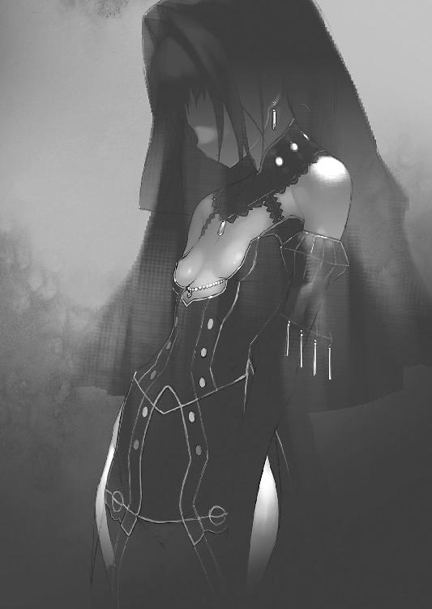
それとも徴用された領民の一人か。
少なくとも兵士の類には見えなかった。ただ、トールでもフレドリカでもなくチャイカでもなく、真っ直ぐに棺に手を掛けた所を見ると──
「トール」
とフレドリカが声を掛けてくる。
扉の鉄格子の向こうから。
そう──あの蒼いヴェールの女が扉を開けて入ってきた際、扉の脇に張り付く様にして潜んでいたフレドリカは、音を立てない様に動いて、先に外に出ていたのである。『抜け殻』の方が在ったので、女もまさかもう一人フレドリカが居る、などとは想像もしなかったのだろう。
「開けられるか？」
「まあね」
と言ってフレドリカの顔がのぞき穴の向こうから消える。
待つ事しばし......すぐに金属音と共に解錠されて、扉が開いた。
変身魔法の一環で、鎧やら剣やらも作り出せる彼女にしてみれば、指先や髪の先を鍵の形にして開けるのは簡単な事だろう。
「助かった」
「で──どうするの？」
中に入りながらフレドリカが問う。
「とりあえずここから逃げよう。留まっていても良い事は何もねえだろ」
「はぁい」
機嫌良くそう応じると、フレドリカはひょいとチャイカの棺を両手で頭上に持ち上げた。
どう考えてもそのまま潰れてしまいそうな図だったが、フレドリカはむしろ軽々とそれを保持していた。見た目は幼女でも、その筋力はやはり装鎧竜のものという事か。
「行くぞ」
トールも気絶したままのチャイカを抱き上げると、フレドリカと共に部屋を出た。
ジレット隊は湖岸に〈エイプリル〉号を停車させていた。
問題の航天要塞〈ソアラ〉はゆっくりと──きわめてゆっくりとガヴァーニ領内を回っている。おおよそ二十日で一周といった程度である。実質的な速度は人が歩くよりも多少速い程度だ。わざわざ〈エイプリル〉号を動かして追いかけねばならない速度ではない。
ただ──
「──ジレット殿」
魔法師のマテウスが、御者室から、扉を開けて客室内に入ってくる。
そこではアルベリック、ニコライ、そしてレオナルドの三名が遅めの夕食をとっていた。
「報せが二つ在ります」
「二つ？」
「ヴィヴィらからのものと。局長からのものと。どちらからお聞きになりたいですか？」
「......ヴィヴィ達の方を」
とアルベリックが手にしていた香茶のカップを椅子の脇の卓に置きながら問う。
「無事なのか？」
「それは一応」
と頷くマテウスの肩には、一羽のフクロウがとまっている。
魔法師といっても使う魔法の得意不得意があるのだが──マテウスは精神支配・干渉系の魔法の扱いに長けている。彼は必要に応じて動物を使役し、場合によっては感覚を共有する事もできるのだ。
航天要塞〈ソアラ〉の中に潜入しているヴィヴィとズィータとも、伝令役の様に鳥を使い、連絡する事が可能であった。フクロウを使っているのは、この鳥が夜行性であるのが理由だ。
「相変わらず中は細かく仕切られている上、四六時中、兵士が巡回している為、あまり動き回る事もできない様ですが」
「......ふむ」
アルベリックは顔をしかめて唸る。
元々航天要塞は機密だらけの特殊兵器である。内部構造についてはジレット隊にも知らされていない。〈クリーマン〉機関に──軍の外部に情報を提供する事を、将軍達が嫌がった為らしい。
お陰でアルベリック達は──というか潜入したヴィヴィ達は苦労している様だ。
「まあそれよりも何よりも問題は、予定外の相手と鉢合わせしたそうで」
「予定外？」
「チャイカ・トラバントの一行だそうです」
「............」
アルベリック達は顔を見合わせた。
まさかここで、その名を聞くことになるとは思っていなかった。
「好都合、というべきなのか、これは？」
困惑の表情でアルベリックが言う。
「いや──どうでしょうな」
ニコライが顔をしかめて首をかしげた。
「他の場合ならともかく......というか何故？」
アルベリック達は元々、チャイカと名乗る銀髪紫眼の少女達を──〈禁断皇帝〉アルトゥール・ガズの遺児にしてガズ帝国の正統後継者たる姫君を探し出し、これを逮捕する任を帯びている。
ガズ皇帝の遺児の存在は、ようやく訪れたこの平和な時代において、危険物そのものである。故にこそ秘密裏に、捕縛、場合によっては抹殺せねばならない──ジレット達はそう教えられていた。
だが......今回、ジレット達は一時的にこの基本任務を凍結され、ガヴァーニ公爵の身辺調査を命じられていた。
ガヴァーニ公爵家には現在、謀反の嫌疑がかけられている。
その最大の理由は、終戦当時、一部破損と化石念料の欠乏により、ヴィーマック王国王都に帰還出来ずに、領内に不時着した航天要塞〈ソアラ〉──これを占有し、私物化した事である。
元々ヴィーマック王国は、終戦直後という事もあり、航天要塞の様な大型魔法兵器を修理、再起動させて王都に帰還させるだけの人員と資材が無かった。結果、王国側は『ガヴァーニ大公に航天要塞〈ソアラ〉の管理を委託する』という建前で、航天要塞〈ソアラ〉を押しつけたのである。
それから四年。
王国側はガヴァーニ公爵が航天要塞〈ソアラ〉を修繕し、再起動させているという事実を知る事になる。それどころかガヴァーニ公爵家は、その本拠を航天要塞内に移し、領内の臣民に対して恐怖政治の様な統治体制を敷いているという事が分かってきた。
航天要塞は、このフェルビスト大陸最大最強の魔法兵器だ。
その戦力は、地方の小国ならば滅ぼし得る程の──いや、ヴィーマック王国の様な軍事大国ですら、まともにぶつかれば相当な損害を覚悟せねばならない程のものである。損傷して不時着したままの状態であるならばともかく、再起動しているとなれば、それは無視し得ない脅威だった。
王国側はこの件に関し、ガヴァーニ公爵に抗議、王国の委託した管理権限の範疇を超えるとして、即時航天要塞〈ソアラ〉の返還を要請。だがガヴァーニ公爵側はこれをのらりくらりとかわし続けてきた。
結果、様子を探る意味で、一番近くにいた〈クリーマン〉機関の部隊──つまりはジレット隊が、進行中の任務を一時中断してガヴァーニ公爵に関する調査を行う事になったのである。
そして......いざジレット隊がガヴァーニ領に入ってみれば、他にも幾つかの事が明るみに出てきた。
急激な化石念料徴発量の増加。
そしてこの数年で百人を超える、領内の若い娘達の徴用。
元々閉鎖性の高い土地柄もあって、こうした異常事態の情報が、外部には漏れ出してこなかったらしい。化石念料は単に航天要塞を動かす為のものであろうが、娘達を集めて連れ去っているのは一体何なのか。
ジレット隊は、細かな周辺事情も含めてガヴァーニ公爵家を調べる事になった。
だが──ここで問題が一つ発生する。
ガヴァーニ公爵の事を調べようにも、この四年ばかり、本人は一度も領民の前に姿を見せていない。それどころか最近はガヴァーニ公爵家の関係者全員が、航天要塞〈ソアラ〉からも出ていないのだ。完全に一族郎党を引き連れ、本拠の航天要塞〈ソアラ〉にこもってしまい、時折、各種補給や徴税、最低限の連絡の為に直属部隊の兵士達が降りてくる程度で──文字通り『雲の上の存在』になって、調査しようにも接点を確保出来ないのだ。
結果、兵士達が定期的に女性の使用人を募集──いや徴集して連れて行くという点を逆手にとって、ヴィヴィとズィータを送り込む案が、本人達から出た。
ヴィヴィは暗殺者としての訓練を受けている関係で、演技や偽装は得意であるし、ズィータは魔法機関の取り扱いに長けている為、航天要塞の中でも、比較的その構造を把握し易い。
この案に対し、アルベリックは危険ではないかと難色を示したのだが──ヴィヴィ達が大丈夫、やれる、と強く主張した為、彼女らは航天要塞〈ソアラ〉に潜入し、内情を探る事になった。
だが──
「ヴィヴィによるとどうやらガヴァーニ公爵は、件の『遺体』の一つを所蔵しているらしい、少なくともチャイカ・トラバント一行はそう考えている様です」
「なるほど。それを追ってきたか......」
腕を組んで唸るニコライ。
「いずれにせよ、ヴィヴィ達も素性を隠して潜入している身、表だって事を構える訳にもいかず──という事らしいですな」
マテウスは手にした紙片を差し出しながら言った。
そこには細かい字でびっしりと報告文が書き込まれている。これを受け取りながらアルベリックはマテウスに先を促した。
「で──もう一つの、局長からの報せとは？」
「そちらなのですが」
マテウスが顔をしかめる。
「東方七カ国連絡会議において、ガヴァーニ公爵討伐が決定した様で」
「............！」
アルベリックとニコライが顔を見合わせる。
「どうしてそんな急に......？」
絶句している二人の代わりに、レオナルドが尋ねる。
ただしこの亜人兵の少年の端正な顔には、疑問の色も驚愕の色も無い。彼は、こうなった経緯について、おおよその想像がついている様だった。
「どうやらヴィヴィ達が潜入する直前に、ヴィーマック王国から正式に国王の書状を携えた使者が大公側に接触していたそうで」
「聞いていないぞ!?」
アルベリックは叫ぶ様に言った。
そんな動きがあるのならば、ヴィヴィ達を潜入させる必要は無かった筈だ。
しかし──
マテウスは片眉を上げて、意味ありげに言った。
「どうも、元々の管理責任者だった、軍の将軍様方の手配だったようで」
「......また、頭越しか」
ニコライが呆れた口調で呟く。
元々〈クリーマン〉機関は、各国の軍人や官吏達にあまり受けが良くない。
幾つもの国家にまたがる形で存在する組織の為、『仲間』と認められないという事も在るが......戦後復興の名目でいろいろな所に首を突っ込んで調査する事が多く、その際に痛くも無い腹を探られる事になりかねない為、諸々の関係各筋から嫌われるのだ。
この為〈クリーマン〉機関にだけ、重要な連絡が来ない──などという事も珍しくない。
「局長も、件の使者が、死体になって帰ってくるまでその話を知らなかった様で」
「......死体？ 死体だって？」
「丁寧に、首を落とした上で、内臓を搔き出して瓶に詰めて送り返されてきたそうで」
「............」
アルベリックがその秀麗な顔を引きつらせた。
相手の戦意をそぐという意味で、敢えて残虐な方法で捕虜を殺して送りつける、という手法は、別に戦国時代では珍しくなかったという。だが......さすがに戦争が終わった今、しかも敵ではなく、あくまで使者として送られてきた相手を、その様に残虐な方法で殺したとなると......それはつまり『敵対する』という意思の表明に他ならない。
「結局、ガヴァーニ大公の叛意は明確という事で......航天要塞〈ストラトス〉を使って、これを討伐すると決定された様です」
「まずいな」
アルベリックは唸った。
「下手をするとヴィヴィ達が巻き添えを食う」
「ええ」
マテウスは頷いた。
「〈ストラトス〉の到着予定は？」
「およそ一週間後」
ニコライの問いにマテウスが答える。
航天要塞は元々あまり移動速度が出ない事に加え、いざ出撃するとなっても準備に何かと時間が掛かる。一週間というのはむしろ最速とも言うべき到着予定だった。
「どうします？ さすがに今すぐ航天要塞から、ヴィヴィ達を脱出させる方法は──」
航天要塞は常に空の上だが、しかし前述の様に兵士達が定期的に降りてきて資材の補給、税や人の徴集を行っている。ヴィヴィ達は元々折を見てその際に用いられる昇降機に乗って、脱出する予定だったのだが......果たして今の彼女達にその用意があるかどうか。
「ヴィヴィ達に連絡をとってくれ」
アルベリックは立ち上がりながら言った。
「何とかして脱出の方法を探れと。こちらは──〈ストラトス〉の方に何とか攻撃を遅らせる事ができないか、交渉するしかないだろう」
軍靴の足音が通路に響く。
息を潜めて、トールは物陰から様子を窺っていた。
隊列を組んだ兵士達が、十名ばかりこちらに向かってくるのが見えた。格好はイヴェコの街で見たものと同じである。さすがに長槍は携えていないが、鎧と仮面はそのまま、腰にも剣を吊したまま──その気になれば、いつでも戦闘に入れる物々しい姿であった。
「............」
兵士達はトール達に気付く様子も無く、そのまま足並みを揃えて歩いていく。
緩く湾曲した通路を進む彼等の姿が、完全に見えなくなるまで待ってから──トールは溜息を漏らした。
「どうにもやりにくいな......」
「そうなの？」
と尋ねてくるのは傍らに居るフレドリカである。
「色々、普通の砦に忍び込むのとは勝手が違うんだよ」
元々......潜入は乱破師の本領である。
敵陣に忍び込んでの情報収集から暗殺や火付けまで......警備の眼をかいくぐって活動する技術を乱破師は叩き込まれて育つ。物陰に潜み、死角に回り、人知れずして敵陣内で動き回る事にかけては乱破師に優る技能者は居まい。
だが......
「要塞っていうより船の感覚だな」
通常の建物と異なり......設備や家具が全て造り付けなのだ。
要するに、大抵のものがぴったりと壁に埋め込む様な形で造られている。お陰で物陰というものがとにかく一般的な建物に比べて乏しいのである。また──屋根裏だの床下だのといったものは無く、天井部には各種配管やら何やらが全て剝き出しになっている。
定期的に兵士達が巡回している以上、人目につかずに動き回るのは──不可能ではないが、色々と面倒だった。
「それにあの兵士──一体何なんだあいつら」
トールは顔をしかめて言った。
既にトール達は五組以上の兵士達と遭遇し──慌てて数少ない物陰に隠れて、これをやり過ごしている。どうも兵士達は十人一組で隊列をなして常に要塞内を巡回している様だった。恐らく何班もの兵士達が交代で要塞内を歩き回っているのだろう。とにかく要塞内では、彼等と遭遇する事がやたらに多いのだ。
「何って。警備でしょ？」
「それはそうだが──そもそも警備なんて要るのかって話だよ、この航天要塞に」
トール達もフレドリカに頼って何とか辿り着けた様に......普通の人間ならばそもそもこの空飛ぶ要塞に近づく事すら出来ない。いや。魔法なり何なりを用いて空を飛ぶ方法を確保したとしても、この航天要塞には窓や出入り口の類も限られており、入り込むのはひどく難しい。
侵入の困難さという意味では、普通の城塞の比ではないのだ。
そんな航天要塞で、こんなに頻繁に警備巡回をする必要があるのかどうか。それならばむしろ外部に対して目を向けて、近づいてくる存在を事前に察知する方が良いだろう。
それに──あの兵士達の、臨戦態勢とも言うべき装備。
要塞の中、つまりは最も安全であり、警戒を緩めている筈の自陣においてすら......彼等は、装備を軽減する事も無く、そればかりか一切私語を交わさず、気味悪い程の連帯性を発揮して行進を続けている。
あれは一体どういう事なのか。
「何を思ってこんなに頻繁に巡回してるのか知らないが......」
「私達が逃げ出したのに気付いて、慌てて警戒しているんじゃないのかな」
「そういう感じでもないだろ。あれは」
フレドリカの言う様に、逃げ出したトール達への警戒と捜索であるならば、もっと慌ただしい雰囲気になっていてもおかしくない。だが兵士達は焦る様子も無く、ただ淡々と行進を続けるのみである。
「全体的にこの航天要塞の中の空気も奇妙だ」
「空気？」
「なんて言うか──」
そこまでトールが言った時。
「んん......」
彼の腕の中でチャイカが身じろぎする。
どうやら意識が戻った様だった。
彼女は瞼を開いてトールを見ると──瞬きを二度三度。
「トール......？」
「起きたか」
トールはチャイカを降ろしながら言った。
「う......うぃ」
「チャイカ。これは何本だ？」
とトールは人差し指と中指と薬指を立てて示す。
「三本」
「一足す五は？」
「......六」
「とりあえず眼も脳もやられていない様だな」
安堵の息をつくトール。
あまりに効果の強い睡眠薬の場合は、後遺症が出る場合も珍しくない。だがとりあえず今確認した限りではチャイカの聴覚、視覚、そして思考能力には問題が生じていないらしかった。彼女が自然に起きるまで放置していたのも、強引に活を入れて、無理矢理起こして妙な影響が出てはまずい、と考えていたからである。
「トール......」
チャイカは不安げな表情で言った。
「アカリ......何故？」
「............」
トールは顔をしかめる。
敢えて、その点については、今まで触れずにいた訳だが。
確かにトール達を、あの罠の所までおびき寄せたのはアカリである──状況からすればそうとしか考えられない。勿論、素材物質か何かで作られたアカリの偽者の可能性は在る訳だが......侵入の際の合図や、そもそも手裏剣による連絡は、姿形を似せただけの偽者に真似られるものでもなかろう。
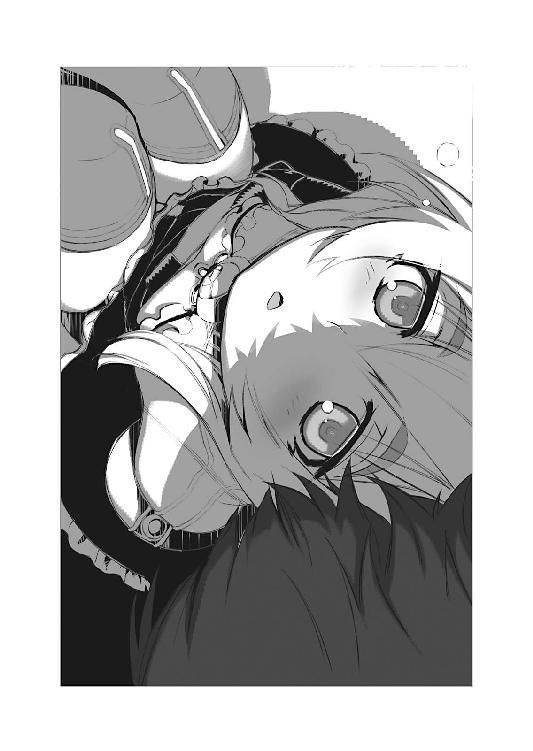
という事は──
「まあ常日頃からいきなり鉄槌でぶん殴ってくる奴だしな......」
溜息交じりに、トールは言った。
何を考えているのか、よく分からない所の在る妹だったのは間違いない。
ただ、それでも本当に洒落にならない事はしない──しないとトールも思っていた訳だが。そういう意味でのアカリに対する信頼は、間違いなくトールの中に在った。そしてそれはチャイカも感じていた事だろう。彼女がアカリを信じていたという事も在るが、トールがアカリを信じているという事を──チャイカもまた信じていたのだろう。
しかし──
「ぶっちゃけ俺もあいつも乱破師だからな。こういう事も想定内ではあるんだよ」
「むい？」
驚いた様に眼を丸くするチャイカ。
「元々アキュラ衆は仕えるべき主君が決まってないっていうか。まあ傭兵みたいなもんなんだよ。だから同じアキュラ衆が戦場で敵味方に分かれるなんてのも、実はよくある話なんだよな」
それが親子でも兄弟姉妹でも。
元々アキュラの里における家族の概念は世間一般のそれとは異なる。本物の血縁者が居ない訳ではないが、捨て子や奴隷商人から買い付けた子供を里の一員として育てる場合も少なくない。あくまでアキュラの里の家族とは、同じ師に学んだ、同じ屋根の下で育った、程度の意味でしかない。
そしてその家族関係は、一人前の乱破師になった際には、一旦──切断される。
トールの言う様に敵味方に分かれる事も少なくない以上、中途半端な仲間意識はむしろ乱破師として生きる上で邪魔になる事も在るからだ。その意味でトールとアカリは、一人前になって初陣に出る前にアキュラの里が無くなってしまった結果、兄妹の状態を維持したままになっている。
逆に言えば、それは──いつ破棄されてもおかしくない関係だったとも言えるのだ。
もしアカリが何らかの理由から、ガヴァーニ公爵家に仕えると決めたのなら、それを非難する権利はトールには無い。粛々と自分の中で考えを切り替え、アカリを敵として斃す為の算段をするだけの話だ。
ただ......
「問題は、アカリが、あいつが形式的であれなんであれ──チャイカ、お前に雇われている状態にあった事なんだよ」
「私......？」
「アカリは俺を裏切っても構わないが、お前を裏切ったら駄目なんだ。それはもう乱破師じゃない。ただの無法者だ。狗には狗の──狗である為の掟ってものがあるんだよ」
「............」
チャイカは呆然とした表情でトールを見つめる。
「トール......平気？」
やがて彼女はひどく悲しげな表情でそう問うてきた。
「平気も何も。そういうもんなんだよ。乱破師は」
頭の片隅で蠢くある種の感情を、努めて無視してトールは言った。
「乱破師......」
チャイカは納得がいかないといった様子でその言葉を口にする。
そんな彼女を見ながら──
（ああ、そうか。こいつは......）
トールはふと思う。
親子と兄妹の違いはあれど、チャイカは何よりも『家族の絆』に重きを置いて生きているのだ。だからこそ今更何の得にもならない筈の『父親の遺体を集めて弔う』という行為を、命懸けで邁進しているのである。
何よりも尊きは家族の絆......それは、チャイカにとっては信念だ。
そんな彼女にしてみれば、トールとアカリがあっさりと家族関係を切断できる──などと言われると、受け入れ難いのだろう。それが戦場の狗と言われる乱破師の特性である事を理解した上でも、尚。
「まあ......」
妙な決まりの悪さを感じてトールは頰を搔く。
「何か事情があって、裏切った振りしてるだけかもしれんしな」
「うい！」
表情を輝かせて──『きっとそうだよ』と言わんばかりにチャイカは大きく頷いた。
「何はともあれ。とりあえずこの航天要塞の内部を探ってみよう。いつ敵と出会って戦闘に入るかも分からないからな、とりあえず魔法機杖は組み立てておいてくれ」
「うぃ」
チャイカは頷くと──フレドリカが降ろした棺に手を掛けた。
恐らくそれは五年ぶりの事であったろう。
「本当に──」
その最中にあっては苦しい辛いと喘ぎ、一刻も早くこの状況から抜け出したいと心の底から願い──だが、いざそうした苦境から抜け出してみれば、むしろそうした苦悩と辛酸の日々を懐かしくすら感じる。
「人間とは、本当に、本当に、度し難い生き物だ」
バーナード・チゼータ将軍はその白髭の下で苦笑を浮かべて呟いた。
厳ついその顔には、大きな火傷の跡が今も残っており、片方の耳は耳朶の辺りが潰れて無くなっている。孫達はそんな異相の祖父を怖がり、近寄ると泣き出す始末だ。妻に先立たれて二十余年、常に戦陣に立ち続けて──終戦と同時に得たものは、何をするあてもない、茫漠たる虚無の時間でしかなかった。
だからこそ......
「主魔法機関──起動確認しました！」
「安定器、一番から十番、稼働よろし！」
「基礎浮遊術式、問題なし！」
「固定架台、一番から五十番、解放終了、続けて五十一番から百番まで解放開始！」
航天要塞〈ストラトス〉──最上層。
その中央、即ち『背骨』たる魔法機関の直上に配された要塞司令室。
円形のその室内には、総勢二十名余りの魔法師と士官達が──司令室要員達が詰めており、この超巨大魔法機関の制御を行っている。窓の類いは一切無いが、代わりに光を曲げる魔法によって外部から取り込まれた風景が壁のあちらこちらに映し出され、閉塞感は無い。むしろ山頂に立つかの様な開放感すら感じられる。
司令室中央には戦況を見る為の円台が置かれており、チゼータ将軍は副官達と共にこれを取り囲んでいた。
「......ふふ」
ついチゼータ将軍の口元に笑みが浮かぶ。
「──閣下？」
傍に立つ副官や兵士達が怪訝の表情を浮かべる。
恐らく彼等は自覚が無いのだろう。だが彼等の多くも明らかに表情や口調に高揚が見て取れる。チゼータ将軍同様、その生涯の大半を戦場にて過ごしてきた者達である。中途半端な経歴の兵士に、この最強無比の魔法兵器が任される筈も無い。
戦後は軍の予算削減と人員整理の意味も在り、〈ストラトス〉は縦穴にて機能停止、彼等の大半は別の部署に配属されていたが──今回の出撃に際して、〈ストラトス〉の再起動に合わせ、呼び戻されてきたのである。
「愉しいな。フォーデン」
チゼータ将軍は副官を振り返って笑った。
「誰も彼もが昂ぶっておるわ」
次々と投げ交わされる状況報告の声にも......張りが在る。
懐かしき古巣。
懐かしき戦友。
誰もが感じている筈だ──『還ってきた』と。
再び戦争が出来る、自分達の居るべき場所に戻れるのだ、と。
建前上は地方領主の討伐だが、そもそも一国を相手に戦争が可能なこの航天要塞が出撃する以上、これは内乱鎮圧ではなく、事実上の戦争だった。
「無理も無い話でございましょう」
副官のフォーデンは微苦笑を浮かべて言った。
そう。無理も無い話だ。
誰もが生まれついた時点で、既に戦争があった。
戦争が当然の事として育って──戦争が無くなるなどとは、誰も考えていなかった。
勿論、死傷者が出なくなる、その事は喜ばしい事だろう。
だが多くの兵達が戦う以外に活計の道を知らなかったが故に、戦争の終了は彼等を路頭に迷わせる事になった。戦の最中にはこれが終われば楽になれると、誰もが感じていたが、いざ終わってみると茫漠たる虚無に投げ出された兵士達は、ただただ困惑しながら、慣れない鍬を握り、あるいは算盤をはじき、食いつないでいく事になった。
だが──今。
一時とはいえ再び戦争が始まる。
あの焦臭くも懐かしい──日々。
「随伴部隊の準備は？」
「既に整っております」
フォーデンは手元の書類をめくりながら言った。
「先行偵察部隊は明日にもガヴァーニ領内に入り、〈ソアラ〉を目視可能かと。後──要塞機能の全てを起動させるには、術式の点検、詠唱で更に半日を要しますが、それは移動中に行えば良いと判断いたしました」
いかにも神経質そうなフォーデンの細面に、にやりと獣じみた笑みが過ぎる。
「後は閣下の号令を待つばかりです」
「では全軍に伝えよ」
「はっ──」
フォーデンが手で魔法師の一人に合図する。
伝声管の蓋を全て解放──更に予備の小型魔法機関が起動、音声伝達の魔法を掛ける。
魔法師が頷くのを確認してから、チゼータ将軍は大きく息を吸い──そして吠える様に言った。
「全軍、傾聴ッ！」
あちらこちらに映し出されていた兵士達が──随伴部隊の者も含め、要塞内外全て──揃って直立不動の姿勢をとる。
「これより我が航天要塞〈ストラトス〉および、西方第六軍団は、逆賊ガヴァーニ公爵の討伐に向かう!!」
チゼータ将軍はこの五年の鬱屈を吹き飛ばすかの様に声を上げる。
そして──
「いざ──出陣ッ！」
「出陣ッ！」
兵士達の唱和は、地鳴りの様な低い轟音となって航天要塞を揺るがす。
同時に魔法機関が唸りを上げて光を放ち──巨大な、呆れる程に巨大なその魔法兵器は、鞘から抜き放たれる剣の如く、ゆっくりと整備用の縦穴から己を引き上げていく。
満足げにその様子を確認しながら、チゼータ将軍は呟く様に言った。
「敵は同じく航天要塞。相手にとって不足無し」
「御意」
フォーデンも口の端に笑みを湛えて頷く。
細かい事は聞き及んでいないが、この副官も、恐らく戦後は己の身の置き所の無さに嘆いていた口なのだろう。
「負ける道理はあらねど、全力で叩くに、いささかのためらいも無し」
「御意」
「......フォーデン」
「はっ」
改めて名を呼ばれて、副官は一歩チゼータ将軍の傍に寄る。
「むしろ儂は、ガヴァーニ公爵に感謝したい気分だ」
「私も全く同じ想いでございます」
囁く様に言う上官に、フォーデン副官は己の胸に手を当てて一礼した。
航天要塞に昼夜の別は無い。
その構造上、常に浮遊し続けている航天要塞は──つまり無休で稼働する魔法機関である。その『芯』であり『背骨』である巨大魔法機杖が停止するのは、基本的に整備点検用の縦穴──通称『鞘』と呼ばれる施設に入っている時のみである。
この為......常に巨大魔法機杖は低い駆動音を響かせており、そのあちこちから魔法稼働中の証である蒼い光を漏らしている。故に航天要塞内は深夜であろうと完全な闇に閉ざされる事は無いし──そもそも、昼間であろうとも、分厚い装甲に守られ、外に通じる窓の類が限られている航天要塞は、外の明暗には殆ど影響されない。
しかも......
「............」
軍靴の響きが円周状の通路を巡ってゆく。
十人で隊列を組んだ兵士達が、黙々と航天要塞内を歩いているのだ。
恐ろしく整然とした──絡繰りにも似て一切の揺らぎが無い足取りである。表情は仮面の下に隠れて見えず、相変わらず私語の類いも一切無い。
彼等は淡々とその階層を見回ると、傾斜路を降りて下の階層へと消えていった。
そして──
「............いいぞ」
囁く様な声がこぼれ落ちる。
次の瞬間、天井に這い回る大小無数の管の隙間から、人影が一つ飛び降りてきた。
トールである。
彼が続く動作でそのまま両手を広げると......そこへ狙い澄ましたかの様に、チャイカの小柄な身体が落ちてきた。
「ひゃっ!?」
「静かに」
悲鳴じみた声を上げかけるチャイカに、トールは覆い被せる様に言った。
更にその横に、こちらは危なげもなくすとんと飛び降りてくるのは、フレドリカであった。兵士達と出会しそうになった為、トールとフレドリカが天井の配管にしがみついてこれをやり過ごしていたのである。
乱破師のトールや、装鎧竜のフレドリカはともかく、身体能力がお世辞にも良いとは言えないチャイカは、フレドリカがその襟首をくわえてぶら下げていたのだ。ちなみに現在のフレドリカは改めて魔法を使って、チャイカと同じ位の背丈に戻っている。
「しかし......本当に妙だな」
トールはチャイカを降ろし、兵士達が去って行った方を見ながら言った。
「厳重な警備態勢──どころの話じゃない」
先にも見た通り、彼等はやはり兜を被り、鎧を帯びたままで、足並みを揃えて要塞内を巡回している。いや。その様子はどちらかといえば歩き回る事そのものが目的化しているかの様な──『徘徊』と言った方が良い様な雰囲気が在った。
真夜中になっても彼等の行動は変わらない。
しかも......
「その癖、この空気は......まるで廃墟の中に居るみたいだ」
「──廃墟？」
チャイカが首を傾げて問うてくる。
「さっきも言ってたね。『空気』」
とフレドリカも言ってくる。
「でも普通に人間が居るじゃない」
「兵士。沢山」
どうやらこの二人はトールの感じている『空気』が分からないらしい。
「確かに兵士達は居るんだけどな......」
トールは眉を顰めて言った。
この航天要塞〈ソアラ〉には何処か奇妙な雰囲気が漂っている。
四六時中、兵士達が巡回している姿を見かけるにもかかわらず、何故か人の姿の絶えて久しい廃墟の様な、閑散とした空気に満ちているのだ。勿論、最大収容人数六千人の航天要塞の中で、十分の一にも満たない人数しか居ないのであれば、空疎に見えてしまうのも当然と言えば当然なのだが──
どうにもこの航天要塞内には、人間が暮らしているが故の生活感に乏しい。
確かに兵士達はここで寝起きし食事をしているのだが、当然に生じる雑多な空気が感じられない。トール達が乗っていた〈スヴェトラーナ〉号ですらも、その中でトール達が寝食を重ねていく上で、ある種の雰囲気が──『営みの空気』が生じるものだ。小物の散らかり具合とか。床や壁の汚れ具合とか。そういった諸々から醸し出される『匂い』だ。
此処にはそれが無い。
「ここに......本当にガヴァーニ公爵が居るのか？」
「むい？ 家違い？ 実はお隣？」
「その辺の街や村で家探してんじゃねえんだから......」
トール達が魔法材商人から聞いた限りでは、元々のガヴァーニ公爵邸にはもう誰も住んで居らず、全ての扉も窓も固く閉ざされたままになっているという。領主の屋敷という事で今も一部の兵士が警備はしているらしいが、物盗りの類いが入り込まないようにという程度の必要最低限で──廃墟というならば、そちらこそ本物のそれであろう。
「ましてこんな大物を動かしているのに、采配は他人に任せて自分は全然関係の無い所に潜む、なんて事も無いだろうしな......何処が一番安全って、この航天要塞程、安全な場所は無いだろ」
「至極納得」
とチャイカは頷く。
「しかしどうしたもんかな。この調子で調べてると、何日かかるかわからんな」
トールは溜息をついた。
一体どれだけの兵士達が乗り組んでいるのか分からないが、この航天要塞の中ではどうやら何十という班に分かれて兵士達が巡回しているらしい。彼等は必ず十人組で隊列を組んでおり、昼夜を問わず延々と歩き回っているのだ。
お陰でトール達は何度も彼等に出会しそうになり──その度に物陰に隠れたり、天井に張り付いたりする為、どうにも動きにくいのである。
しかも──
「一体、どれだけあるんだ、この階層......？」
航天要塞は、その内部が何層にも上下に仕切られた構造になっている。
その内部は言ってみれば巨大な『塔』の様なもので、中央部を貫く巨大な『背骨』を中心として、円状に床が配置されており、外壁に沿って部屋を配置、その内側にやはり環状の通路が設けられていた。
そして──
「いっそアレを登っていくか？」
トールは横手を見遣る。
そこには各階層を貫いて伸びる巨大な『背骨』が見えた。
本来ならばそれは『主柱』と表現すべきものなのだろう。
恐らくは航天要塞の内部を縦に貫いてそびえる巨大でいびつな──構造物。
それを『主柱』ではなく『背骨』と表するのは、一つには、それが各階層を『支えている』訳ではないという事であり、もう一つには、それが単に『柱』と呼ぶには凹凸が多すぎ、むしろ幾つもの部品が縦につなげられて出来上がったその形状が、本当に『背骨』を思わせる形状をしているからだ。
要するに──この『背骨』は航天要塞内の各階層の中央部に穿たれた孔に沿って『吊り下げられている』だけであって、柱としての機能は果たしていないのである。
しかも......
「ちいと気味悪いけどな」
とトールが忌避の表情を浮かべて表するのにも理由がある。
その『背骨』は各所に複雑な模様が彫り込まれていて、その中を青い光が──熱を持たない冷たい光点が、まるで蛍火の様に音も無く巡っているのである。その様子はまるで血脈の様にも見えて、『生きている』様にすら思える。
「何度見ても、なんて言うか、途方も無ぇな」
「うい」
とチャイカが頷く。
「見事。凄い。感心。初見の──規模」
と評する彼女の表情はトールとはむしろ逆、実に嬉しそうで、その紫の瞳は興味津々と言った様子に輝いている。
「まあ魔法師にとっちゃ、見物っていうか、面白いんだろうけどな......」
とトールは溜息をつく。
この二人の反応の──感想の差は、そのままそれぞれの技能の差とも言える。
この『背骨』はつまりこの航天要塞の『芯』であり『本体』であり『本質』である。周囲の外装や部屋やその他諸々は、この『背骨』に取り付けられたオマケに過ぎない。
これは──機杖そのものなのだ。
一般的に見られる個人携帯用の機杖に比べると、恐らく長さで数百倍、体積という意味ならば数千倍にも達するであろうこれは、つまり、一個の巨大な魔法機関なのである。
恐らく、これだけの規模のものは他に例があるまい。
魔法師であるチャイカにとって、この『背骨』は実に興味深いものなのだろう。
「これ、ずっと動いている訳だよな？」
「肯定。浮遊の魔法。継続」
「これを動かす為に化石念料の買い占めをやってたんだよな......」
トールは眼を細めて『背骨』を見つめながら言った。
チャイカの抱える魔法機杖ですら、それなりの手順と、少量の化石念料によって、強力な効果を発揮する。単純に大きさだけで比較するべきではないのかもしれないが、個人が携帯可能な魔法機杖の、大きさにして数千──いや体積にすれば数万倍はあろうかという代物と、市場供給が急激に枯渇する程、大量に集められた化石念料、それらを以て実現される魔法が、どれだけの力を発揮し得るのか......トールには見当もつかない。
しかし──
「例えばだけどな。この要塞を浮かしている魔法の力を、一時的に別の方向に使ったらどうなるんだ？」
「むい？」
「例えばこの魔法機関で、そうだな、チャイカ、お前が使ってる様な攻撃魔法を起動させたら、どうなる？」
「んん......」
チャイカは首を傾げてしばし唸っていたが。
「多分──大変」
「いやまあ大変なのは分かるけどな」
かくんと頭を垂れながらトールは言った。
どうも専門家のチャイカをしても、想像がつかない規模という事か。
「複数。魔法を起動。可能。そして大規模」
チャイカが柱を指さして言った。
「なに？」
「浮遊。移動。それ以外──可能。多分、魔法攻撃。大規模」
チャイカによると、この『背骨』は一つの魔法機関の様に見えるが、実際には複数の魔法機関が寄り合わさったものであり、幾つもの魔法を同時に起動しているのだという。そしてそれらの魔法を一時的に別のものに割り振る事も可能であるとか。
「つまりなにか？ これはでっかい魔法機杖に見えるけど、実際には幾つもの魔法機杖を束ねて作ってある様なもんだって事か？ で──それを一斉に同じ方向に向ければ、それだけ途方も無い力が出せる......？」
「うぃ」
チャイカは頷いた。
航天要塞は、大抵の場合に最前線に投入されるが、それだけに、単体で運用される事は殆ど無い、とトールも聞いていた。大抵は随伴部隊が居るので、実際の戦闘は彼等が担当する事が多く、航天要塞は移動司令所として使われる事が多いらしい。
だからあまり知られていないのだが──航天要塞そのものが巨大な魔法機杖である以上、魔法攻撃も可能であり、恐らく、その威力は普通の魔法師が標準的な魔法機杖を用いて行うものの、数万──あるいは数百万、数千万倍の威力を誇るらしい。
「でも──必要。大量。化石念料」
「ふむ......」
トールは眉間に縦皺を刻んで考える。
やはり元々領内にヴィーマック王国でも有数の化石念料鉱山を抱えていたガヴァーニ公爵家だからこそ、領内に不時着したこの航天要塞を再起動して私物化出来たという事であるらしい。
しかし......
「『遺体』も単に魔力源の一つとして買い集めていただけなのか？」
トールは腕を組んで呟く様に言った。
「それとも──化石念料とは別の理由が在って買ったのか」
「むい？」
「前にも言ったけどな。魔力源として利用してない、可能性だよ」
トール達は、ガヴァーニ公爵家が何故に『遺体』を買ったのかについて、未だ知らない。
領内の化石念料不足の現状を知った後では、魔力源として買ったのではないか、とも考えたのだが──そうでない可能性も、勿論、在る。
狩猟家が仕留めた獲物の首を剝製にして壁に飾る様に──ある種の装飾品として、あるいは蒐集品として『遺体』を求めた場合である。人間の死体、それも一部をわざわざ飾るのは悪趣味の極みだろうが、それが、あの、その名を知らぬ者は無いと言われる〈禁断皇帝〉のものだとなると──得意げに飾る者も居るかもしれない。
「だったらむしろ、公爵本人の部屋周りを調べにゃならんが──いや。そもそもこのガヴァーニ家ってのは、何を思ってこの航天要塞を再起動させたんだ？」
どう考えても、地方の一領主の手には余る代物である。
しかも戦争が終わった後となっては、無用の長物以外の何物でもない──筈だが。
「趣味？」
「そんな訳あるか」
きょとんとした表情で首を傾げるチャイカに、トールは溜息をついて応じる。
「可能性としては反乱か？」
「でも確か......」
それまで黙って話を聞いていたフレドリカが、空中を見上げながら──記憶を探る様にしながら言った。
「ヴィーマック王国は、同規模の航天要塞を他にも二基保有してたと思うけど？」
考えてみればフレドリカは元々ヴィーマック王国に所属する竜騎士──というかその騎竜──だった訳で。積極的に軍関係の知識を貯め込んでいた訳ではない様だが、終戦間際の各国の軍事情勢については、現場に居たが故に、トールよりも細かい情報を持っている事も在るのだ。
もっとも人間とは中身の異なるこの棄獣は、興味の対象がやはり違うらしく......『何故それを知っていてこれを知らないのか？』と首を傾げたくなる位に、知識が偏っていたりもする様だが。
「そうなんだよな」
トールは頷く。
「単純に考えても二対一だ。他の兵力も合わせれば、ガヴァーニ公爵家が勝てるとは思えないんだよな。まあ王国側を滅ぼさなくても、適当に良い勝負に持ち込んだ上で、交渉して完全な自治権を勝ち取る──ヴィーマック王国から独立するって考え方もあるだろうが......」
ガヴァーニ公爵領に関して言えば、元々、地方の小国がヴィーマック王国に組み込まれた様な形になっているので、事実上、独立国と大差ない扱いなのだ。わざわざ王国に対して事を構えて──それで改めて得られるものは少ない。
むしろ現状では、ガヴァーニ公爵領の産出する化石念料に関して、最大の顧客はヴィーマック王国であり......ガヴァーニ公爵家は、いわば『得意客』に喧嘩を売っている様なものだ。自分の首を絞めているのと変わりないのである。
そんな事を考えていると──
「──？」
ふと視界の隅で何かが動くのにトールは気付いた。
何が？
それは──
「──ッ!!」
次の瞬間トールは、半ば無意識の内にチャイカを突き飛ばしながら──というより後方に居た彼女を巻き込みながら転がる様にして床に身を投げ出していた。
咄嗟には──それが精一杯だった。
一瞬前までトールが立っていた空間を貫く銀光。
あり得ない程の速さで飛んできたその刺突の一撃は、トールの胸元をかすめ、更にはフレドリカの胸を貫通していた。
「......あれ？」
むしろきょとんとした表情で、自分の胸に刺さるそれを見下ろすフレドリカ。
それは──彼女自身の身長を大きく上回る刃渡りの大剣であった。
「フレドリカ!?」
叫ぶトール。
次の瞬間、大剣はフレドリカを刺し貫いたまま、大きく振り上げられ──そしてぬめりの付いた血を振り払うかの様な動きで振り回されて、小柄な少女の身体を投げ捨てていた。
フレドリカは、軽々と飛んで、通路の端の落下防止柵を越え『背骨』に激突、そのまま落下してトール達の視界から消える。
そして──
「......！」
床から跳ね起きながら唸るトール。
彼の前にぬっと身を現したのは──板金鎧に全身を包んだ剣士であった。
いや。板金鎧そのものは白を基調に、蒼を添える様な感じで塗装されており、更にはマントも付属、頭部にも羽根飾りが付けられている事からすれば──恐らくは身分の高い騎士階級の者なのだろう。
しかも......
「............」
まるで鏡が置かれているかの様に──白い騎士の姿が増える。
一人が二人。二人が四人。
勿論──いずれも虚像ではない。壁に埋め込まれる様にして設けられていた『扉』から、全部で四人の白い騎士が悠然と姿を現していたのである。
（こいつら......!?）
攻撃を仕掛けられる瞬間まで──いや仕掛けられた今ですら、まるで殺気が無い。
四人が四人共にである。
殺気を完全に消して攻撃を仕掛けるとなると、それはもうトールなどは足下にも及ばない達人、各国の宮廷剣術指南役や、剣聖と呼ばれる者の域だ。
だがその一方で、この白い騎士達に仕掛けられた一撃はそう特別な技ではなかった。ただの刺突だ。恐ろしく速くはあったが、鋭くはない。むしろ速さで強引に突き込んだだけの単純なものだった。トールの回避がぎりぎりだったのは、単純に相手の殺気の無さ故に、それが攻撃であると認識するのが、刹那の時間だけ遅れたからである。
これは一体何なのか。
いやそれよりも──
（迂闊だった......）
トールは唇を嚙む。
あの『扉』の事だ。
これだけ巨大で多層構造の要塞ならば、地上と行き来する為の昇降機以外にも、内部を行き来する為の昇降機が存在するのは当然だ。恐らく四騎士達が出てきたのはその昇降機だろう。
四人の騎士はその装備に似合わぬ素早い足運びと連携で、左右に散開すると──通路を完全に塞いでしまう。トール一人だけであるならばともかく、チャイカを連れた状態では、この四騎士の『壁』を突破するのは不可能だろう。
いや。それだけならばまだしも......
「トール!!」
チャイカが叫び声を上げる。
だがそちらを振り返らずともトールには彼女が何を言いたいかはおおよそ察知出来ていた。何度も聴いた軍靴の響きが背後から迫ってくる。
目の前に四騎士。
迫り来る兵士達。
最悪の状況である。
たとえ雑兵であろうと、十人が相手ではトールもこれを瞬殺するのは無理だ。兵士達を相手にしている間に、後ろから騎士達に斬られるだろう。逆もまた同じだ。
また比較的広いとはいえ──屋内で毒や薬の類を用いるのは勿論、大威力の魔法を使う訳にもいかないだろう。間違いなくその効果はトールとチャイカを巻き込む。それに──そもそもチャイカが呪文詠唱をしている間、騎士達や兵士達が待ってくれているとも思えない。
（──どうする!?）
焦燥感に空回りする意識でトールは考える。
そのとき──
「──顕れよ〈弾け眩ますもの〉！」
床の上に転がったまま......チャイカがぶつぶつと呟いていた呪文が完成する。青白い魔方陣が瞬間的に組み上がり、光を放つと同時にその効果を顕現させていた。
即ち──
「トール！」
チャイカの叫びと同時に、トールは片方の眼をつむりながら彼女に手を伸ばす。
閃光と、そして白煙が急速に膨れあがり、視界を閉ざす。以前彼女が同じ魔法を使うのを見た事があるからこそ、トールはその効果を知っていた。
光と煙で視界を攪乱する魔法。
これならば殺傷力は無い代わりに──トール達が巻き込まれても、実害は無い。
「──ッ！」
トールは棺ごとチャイカの襟首をひっつかむと、彼女を旗の様に空に浮かせる勢いで、床を蹴って駆けだした。
前でもなく。後ろでもなく。
躊躇無く横へ。
つまり──
「祈ってろ！」
落下防止の鉄柵を越えて──航天要塞を縦に貫く巨大な縦穴、『背骨』と床の隙間へと。
凄まじい勢いで全てが上に飛んでいく。
高い処から飛び降りるのは別に初めてではない──〈還らずの谷〉においても相当な高さから落下した訳だが──が、やはり背筋を這い上がる悪寒を完全に殺す事は出来ない。両脚が地につかないという不安よりも、より積極的な恐怖──落ちていくというその速度そのものが、殺人的であるからだろう。
だがそれでもトールは乱破師である。
自ら飛び降りた以上、無策でただ落ちていく様な愚は犯さない。
「──ッ！」
小さな鉤爪を先端に付けた紐──鋼糸を編み込んだ極めて頑丈なもので、小機剣の柄頭に繫いだりもする──を投げる。
投げる先は『背骨』......つまりは巨大な魔法機関である。
元より凹凸の多い『背骨』ならば引っかかりも多い。トールの読み通り、鉤爪は何度か火花を散らしながらも、『背骨』の一部に引っかかって停止した。
「ぐおっ！」
トールが呻く。
彼自身の体重に加え、左手にぶら下げているチャイカと棺の重量を止めた衝撃が、右腕に掛かったからである。
「やべっ......」
脱臼したか。
一応、紐は腕に巻き付けた上で腰帯に繫いであるので、右腕が『抜け』てもそのまま落ちる心配は無いが......むしろ気をつけるべきは左腕、チャイカと棺を保持している方であろう。
「チャイカ、大丈夫か？」
「............う......うぃ......」
多分に焦りと恐れを含んだ声でチャイカが応じてくる。
まあ流石に相当な距離を飛び降りた上に、宙づりの状態では、彼女でなくても恐怖と焦燥に身が竦むだろう。
「悪いが俺は右腕が利かない状態だ」
「むい？」
「お前をぶら下げたまま、きちんと移動するのは難しい。何とか足場の在る所まで飛ばすから、受け身位はとってくれ」
「う......うぃ」
チャイカが頷くのを確認すると、トールは深呼吸の後、〈鍵詞〉を唱えた。
「我は鋼なり──」
〈鉄血転化〉。
全身の気脈を解放し強制的に全身の各種能力を束ねて上昇させる乱破師の奥義。
だが──感覚の鋭敏化に伴い、怪我をしていた場合は苦痛も倍増される。
「ぐっ......くっ......」
トールは肩から全身に広がる激痛を堪えながら、両脚を動かし、振り子の様にぶら下がったままの自分とチャイカを、前後に揺さぶる。
「行くぞ！」
「う、うい！」
振り幅が一定を越えた時点で、トールは強化された左腕の筋力を用いてチャイカを飛ばした。元々小柄な彼女は、軽々と落下防止の鉄柵を越えて床の上に転がる。それを確認してからトールは改めてもう一本の紐をチャイカに向けて投げた。
「何処かにこれを固定してくれ」
「うい」
チャイカが紐の端を受け止めて、鉄柵にこれを括り付けた。
航天要塞は、言うまでもなく軍事兵器である。
故に先ず第一に求められるのは機能性と効率性である訳だが......その一方で航天要塞の様な規模の軍事兵器となると、むしろ国家の威信や貴族の矜恃とも無縁では在り得ない。当然に指揮官は貴族階級の人間が任命される上、彼等の見栄や体裁を損なわない程度の豪奢さは、断片的にとはいえ、求められてくる。
航天要塞〈ソアラ〉の上層──正確には五十在る階層の中の第四十八層には、指揮官用の部屋が存在する。
兵士達の寝泊まりするそれと異なり、そこだけは軍事兵器の中とは思えない程に、広々とした間取りになっており、中の調度品や、装飾も、一般的な貴族の屋敷とそう変わらないものが設えられていた。強いて違う点を挙げるとすれば、その多くが床や壁に固定されている事だろう。非常時の高速移動等では、どうしても航天要塞といえど大きく揺れる事や傾く事が在る為である。
そんな部屋の一つで──
「──逃がしたか」
眼を開いて呟く様に言ったのは、ガヴァーニ家の家令を名乗った男、グラート・ランシアであった。
前述の通り──ここには豪奢な家具調度品が置かれ、本来は無粋な鋼が剝き出しである壁には、幾重にも垂れ幕が掛けられて、貴族の屋敷然とした雰囲気を醸し出している。グラートが腰掛けていた長椅子にしても、細かな刺繡が入る高価な織布をふんだんに使った高級品である。
「さすがに──一筋縄ではいかんか」
「......ランシア様」
ふと──その背中に声が掛かる。
垂れ幕をかき分ける様にして、部屋の奥から一人の娘が──娘だろう、恐らく──姿を現した。
蒼い衣装を着てその顔を紗で隠した娘。
先の小部屋でトール達の荷物を──というかチャイカの棺を調べていた女である。
「──レイラ」
グラートが呟く様にその名を呼んだ。
「どうなさいました......？」
問う声は茫洋としていて──ひどく気怠げに緩んでいる。
悠然と立つその姿も、何処か傾いでいるというか、今にも崩れ折れそうな、そんな頼りなげな雰囲気が在った。身体に芯が通っていないというか、見るからにぐらついているというか、近くに寄れば誰もがつい手を差し伸べてしまいそうな......そんな不安定さだ。
「彼奴を取り逃がしてしもうてな」
グラートは長椅子の背もたれ越しに娘の方を振り返って言った。
「............」
レイラと呼ばれた娘は首を傾げる。
「そうですか」
熱の無い口調で娘は言った。
声そのものは若く聞こえるが──その口調には若者特有の潑剌とした響きが感じられない。諸々の感性が磨り減った老人の様な、そんな口調であった。
「『遺体』の事もあったとはいえ、少々遊びが過ぎたわ」
口の端を歪めてグラートは引きつる様な笑みを見せる。
「いずれにせよもう戯れに時間を割いている場合ではない。ヴィーマック王国の連中もそろそろ尻に火が点いておる頃であろうよ」
グラートはにやりと歯を剝いて笑った。
「恐らくこの〈ソアラ〉と同等の戦力──航天要塞を持ち出してくるのは間違いあるまい。くくく。二基の航天要塞が正面から激突する。考えただけでも胸躍るわ」
「............」
そんな彼の隣に腰を下ろすと、レイラは両手を彼の胸に当ててしなだれかかる。
顔は見えない。声も物憂い。にもかかわらず──あるいはだからこそ、そっとグラートの胸に指を這わす仕草、薄布越しに相手の顔を見上げる仕草、それそのものに、小娘とは思えない程の淫猥な、じっとりとした媚びを含んでいる。
誘っている。
男ならばそう確信せずにはおれぬ──娼婦の手管。
レイラは囁く様に言った。
「どうかご無理はなさらぬ様......」
「心にも無い事を」
グラートは言ってまた笑う。
「たまたま利害が一致しただけであろうに。我が居なくなっては、何かと面倒──また新しい魔法師を籠絡せねばならん。その程度の心配であろうよ」
「......そのような事は......」
「だがそれと知っても我は、お前から離れる事はもう出来ん。お前という女を知ってしまった以上はな」
グラートの口調に欲情の色が混じる。
彼は右手を伸ばすと──レイラの乳房を蒼い服の上から摑んだ。
決して大きくは無い。だがまろやかで優美な丸みを帯びる柔肉は、肌の白さやきめ細かさ、何より全身の輪郭と相まって、匂い立つかの如くに『女』そのものだ。
これをグラートは指で、掌で、存分に弄った。
「............そうですか」
そう応えるレイラの声はやはり気怠い。
だがそれがまた奇妙な──倒錯的な色気となって聴く者の耳朶をくすぐる。
男の前に立てば、本人にその気は無くとも誘惑せずにはおれぬ、天性の娼婦──そんな所か。まさしく蠱惑。それが『毒』であると分かっていても、舌先に感じる甘さに溺れて、貪る者は後を絶つまい──グラートの様に。
「レイラ。貴様には感謝しておるよ」
ふと何か思いだしたかの様にグラートは言った。
「この際、貴様の思惑がどうあろうと我は構わん。貴様の助けが在ったればこそ、お膳立ては整い、我も色々と机上にしか無かったものを試せたのだからな」
「それは......重畳」
気のない口調でレイラはそう応じた。
だが物憂い口調の中に、ある種の色艶が──喘ぐかの様な、淫靡な響きが混じる。彼女を長椅子の上に押し倒してその首筋に舌を這わせるグラート。レイラはただされるがままになっていたが......
「──ふむ」
グラートは──しかしレイラから身を離す。
「お楽しみは、また後でな。それよりも、またそろそろ『処置』の時間だ」
言ってグラートは明後日の方向を向く。
彼は壁を──というよりも壁の向こう側、そこに広がるであろう蒼穹を、見つめているかの様だった。
「ぬかりなく頼む」
「──はい」
胸元を直しながらレイラは茫洋と頷いた。
縄抜けは乱破師にとって基本技能の一つだ。
それ故に、関節を外すも入れ直すも乱破師にとっては手慣れたものである。
ただ──
「ぐっ......」
トールは呻き声を短く漏らしてから、右肩を入れ直す。
「トール。大丈夫？」
「何とかな」
と言いつつも、トールは右手を握り、開き、筋肉の動きを確かめる。
どうやら少し腕の筋そのものを痛めたらしい。動かない事は無いのだが、痛みを伴う為に、どうしても動きがぎこちなくなる。針や自己暗示で痛みを消す事も出来るが、それはそれで微妙な感覚が消える事で、やはり動きが鈍る。
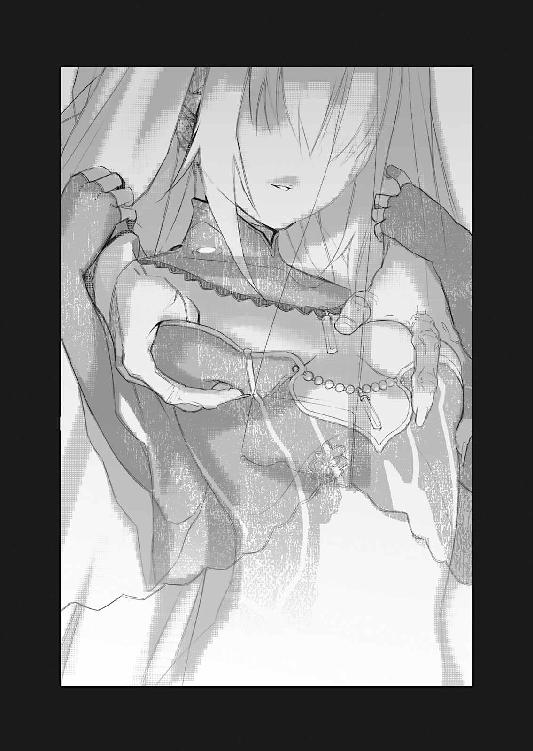
いずれにせよそれは、全力が出せない、という事だ。
「フレドリカはどうなった......？」
さすがに装鎧竜が、あの程度で死にはしないと思うが。
彼女が居ればトールの腕は瞬く間に治癒できるだろう。
こんな時だけ彼女を頼みにするのも、身勝手な話だと理解しているが──見栄や体裁よりも実利を優先、利用出来るものは躊躇無く何でも利用するのが乱破師である。
「不明。行方」
チャイカはきょろきょろと辺りを見回しながら言う。
「魔法で居場所を探る事は出来ないか？」
「......困難」
とチャイカは『背骨』を振り返って言った。
「〈還らずの谷〉──同様。巨大魔法機関、稼働──至近距離。探査系魔法、精度低下」
「ああ、そういう事か」
トールは顔をしかめて言った。
探査系の魔法は、すぐ側で強力な魔法が展開されている場合には、著しく精度が落ちるのだという。
「仕方ないな」
ここで立ち止まっている訳にはいかない。
フレドリカを捜すにせよ、アカリを捜すにせよ、『遺体』を捜すにせよ......まずは落ち着いて自分達の打てる手を検討する必要がある。
トールは顔をしかめて立ち上がり、とりあえずまた兵士達に見つからぬ様にと、手近な物陰へとチャイカを連れて移動する事にした。
円周状の通路に沿って歩きながら、幾つかの扉に手を掛けて調べてみる。
元々そんな必要性が無いと考えられているのか、それとも何か理由でもあるのか──どの部屋も、扉には施錠されていないものが殆どだった。殆どが兵士の寝泊まりする為の部屋らしい事を思えば──二段式の寝台が幾つも並べられている部屋が多い──前者の可能性が高いのだろうが。
（とりあえずは巡回されない様な場所──）
そう考えながらトールは兵士達の部屋を過ぎて──やがて、塵捨て場らしき場所に足を踏み入れた。
塵捨て場といっても、生塵の類は別の所に棄てられているのか......異臭悪臭は殆どしない。よく見れば塵は砕けた木箱、汚れ破れた布といったものが大半で、歪んだ鎧や、折れた剣、機杖の部品らしき、ガラクタの様なものがぽつりぽつりと混じっている程度だった。
それらはこの塵捨て場の数カ所で小山を成している。
「これは──」
ふと頭上を見上げると、積まれたガラクタのすぐ上に、ぽっかりと穴が開いていた。
恐らくその穴は上層の廃棄孔に繫がっているのだろう。孔の下に投棄された塵が小山を造っているのだ。
「上の方から塵を投げ捨てる訳か」
呟くトール。
この航天要塞の縦長構造からすれば、それは理に適った廃物処理の方法だろう。いちいち塵を回収して回る必要が無い。
そういえば──
（侍女として召し抱えられた女達は一体どこに行った？）
トール達は潜入してから、目撃するのは兵士達ばかりで──アカリを除けば、召し抱えられた女達の姿を一度も見かけていない。
そして──
「......？」
ふと何かが聞こえた様な気がして、トールは眉をひそめる。
耳を澄ますと──
「............ぁぁぁぁぁぁぁあああああああああああああああ！」
長々と尾を引く悲鳴と共に何かが落ちてくるのが分かった。
その──廃棄孔の中を。
「むい？」
チャイカが身構える。
次の瞬間、どさりと音を立てて、塵の山の上に何かが落下した。
「何!?」
チャイカが思わず機杖を向けるが──塵の山に突っ込んだ何かは、殊更にこちらを攻撃してくる様子は無く、むしろじたばたと手脚を動かして、悶絶している様だった。
やがて──
「ぶはっ！」
細かなガラクタを振りまきながらそれは──その人物は身を起こす。
若い、トールよりも二つ三つは下、青年と言うより少年と表すべき様な年齢の人物であった。
その容姿は──容姿のみを見れば、実に整っていて涼やかな目鼻立ちをしていた。眼は琥珀色。髪は蜂蜜色。繊細で優美な顔立ちは女性だと言っても通用するかもしれない。育ちの良さがにじむかの様な温和な表情が、よくその容貌に馴染んでいた。
貴族の子息そのもの、といった印象だ。
もっとも廃棄孔を滑り落ちてきたせいか、その衣装はあちこちすり切れてぼろぼろ、本人の顔も油やら何やらで汚れきっていて、あまり貴族らしくはなかったが。
「うっ......」
少年はよろめきながらガラクタの上で立ち上がり──そして次の瞬間、足下が崩れたのか、転んでガラクタの山から落ちてくる。
彼はトール達のすぐ側で止まった。
その首に──
「............！」
トールが左手で、抜いた小機剣の切っ先を突き付けたのは次の瞬間だった。
「うわっ......!?」
驚きの声を上げる少年。
どうやら今になってトール達の存在に気付いたらしい。小機剣の切っ先は、微妙な──触れてはいるが、肉を裂く直前、といった状態で止まっていた。
「──トール!?」
一瞬遅れてチャイカが驚きの声を上げる。
だが彼女には構わず、トールは少年を見据えながら問うた。
「何者だ？」
「え？ あ──」
少年は床に座り込んだまま、眼を瞬かせてトールを見上げる。
「リカルド──リカルド・ガヴァーニ」
少年はそう言った。
ガヴァーニ姓。だがガヴァーニ公爵はトール達が事前に集めた情報によれば、五十代の男であるから、この少年は公爵本人ではあるまい。
恐らくは──
「ガヴァーニ公爵の末の息子──なんですけど」
少年は自らそう説明してきた。
彼は改めてトールと、そしてチャイカへと眼を向ける。
少し不思議そうに彼は二人を見つめていたが......
「というか......君達こそ、何者ですか？」
むしろ至極もっともな事を尋ねてくるリカルド。
トールは彼の首筋に小機剣を突きつけたまま──顔をしかめた。
「何者と言われてもな」
「曲者？」
と首を傾げて言うのはチャイカである。
「いやまあそうなんだけどな」
自分で『曲者』と言うのも、どうかとトールは思うが。
しかし──
「侵入者という意味ですか？ 泥棒とか──」
何故か嬉しそうに──リカルドはそう問うてきた。
チャイカが少女であまり威圧感が無いせいか、あるいは、その言動がのんびりしているせいか......トールに刃物を突きつけられたままだというのに、リカルドの表情にはもう怯えや惑いの色は無い。むしろトール達を前に安堵している様子さえ窺えた。
大物なのか。それとも単に緊張感の持続できない性格なのか。
あるいは、貴族だの王族だのというのは皆──こんな性格なのだろうか。
ちらりとチャイカを一瞥しながら、トールは溜息をついて言った。
「......まあ泥棒だな。多分、一番近いのは」
元々の目的はガヴァーニ公爵の手に入れた『遺体』を奪う事なのだから。
「泥棒。泥棒ですか......少なくともグラートの手下ではないんですよね」
リカルドは改めて──安堵の表情を浮かべた。
「............」
「............」
顔を見合わせるトールとチャイカ。
泥棒を名乗る相手と出会い、その片方には刃物を突きつけられて──しかしこの少年はむしろ安堵している。勿論、状況が分からない程に頭が弱いという訳ではあるまい。恐らくは想定していた『最悪の状況』と比較して、今は未だ安堵できる──というだけの事だろう。『グラート』というのは誰を指すのかは不明だが、余程、この少年にはその名が恐ろしいらしかった。
「しかし......よりにもよって、難儀な所へ、難儀な時に、入り込んだものですね」
「......どういう意味だ？」
まあ難儀というか、異様な場所なのは言われずとも分かるが。
どうもリカルドの台詞には何か意味深なものを感じる。
「今、この航天要塞は、魔法師のグラート・ランシアが支配しているんです」
リカルドは顔をしかめて言った。
「あいつ、僕の父や、兄や姉を皆、監禁して──人質にして。お金になりそうなものは、とっくに処分して、この要塞を飛ばす為の魔力源にしてしまっていますよ。だから泥棒に入っても盗めるものなんて──精々が、化石念料位のものじゃないかな」
無論、化石念料も充分に高価なのだが。
この辺は庶民と貴族、王族とでは感覚が違うのだろう。
ともあれ──
「そもそも、そのグラート・ランシアってのは何者だ？」
「グラートは何を考えているのか知らないですけど」
リカルドは溜息交じりに首を振って見せる。
「この航天要塞で、ヴィーマック王国本国と、戦争する積もりみたいですね」
「............」
予想外の言葉に......トールとチャイカは目を丸くして、言葉に詰まった。
ガヴァーニ公爵領は、ヴィーマック王国の中でも指折りの化石念料の産出地である。
領内に所有する鉱山は五つ、いずれもが豊富に化石念料を産出する巨大な『鉱脈』となっており──更には未だ未採掘の『鉱脈』が幾つか在るのでは無いかと目されていた。
当然、通常の採掘作業の他に、新たな『鉱脈』を探す為の作業も並行して行われる。
その為にガヴァーニ公爵家は、随時、優秀な魔法師を募集していた。
化石念料を探すには、魔法を用いるのが最も効率的だからだ。
そして......
「グラート・ランシアも我が公爵家が雇い入れた、魔法師の一人でした」
とリカルドは言った。
場所は先程の塵捨て場から更に移動した先──倉庫らしき部屋の一つである。中身は何か分からないが、木箱が山と積まれており、とりあえず身を隠すにも都合が良さそうだったのだ。
「かなり優秀な魔法師だったみたいで、父上はすぐに彼を重用しました」
と言ってリカルドは溜息をつく。
「当初から何となく胡散臭いとは思っていたので、僕は反対したんですけど......子供の出る幕じゃないと、かえって怒られてしまって。ガヴァーニ公爵家は、化石念料鉱山の採掘で財を成しているから、優秀な魔法師はどんどん取り立てる方針なんです。採掘にも魔法を使うし、化石念料の質を調べるのにも魔法師が必要だから。うちの領内では、戦時中から、定期的に魔法師を召し抱える為の試験もしていました。グラートはそれで引っかかってきたんですよ」
「......それで？」
トールは木箱に背中を預けながら促す。
彼の側ではチャイカが機杖を抱えたまま、床に座って同じくリカルドの話を聞いていた。
「ところが、グラートは、いつの間にか妙な力を付けてきて。屋敷の侍女や僕の家族の言動がおかしくなってきて、グラートの操り人形みたいになってしまったんです」
「操り人形......」
眉を顰めて呟くトール。
流れ者の魔法師が──いくら技術的に優秀だったとしても──そうそう簡単に公爵家関係者の信頼を勝ち得るとも思えない。
勿論、単にそのグラート・ランシアという魔法師が、周囲の人間を心酔させるだけの特異的な魅力を持っていた可能性も無いではないが......
「チャイカ」
トールはチャイカを振り返って言った。
「そういえば魔法師の術の中には棄獣を支配するものも在ったよな？」
「うい」
チャイカは頷く。
「それって人間を支配する事は出来ないのか？」
「人間、直接──無理」
と彼女は首を振った。
「そうなのか？ いや待て。直接は無理ってどういう意味だ？」
「睡眠中。錯乱中。その他。精神力、知性、低下時のみ。落差によって支配」
通常、対等の精神力、対等の知性を備えている生物を支配する事は出来ないのだ──とチャイカは言う。基本的にその手の支配の魔法は、通信系の魔法で相手の精神と魔法師の精神を繫いで操るのだが──これはつまり精神の持つ『圧力差』によるものだとか。
つまり魔法師の方の精神力や知性が何らかの理由で低下している場合、むしろ相手の精神が逆流してきて、魔法師の方が支配されかねないのである。
故に双頭犬、独角馬、奇眼鳥といった、明らかに『知性は在るが人間のそれよりも低い』生物に対しては精神支配が可能だが、棄獣の中でも人間と同等の知性や精神力を持つという装鎧竜や大海魔は、精神支配の魔法では制する事が出来ないのだとか。
「竜騎士があくまで『契約』で装鎧竜と繫がるのはそのせいか......」
下手に装鎧竜を魔法で精神支配しようとすれば、魔法師の方が逆支配されかねない。
だが逆に言えば......何らかの方法で強制的に、意識を抑圧してやれば、精神支配の魔法で人間を御する事もできるという事だ。
「寝てる間や、錯乱している最中なら──か」
眉をひそめて呟くトール。
脳裏にふと──あの小部屋でトール達の様子を見に来た蒼い紗の女が思い出された。
彼女がまとっていた独特の香り。
あれは──
「ひょっとして薬か何かか？」
薬でトール達を眠らせようとしたのと同様、アカリに対しても薬を使って昏睡させ、その間に彼女を支配した──という可能性はある。
「分からないですけど......でも気が付けば屋敷の中はグラートの言う事が絶対になっていて、父上や兄上、姉上も皆、様子がおかしくなっていたんです。いつも寝惚けているみたいにぼうっとして......」
「............」
これはやはり薬の可能性を疑うべきだろう。
通常の意識を回復すると、当然に魔法支配は途切れてしまうので──定期的に薬を投与して精神的に曖昧な状態を維持しているのではないだろうか。
「この航天要塞へ、ガヴァーニ公爵家そのものを移すと言い出したのもグラートです。それまでは未だ、少し他人の眼も気にしていたみたいですけど、この要塞に移ってからは、完全に本性剝き出しで、彼は、皆を監禁して、自分が領主みたいに振るまい始めたんです。もう僕は父上は勿論、家族の顔を随分、見ていないんです」
「お前は──どうして？」
どんな手法を用いたにせよ、そこまで徹底的にガヴァーニ家の人間を傀儡にしてしまったのならば、このリカルドだけを放置していたのは不自然ではないか。
「分かりません」
リカルドは自らも不思議そうに首を傾げる。
「単に、一番若いから、大した事は無いとなめられていたのかも。実際、何も僕には出来なかったし、この航天要塞の中を逃げ回るので精一杯だったけれど......」
「............」
トールは眼を細めてリカルドを眺める。
確かにこんな少年を一人放置した所で何が出来る訳でもあるまい。
航天要塞は地上からの侵入が極めて困難な空飛ぶ城だが──それは逆に言えば、ここからの脱出も極めて困難だという事である。身投げして自殺するならばともかく、そうでなければアカリが潜入する際に乗った昇降機を使うしかあるまい。
あるいはこの少年だけが、薬が効きにくかったという可能性もある。
薬の類は効果に個人差がある。特に意識を混濁させる様な麻酔薬系のものは──使い過ぎると昏睡、場合によってはそのまま死んでしまう可能性もある。使い所が難しいというのはトールもよく知っていた。乱破師にとって麻薬や毒薬は武器の一つだ。
いずれにせよ......
「まあ薬だとすればアカリの様子にも納得はいくな」
「うい！」
と嬉しそうにチャイカが頷く。
『ほら、私の言った通りだったよね!?』と言わんばかりの得意顔だ。
（......俺よりこいつの方がアカリを信じてるってのも、なんだかな）
胸の内で苦笑するトール。
乱破師としての考え方を叩き込まれてきたトールは、つい、数ある可能性の中から最悪のものを想定して、これに備えようとする癖が付いている。乱破師とは楽観論が許されない生き方なのだ。
だがそれは時に、思い込みとして視界を狭める事も在る。
勿論チャイカの様な楽観論や希望論──感情に任せた考え方も、時には足をすくわれる事が多い。だが、絶望や諦観だけを抱いていては自分で可能性を閉ざしてしまうだけの事であろう。要は偏りすぎない事が重要という事か。
当たり前と言えば当たり前の事だが。
それを常に胸に持ち続けるのは意外に難しい。
「──お前と一緒に居ると色々学ぶ事も多いな」
そう言ってトールはチャイカの頭に掌を置く。
「......？」
きょとんとした表情のチャイカ。
何を言われているのかよく分かっていないのだろう。
（......まあそれでも問題は残るんだがな）
胸の内で呟くトール。
グラートという魔法師が薬を併用し魔法でアカリを支配しているとして──問題は、元に戻す方法があるかないかだ。
「そういえば」
トールは眉をひそめる。
「結構な数の女達がこの航天要塞の中に連れ込まれている様だが。未だに一人も──いや殆ど見かけないのは何故だ？」
「女達？」
リカルドは不思議そうに首を傾げる。
「ああ──それもグラートでしょうね。細かい事は僕にも分からないけれど、今、この航天要塞を支配しているのはグラートですから」
「魔法師。グラート一人？」
と──何か思い至った様子でチャイカが尋ねる。
「いえ。元から居た魔法師が十人ばかり。その人達も......人形みたいになっちゃってますけど......」
「............」
チャイカは怪訝そうに首をひねった。
「チャイカ。どうした？」
「一人で制御。無理」
と眉をひそめてチャイカは言った。
「巨大魔法機関。精神支配魔法。一人で制御──不可能」
チャイカ曰く、もし、アカリも、あの兵士達も、騎士達も、そして魔法師も、グラートが支配しているとして......いくら何でも数が多すぎるのだという。
それに加えてこの航天要塞の制御も必要だ。
勿論、かつて〈還らずの谷〉で見た様に、一度、生きた人間を接続して起動さえしておけば、後は化石念料の魔力で魔法機関を継続起動させる事は可能だが──地理的条件が固定されていたあの谷ならばともかく、移動する航天要塞に関しては、適宜術式の調整が必要になってくる為、一度魔法を起動させた後は放置──という訳にはいかないのだとか。
そもそもこの航天要塞規模の魔法機関となると、起動させるのにも最低数人、理想的には十人以上の魔法師が必要だという。
「......グラートの配下が何人か居るって事か......？」
あるいは何か別の方法なのか。
いずれにせよ──
「──あの。君？」
リカルドはふとチャイカの方を振り返って言った。
「君、チャイカっていうんですか？」
「むい？ ──うい」
チャイカは頷く。
「銀髪に紫瞳、チャイカって名前──もしかして君、ガズ皇帝の？」
「──何故そんな事をお前が知ってる？」
トールはリカルドを振り返って問う。
〈禁断皇帝〉アルトゥール・ガズにチャイカという娘が居た、という話は一般には知れ渡っていない。少なくともトールはそう思っていた。
しかし......
「何故って」
リカルドは眼を瞬かせて言った。
「ガズ帝国の残党が〈禁断皇帝〉の遺児を立てて、帝国再興を目論んでるって話は普通に聞きますけど......？」
「............」
至極当然、何を今更──といった口調でリカルドに言われ、言葉に詰まるトール。
リカルドの言う事が本当なら、それは本来、ガズ帝国と無関係である筈のガヴァーニ公爵家の耳にも入る程、広範囲に知られている話であるらしい。確かジレット隊は『ガズ皇帝の遺児』の存在そのものを、世間の眼から秘匿しようとしていた筈だが──
「すると君も、皇帝の後継者の証として、ガズ皇帝の遺体を集めていたりするんですか？」
更に、畳み掛ける様に問うてくるリカルド。
「う......」
チャイカは困った様な表情を浮かべてトールの方を振り返った。
ここで頷いて良いのかどうか、判断がつかない、といった様子だった。
だが──
「ひょっとしてこの航天要塞に忍び込んできたのは、グラートが手に入れたガズ皇帝の遺体を盗み出す為ですか？」
あっさりと、リカルドはそこまで読んで問うてくる。
どうもこの少年、注意力も頭の回転も並以上の様だ。
トールはしばし考えてから──
「そうだ」
チャイカの代わりに肯定した。
ここで無理に噓を重ねて否定しても、あまり得るものは無い。リカルドはチャイカがガズ皇帝の遺児であると確信して問うてきているのだ。この少年がトール達にとって信用に値するかどうかは未だ疑問だが......少なくともリカルドの側にはある程度トール達を信じてもらわねば何かと面倒である。今後、この航天要塞内で動き回るのに、この内部を逃げ回っていたリカルドの知識は、確実に役に立つ。
「知ってるんだな、『遺体』の在処を」
「まあ、多分、ですけど」
リカルドはあっさりとそう答えた。
「グラートが司令室に置いていると思います」
「司令室......」
「上層ですよ」
とリカルドは頭上を指さした。
実の処、未だトールはこの航天要塞の内部が何層になっているのかすら分かっていない。チャイカによれば、巨大魔法機関の大きさからして、三十以上の層が在るだろうとの事だが──
「でも君みたいなのが来るって事は、あれ、やっぱり本物だったんですね。〈八英雄〉によって分割された〈禁断皇帝〉の亡骸」
「............」
チャイカはやはり伺いを立てる様にトールの方を振り返る。
トールは首を振って彼女を制した。元々お人好しのチャイカは余計な事を喋ってしまうという問題も在るし、何より、片言の彼女の台詞は相手に無意味な誤解を招きやすい。
「ひょっとして、君ももう幾つかその『遺体』持っていたりするんですか？」
「いや。未だだ」
チャイカの代わりにトールはそう答えた。
このリカルドという少年が何を考えているのかは未だ分からない。わざわざ『遺体』の所有を確認してくるという事は、この少年も『遺体』を集めている可能性も在るのだ。
「ふうん......」
リカルドは興味深そうにトール達をしばらく見つめていたが。
「あの......」
公爵家の少年は、改めて居住まいを正して言った。
「お願いがあるんですけど。聞いて貰えますか」
「お願い？」
眉をひそめるトールにリカルドは大きく頷いて見せた。
「正直、僕やガヴァーニ家にあの『遺体』は必要ないものです。僕は父上や兄上、姉上を、そしてガヴァーニ家の実権をグラートから取り戻したい。何が目的か知らないけれど、このままじゃガヴァーニ公爵家はヴィーマック王国から取り潰されかねないし......そうなったら、僕も行き場が無くなる」
「それはそうだろうな」
「だから」
リカルドは静かに微笑んで言った。
「『遺体』は君達にあげます。それに僕はこの航天要塞の中を逃げ回っていたから、君達を案内する事も出来ます」
「で──俺達は代わりにお前の頼みをきく、と？」
「はい。グラートを倒してください」
「............」
「............」
顔を見合わせるトールとチャイカ。
それは願ってもない申し出ではあったが。
（そもそもこいつが、本当にガヴァーニ公爵の息子なのかどうか）
その証拠は何処にも無い。
だが──
「僕は父上や兄上、姉上を取り戻したいんです。大事な家族──なんだから」
リカルドが念を押す様に繰り返す。
そんな彼に──
「了承！」
トールが答える前にチャイカが頷いた。
「チャイカ、お前──」
「むい？」
「いや。いい」
まるで『え？ まずかった？』と言わんばかりの表情で振り返ってくるチャイカの顔を見て──溜息をつくトール。
『家族の為』というのはチャイカにとってある意味で殺し文句だ。
この、変な所でお人好しな元お姫様は、『家族を取り戻したい』というリカルドに感情移入してしまったのだろう。彼女にとってそれは、何よりも理解し易い動機なのだ。
正直言って、迂闊だとは思う。
だが──
（このままじゃ、埒が明かないのも事実だ）
トールは頭の中で状況を整理しながら考える。
アカリの件はトール達の推測が正しければ、グラートなる魔法師を倒さねば解決すまい。
フレドリカの件は──トール達が『遺体』を捜している事は彼女も理解している以上、無事ならば、彼女もまた上層を目指すだろう。
航天要塞の基本構造はチャイカも理解している様だが、細かい部屋の配置や、兵士達の巡回路や時間については、さすがに分からない。もしリカルドの言葉が正しければ、危険を大幅に減らせるし──違っていた場合でも、リカルド自身から眼を離さねば、人質としては使えるだろう。今まで見ていた限りでは、リカルドの動きは──細かな呼吸や仕草は、
戦闘訓練を受けた人間のものではない。
（ならば、こいつの話に乗ってみるのも手か）
トールはそう判断して立ち上がる。
「分かった。案内してくれ」
「うん。よろしく頼みます」
そう言ってリカルドは朗らかに微笑んだ。
第三章 空中戦
AERIAL COMBAT
航天要塞は軍事兵器だ。
だからこそその基本構造は目的の下に効率化される。
例えば──塵処理。
いかに巨大とはいえその積載量は無限ではないし、重量増加は当然に浮遊の為の魔法に負担が掛かる。つまりは化石念料の消費が増える。
その一方で、化石念料は魔力を使い果たしても、重量は変わらない。それ以外にも消耗品は多種多様に積まれていて──それらの梱包材やら、破損した部品やら、そうしたものは、役目を果たした後は当然に、塵として無意味な重量──無駄な魔力源の消耗の原因にも成り得る。
だからこそ、航天要塞には非常に効率的な塵処理機構が搭載されている。
それが廃棄孔であり──塵集積所だ。
縦長の航天要塞においては、『背骨』である巨大魔法機関のみならず、他にも幾つも縦穴が各階層を貫く様に設置されていて、塵はそこに投げ込まれる。さすがに間違って重要物を投げ捨ててしまう可能性もあるので、孔はそのまま外に繫がっている訳ではなく、最下層の集積所に一旦集められてから、定期的に、まとめて投棄される仕組みだ。
だから......
「昇降機が使えないならば」
通路を歩きながらリカルドは言った。
昇降機は当然ながらグラート・ランシアの管理下にある。
また、各階層を結ぶ階段の類にもかなりこまめに兵士達が巡回してくる為、迂闊にこれを利用すると即座に見つかるという。むしろ階段は途中で兵士達と出会すと、身を隠す場所が無いのだ。
つまり──
「ちょっと面倒ですけど『塵の縦穴』を登っていくのが一番ですよ」
丁度、リカルド自身が落ちてきた様に。
要するにトール達が彼と出会った部屋は、件の塵集積所──つまり『最下層の塵溜め』であるらしいのだ。
「『背骨』を登るのは？」
「やれない事は無いですけど、見つかり易いです。場合によっては昇降機以上に」
「............なるほど」
航天要塞の『背骨』は中央部を貫いて存在する上、重要機関という事で整備しやすい様に──何処からでも接触出来る様に、各階層で剝き出しになっている。確かに巡回する兵士達には──事実上、『背骨』に対し螺旋を描いて回る様に移動する兵士達には、見つかり易いだろう。
また......強力な魔法機関という事もあって、周囲に対する影響も大きく、チャイカによれば『背骨』に触れていると、まともに魔法が使えないのだとか。
やはり、リカルドの勧める縦穴を登っていくのが一番、安全確実と言えるだろう。
「しかし──」
トールは懐から取り出した手裏剣を掌の上で弄びながら言った。
「どうやって登るか、だけどな。塵捨ての孔だというなら、引っ掛かりは無い様になっているんだろう？」
まさか梯子や取っ手が付いているとも思えない。
だが──
「清掃用に人が入る事があるから......手の指を引っかけるくぼみの様なものはついていますよ。それに真っ直ぐ下に落ちる訳じゃないし。螺旋を描く様にして落ちる仕組みになってるんです。でなければ僕も死んでるでしょ」
「──なるほど」
一応、人が入る事は想定されているらしい。
トール一人ならば充分に登攀可能だろう。少なくともリカルドに出来て──貴族のお坊ちゃんに出来て、乱破師のトールに出来ないという事はあるまい。
となると後は──
「チャイカ。魔法で重量軽減とかは出来るか？」
「可能」
とチャイカは得意げに頷く。
「飛行──困難。でも浮遊、比較的、簡易」
彼女によれば、一定速度で空中を『移動』する事は難しいが──専用の魔法機杖でなければ──単にその場に浮かび上がるだけならば、難しくはないのだとか。ならばチャイカの魔法で重量軽減をすれば、彼女とリカルドを連れて塵捨ての孔を登っていくのもそう難しい事ではなかろう。
「......さて」
トール達は脚を止める。
件の塵集積所の大きな鉄扉の前である。
改めて見てみれば、この塵集積所はかなり大きい。というよりこの航天要塞の最下層はその床面積の半分以上が塵集積所になっているらしかった。
「............」
扉越しにトールは中の様子を窺う。
音に関しては航天要塞そのものの駆動音が常に響いている為、はっきりと聞き取る事は難しい。気配に関しては特に察知出来なかった。
（リカルドを追ってくるかとも思ったんだがな）
彼は隙を見てグラートの所から逃げ出してきたのだと言うが......ならば追っ手が掛かるのが当然ではないのか。それともトール達が逃げても殊更に大騒ぎになっていないのと同様、相手は一人や二人、この要塞内をうろうろしていても、何も出来ないとたかをくくっているのだろうか。
だとするとグラートという魔法師、鷹揚なのか、大雑把なのか、それともトール達だけにかまけていられない理由が在るのか。
（チャイカの話から考えれば、航天要塞の制御だけで手一杯とかか？）
いずれにせよ──
「......ここでこうしている訳にもいかんか」
呟く様に言って、トールは塵集積所の部屋の扉を押し開いた。
街道を真っ直ぐにひた走る。
馬は久々の出番に嬉々として地を蹴っている様だった。蹄の音も高々と、砂塵を巻き上げる様な勢いで疾走していく。
「............」
だが──馬上の騎手の表情は硬い。
その秀麗な横顔には、焦燥の色が濃厚だった。
アルベリック・ジレットである。
彼のすぐ後ろにはレオナルドの姿もある。二人分の重量が掛かっている訳だが、元々レオナルドは体重が軽い上、今、ジレットの馬には鞍以外は何も取り付けられていない。軍用として装甲を帯びる事も考慮して育てられてきた馬には、むしろ軽い荷物であろう。
既に二人はガヴァーニ領を抜けている。
〈エイプリル〉号に積んでいたジレットの愛馬を駆り、街道各所に置かれた関所は〈クリーマン〉機関と騎士ジレット家の名で強引に押し通り......アルベリック達はヴィーマック王国首都カドウェルのある方向へと走っていた。
接近中の航天要塞〈ストラトス〉──というか〈ストラトス〉を中心に編成されたガヴァーニ公爵家討伐隊に対し、連絡を試みる為だった。
作戦行動中の部隊は、予め決めてある相手からしか魔法通信を受け付けない。
また──ズィータが居ない以上、ジレット隊の魔法師はマテウスのみだが、彼はヴィヴィやズィータとの連絡を試みるという役目がある。故にアルベリック達は直接出向いて、討伐隊と連絡をとる事にしたのである。
勿論......航天要塞〈ストラトス〉に関しては、直接乗り込む術が無い。
だが討伐隊には地上を移動する随伴部隊が居る筈だった。そちらにならばアルベリック達も直接、連絡をとる事ができる筈だ。そして随伴部隊は連携行動の必要性から、必ず航天要塞とも連絡手段を確保している筈だ。
だが──
「ジレット様！」
ぴくりと獣の耳を動かして──何かに気付いたレオナルドが注意を促す。
彼の指さす方向へ、街道脇の雑木林を大きく回り込む様にして、馬を走らせ──
「──あれか」
アルベリックは眼を細めて呟いた。
既に〈ストラトス〉はしばらく前から視界に入っている。
大きさや形はほぼ〈ソアラ〉と変わらない。
というよりも、一番要塞〈ソアラ〉の建造設計図と、建造の為の施設をそのまま使って造られたのが二番要塞〈ストラトス〉なのである。見まがう程に似ているのは当然と言えば当然だ。もっとも要塞外壁に大きく描かれている要塞名は異なる訳だが。
アルベリック達が、ようやく今見つけたのは──随伴部隊の方である。
見るからに大部隊だ。
百台以上の大型機車と、更にその倍以上の馬車、そして恐らくは千を超える数の騎馬兵。恐らく参加している将兵の数は随伴部隊だけでも五千を超える筈だ。歩兵の姿が見えないのは、機車や馬車に乗っているからだろう。航天要塞に随伴できる様にと移動速度を優先しているのだ。
「ガヴァーニ公爵家討伐隊とお見受けするッ！」
アルベリックは馬を走らせながら叫んだ。
「私はヴィーマック王国騎士にして〈クリーマン〉機関出向のアルベリック・ジレットである！ 繰り返す、私はヴィーマック王国騎士にして〈クリーマン〉機関出向のアルベリック・ジレットである！」
相手がこちらを誰何してくる前に自らの身分を明かしておかないと、何かと面倒な事になる。相手は『反乱軍』を討伐しに来ている部隊である。血気に逸っている可能性は高いし、何より警戒しているのは奇襲や遊撃の類いだろう。
事実──先頭を進んでいた装甲機車の上に乗った兵士達は、アルベリックとレオナルドの姿を見るや否や、揃って弩を手に身構えているのが見えた。あるいは機車や馬車の中では魔法師達が攻撃魔法や防御魔法の詠唱に入っているかもしれない。
「此度のガヴァーニ公爵家討伐に関して重要な情報が在るッ！ 指揮官殿に取り次ぎを願いたいッ！」
敢えて遮蔽物の無い経路を選んで──自分達を姿を弩の前にさらす形でアルベリックは真っ直ぐ随伴部隊に近づいていく。
こちらに敵意が無い事を理解したのか、先頭の装甲機車が止まる。
同時に車上の兵士達が後方に向かって『一時停止』を叫んでいた。恐らく機車の中では魔法師が上の〈ストラトス〉にもアルベリック達の接近と、随伴部隊の進軍を現場判断で一時停止した事を報告しているのだろう。
先に『ヴィーマック王国の騎士』を名乗ったのが効いた様だ。末席とはいえ貴族は貴族、一般兵士達はその申し出を無視する事は出来ない。
ただし──
「指揮官殿に取り次ぎを願いたい！」
改めて叫びながら近づいていくアルベリック。
「............」
一応、兵士達は構えていた弩を降ろしはしたが、手放してはいない。
アルベリックが妙な動きをすれば──例えばガヴァーニ公爵側の手勢が味方を装って近づいているだけという可能性も無いではない──即座に攻撃が出来る様にという事だろう。既に此処はガヴァーニ公爵領内、つまりはいつでも戦場になり得る場所なのである。
やがて──
「そこで停まられい！」
装甲機車の背後から一騎の騎馬が歩み出て叫んだ。
身に付けた鎧や戦装束、携える騎兵槍等を見ても、騎士と分かる。恐らくはこの随伴部隊の中でも、先遣隊に相当する部隊の指揮官だろう。
「我はヴィーマック王国騎士、テオバルト・ゼトラ、ガヴァーニ公爵家討伐軍第一先遣隊隊長である！」
兜の面具を開いて顔を露わにし、敬礼を示してくる騎士──テオバルト。
容貌を見た限りでは壮年の、つまりはアルベリックよりは一回り以上も年上で──恐らくは戦争経験者だ。
テオバルトはじろりとアルベリックを睨み据えて──問うてきた。
「貴公、ジレット殿と申されたか？」
「はい」
レオナルドと共に馬を下りながらアルベリックは言った。
ヴィーマック王国は軍事大国である。当然に騎士の数も多い。同じ貴族とはいえ互いに面識が無いどころか、相手の家名を知らない──という場合も珍しくない。
「貴公は〈クリーマン〉機関に出向しておられると？」
「はい。此度のガヴァーニ公爵家討伐に関して重要な──」
「戦後復興の任と此度の事は関係あるまい？」
テオバルトはアルベリックの台詞に、上から覆い被せる様に言ってきた。
頭ごなしに抑え付けるかの様な物言いに、一瞬、アルベリックは気色ばむが......同じ騎士とはいえ相手は先輩格にあたる以上、ここでその無礼を咎めても詮無い事である。アルベリックは不快感を胸の奥に押し込んで、言葉を続けた。
「広義では『再び戦争を起こさぬこと』も戦後復興の範疇に含まれます。武力による正面衝突の前に可能な限りに情報を集め、双方に被害の少ない、穏当な手段で解決を図る事もまた、必要と──」
「笑止である」
と再びアルベリックの言葉を最後まで聞く事も無く、テオバルトは言った。
「此度の討伐戦は、東方七カ国連絡会議の要請の上、国王陛下によるご裁可の上での事。貴公が意見できる様な戦ではない」
「いや。しかし──」
「ましてや、これはあくまで反乱を企てる地方領主への制裁であり、国家間の戦争ではない。道を開けられよ」
とりつく島も無い。
どうも〈クリーマン〉機関の名前が悪い方向に働いたらしい。
いわゆる『正統派』を自任する騎士達や軍人達の中には、〈クリーマン〉機関の様な超国家組織を見下す者も多い。君主に仕えて戦場に出るのが武人の誉れ──なのに王でもなければ国でもない、単なる一組織に所属して活動する騎士など、彼等にとっては嘲笑の対象にしかならないのだ。
このテオバルトという騎士も、そうした『自称・正統派』の一人なのかもしれない。
勿論、アルベリックも自分が置かれている立場は分かっている。普段の彼ならば、相手が悪いとここで引き下がっていたかもしれない。
だが──
「私の部下が、内偵の任務を帯びてあの航天要塞の中に居るのです！」
テオバルトに詰め寄りながらアルベリックは言った。
「ジレット様──」
「一度潜り込めば簡単には出られぬのが航天要塞である事はご存じでしょう!?」
レオナルドの気遣わしげな声を振り切る様にして、アルベリックは続ける。
「攻撃を待っていただきたいのです、せめて部下が脱出するまでの猶予を──」
「それこそ笑止」
とテオバルトはアルベリックの主張を切って捨てた。
「たかが一人二人の密偵の命を惜しんで貴公は軍を止めよと申されるか？ 貴公はいざ戦争となれば、『命の保証が無ければ出陣しない』とでも言う積もりか？」
「......ッ！」
アルベリックは愕然とした表情で言葉に詰まった。
相手の正しさを認めたから──では無論ない。
正しいとか誤っているとかいう問題ですらない。
根本的に考え方が違うのだ、という事を思い知らされたのである。
人が死んで当たり前、部下は減って当たり前──それが戦場だ。そこで人生の大半を過ごしてきた人間にとっては、確かにアルベリックの言葉など、甘ったれた戯言にしか聞こえまい。
しかし──
「重ねて言う」
騎士テオバルトは眼を細めて言った。
「これは貴公が意見できる様な戦ではない。国王陛下の御命令は『万難を排し、可及的速やかにガヴァーニ公爵およびその一族郎党を討つべし』である。これ以上邪魔立てすると、陛下の命に背く者として排除せねばならんぞ」
「............！」
「ジレット様──」
尚も食って掛かろうとしたアルベリックを、しかしレオナルドが袖を引いて留める。
その様子を見ながら──
「道を開けられよ、騎士アルベリック・ジレット」
テオバルトは冷厳とした口調でそう告げた。
改めて塵集積所の中に入って見上げると──確かに天井に数カ所、孔が穿たれているのが確認出来た。
天井そのものは廊下や他の部分と大差無い。複雑な配管やら構造材やらが縦横無尽に張り巡らされており、奇妙で複雑な幾何学模様がそこには描き出されている。ただその中にぽつんぽつんと唐突にその模様が途切れて、ぽっかりと、孔が開いているのだ。
「どの孔が一番上まで続いているんだ？」
天井を見上げながら尋ねるトール。
「どれも同じです」
とリカルドも頭上に視線を送りながら言った。
「廃棄孔は要塞の全階層を通って此処に繫がっています。投棄したものは皆、此処に集められる事になってるんです」
「............」
トールは懐から鋼糸を編み込んだ細紐を取り出す。
次いで彼は小さな鉤爪をその先端に結びつけると──数回振り回して勢いを付けてから、これを頭上に向けて投げ放った。狙い通り鉤爪は配管や構造材の隙間に滑り込み、それから何処かに引っかかって──停まった。
「──よし」
数回引っ張ってみて確実に引っかかっているのを確かめると、トールは紐の反対側を自分の腰に結び付けた。
「──チャイカ」
次いでトールはチャイカを振り返る。
「チャイカ──魔法、頼む」
「うい」
チャイカは既に組み立て済みの状態で携えていた機杖を構えると、装桿を操作し──化石念料を魔法一発分装塡する。
「イラル・ミリル・インダリル・ジュリ・コ・ベルビル・デルザット......」
そして呪文詠唱。
彼女が構えた──今回は測距器を覗き込む事もなく、先端を頭上に向けている──機杖を中心に、青白い光芒が飛び回り始めた。魔力光などと呼ばれている現象だ。やがてその光は残像の尾を引き、空中に複雑な軌道を描き込んでいく。
機杖を中心として回転するそれらの模様は、やがて互いに嚙み合って、一つの魔方陣を組み上げていた。
「顕れよ──〈浮かび漂うもの〉」
ゆっくりと回転する魔方陣。
やがて──機杖を抱えたチャイカと、その周囲にある塵がふわりと床から離脱した。
「むゃ......!?」
機杖を抱えたままじたばたと足を動かすチャイカ。
どうやらチャイカの機杖を中心に、おおよそ、彼女が両手を広げて摑める範囲程度に存在するものは、『重さ』を消されて空中に浮かび上がるという事らしい。
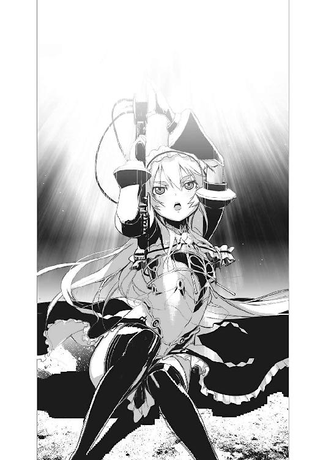
だが勿論これは『飛行』の魔法ではないので、自由に空中を移動する事はできない。
あくまで浮かび上がるだけの事──無論、手足で空気を搔けば、多少は移動する事もできるかもしれないのだが。
「初体験。意外に大変」
と空中でくるくると回りながらチャイカが言う。
どうやらこの魔法──知ってはいても、使ったのは初めてであるらしい。
重さを消すという事は、つまり、自分を支える地面との摩擦が無くなるという事でもあり......結果、ほんの些細な動きでもそのまま、姿勢が変わってしまうという事である。
「............」
視線でトールに促され、彼女の傍に歩み寄ったリカルドもまた、ふわりと床から脚の裏を離して浮遊を始める。だがこちらはむしろ平衡感覚が優れているのか、チャイカの様に慌てる事も無く、落ち着いた表情で空中に浮かんでいる。
「水なら未だ手足で搔いて姿勢を変える事もできますが......これは」
リカルドが苦笑を浮かべてそんな事を言ってくる。
水と違って空気は抵抗が薄い。つまりは手足を泳ぐ様にばたつかせても、なかなか、思う様に姿勢を正す事ができないらしい。不用意に手足を動かして、回転を始めてしまうと、摑まる場所でもない限り、回転そのものを止める事さえ難しいらしい。
「まあ......孔の中に入ってしまえば、問題無いだろ」
と二人を見上げながら言うトール。
件の廃棄孔は、そう大きなものではない。
直径でいえばトールの肩幅よりも少し大きい──両腕を一杯に広げるのは無理だが、肘までは何とか、という程度である。つまり、両肘や両膝を突っ張る事で身体を固定する事ができるという事だ。一度孔の中に入ってしまえば、ふらふらとあちらこちらに漂っていく事も、孔の中で回転してしまう事も無いだろう。
「──トール」
チャイカが空中からトールを見下ろしながら言った。
「なんだ？」
「見ない！ 上！」
「............」
チャイカは己のスカートを押さえながら言う。
要は下着を見るなという事らしいのだが。何を今更と言った感があるが、とりあえず苦笑してトールは視線を逸らし──
次の瞬間。
「──っ!?」
彼は全力で横へと飛び退いていた。
着地点を見定める様な余裕など無かった。咄嗟の事でトールは自分が腰に紐を結びつけている事すら意識していなかったのだ。着地した場所の塵が崩れ、姿勢が乱れた上に、自らの紐に引っ張られトールは転倒した。
ほんの一瞬前まで彼が立っていた場所。
そこに震えながら突き立っているのは......
「トール!?」
既に天井近くまで浮かび上がってしまったチャイカが悲鳴じみた声を上げる。
床に突き刺さっているのは、騎兵槍であった。
それも──
「──！」
敢えて普通には立ち上がらず、紐に縋って跳ねる様に起きるトール。
紐を外している余裕は無い。弧を描いて移動する彼を追う様にして、三本の騎兵槍が次々と床に突き刺さっていく。
そして──
「よりにもよって──」
次の瞬間、騎兵槍を追う様にして、廃棄孔から飛び降りてきたのは──白い鎧に身を固めた、四人の騎士達であった。フレドリカを突き刺して投げ捨てた、あの連中だ。もっとも全身を隈無く装甲に覆われている為、中身が別人と入れ替わっていてもトールには見分ける術が無いが。
四騎士はそれぞれ別の孔から飛び降りると、塵の山を崩しながら着地。
「この瞬間かよ」
腰の後ろの小機剣に手を掛けながらトールは唸る様に言う。
廃棄孔から聞こえてくる擦過音に気付かなければ、トールは頭頂から股間までを騎兵槍に串刺しにされていた事だろう。
（やはり俺達の居場所が察知されていた......か）
まさか偶然、この瞬間に四人の騎士が廃棄孔を使って降りてきた訳でもなかろう。
トール達が逃げ出した後も、殊更に兵士達を動員して要塞内を探し回らなかったのは、その気になればいつでも居場所を把握して攻撃する事ができたからだろう。
（──まずいな）
トールはちらりとチャイカ達の方を一瞥する。
彼女とリカルドは浮上を続け、天井の辺りで引っかかる様にして停まっている。
塵集積所の天井は高い。騎士達が剣を振り上げてもチャイカ達には届くまい。
とりあえず投擲武器や飛翔武器──手裏剣や弓矢の類いだ──を使うのでもない限り、四騎士の攻撃にあの二人が晒される事は無かろう。
彼女等を庇う事に意識を割かずに済む分、多少はトールとしても楽が出来る。
勿論それでも戦闘訓練を受けた上、重武装をしている四人を相手にとなると、勝つのは難しいだろうが──
「......ん？」
ふと何か違和感を覚えて眉をひそめるトール。
その正体に思い至る前に──
「トール！ 足下！」
「──!?」
チャイカの叫びにトールは己の足下に視線を落とす。
塵が──動いていた。
いや。違。滑っている。滑り落ちている。まるで渦を巻く様にして、擂り鉢状に窪んだ床の一点へ............
「──これは！」
そこから先は殆ど一瞬だった。
床が消える。
ありとあらゆる塵が空中に投げ出され、遥かな下、本物の地面に向かって落ちていく。
違和感の正体は平衡感覚だった。床が傾き始めたのをトールの感覚が察知していたのである。
トール達の居た塵集積所の床が開き、溜まっていた塵が全て、航天要塞から投棄されていく。改めて見れば、床を成していた部分は、花の様に幾つもに分割されて開いていき、既に塵集積所には、踏みしめるべき部分が無くなっていた。
そして──
「......早速役に立ったな」
トールは紐にぶら下がりながら言った。
先に彼が天井に引っかけた紐──これが今や本当に彼の命綱になっていた。
「やってくれるぜ......」
唸る様に言って視線を巡らせるトール。
勿論──四騎士も落下する事無く、未だそこに居た。
それぞれ、細い鎖で天井から吊り下げられながら、四人してトールを囲む様な位置にいる。恐らく連中は最初からこの塵集積所の床が開いてしまうのは、承知していた──というより開けたのはこの四騎士だろう。だからこその命綱ならぬ命鎖という訳だ。
わざわざ四騎士で囲んでおいて──しかし本命の攻撃は彼等の誰からも違う所から、つまりは足下から来る。四騎士は床の開放に気付くのを遅らせる為の陽動という事か。
だが──
「──!?」
愕然とトールは眼を見開く。
四騎士が、揃って長剣を腰から抜き放つのを見たからである。
「この状態で戦るつもりかあいつら......!?」
落ちれば即死確実の空中。
踏みしめる床も地も無く、身体を支えるのは互いに一本の『命綱』のみ。正気の人間ならば、たとえ目の前に敵が居ようと、戦うよりも何よりもまず、両足が地に着く場所に辿り着く事を最優先するだろう。
しかし──この四騎士は宙づりにされている事を、まるで意に介していない。
「何なんだこいつらは......」
戦慄含みの声でそう呟きながらも、トールは仕方なく腰の後ろの小機剣に両手を添えた。
航天要塞〈ソアラ〉の最上階層の一室。
司令室と呼ばれるそこには──今、数名の魔法師達が詰めていた。
上から見れば正八角形を成している部屋の壁は、出入り口である一方を除くと、残り七方の全てが水晶板──正確には水晶球を真ん中で断ち割った形のもの──が埋め込まれている。
磨き上げられたその平面は『覗き窓』だ。
もっとも本物の窓と異なり──そこには様々な光景や風景が自由自在に映し出される仕組みになっている。魔法師達が魔法で光をねじ曲げてそこに像を結ぶのである。
通常は要塞の周囲を警戒する為に、六面は水平方向に周囲を、残る一面は真下を映す事が多い。この『覗き窓』によって航天要塞の司令室は、一分の隙も無く分厚い鋼鉄に守られながら──同時に何不自由なく外を見渡せるのである。
勿論この『覗き窓』には外部だけで無く要塞内部の光景も映せる。
実際、今......三面の水晶板には塵集積所の光景が描き出されていた。
「............」
その光景を......今一人の娘が悠然と眺めていた。
もっとも本当に彼女が水晶板の内容を『視て』いるのかどうかは分からない。彼女の顔には紗が掛かっていて、余人からは彼女が何処に視線を送っているのか、それどころかどんな表情を浮かべているのかすら、見えない様になっているからだ。
レイラと呼ばれた蒼い衣装の娘だ。
普段はいつも此処に詰めている筈のグラートの姿は──無い。
代わりという訳でもあるまいが、レイラは静かに、まるでのどかな風景でも眺めるかの様にその水晶板に映るものを見ている──のだろう。多分。少なくとも彼女の立ち姿には興奮や焦燥といった強い感情を見いだす事は出来ない。
だが......
「──あんたが此処の指揮官？」
その背中にひどく気安い口調の声が掛かる。
いつの間に入ってきたのか──
「............」
レイラが振り返った先には、一人の少女が腰に手を当てて立っていた。
金髪に真紅の瞳をした小柄な少女。上品な顔立ちで、いかにも深窓の令嬢といった繊細な雰囲気なのだが......そこには何やら、猫を思わせる悪戯っぽい表情が貼り付いていた。単にか弱いだけの少女という訳でないのはその一点からも分かる。
フレドリカである。
勿論、変幻自在を旨とし、最強の棄獣とも言われる装鎧竜──四騎士に貫かれた際の傷など、既に跡形も無かった。
「............」
レイラは少女の形をした装鎧竜を振り返ったまま──無反応。
相手を刺激しないように、というよりは、単純に、この娘は驚いたり慌てたりする事が無いのかもしれない。仕草の一つ一つがひどく気怠げで──声や体軀が若い娘と覚しい反面、熟し切って落ちる寸前の果実の様な、奇妙な艶っぽさがそこには在った。
「ねえ。あんたが此処の指揮官？」
繰り返しフレドリカはそう尋ねる。
レイラに身構える様子は無いが、フレドリカはフレドリカで通りすがりの他人に道を尋ねるかの様な気楽な口調である。少なくとも敵に対して詰問する様な鋭さは無い。
また──他の、壁際で水晶板を操作している魔法師達は、一切、反応を示さない。
レイラとは異なり、まるでこの小柄な侵入者の存在が見えていないかの様な──認識すらしていないかの様な風情である。彼等は一様に無表情に、手元の据え付け型の機杖を握っているだけで、フレドリカの方を振り返ろうともしない。
やがて──
「装鎧竜......」
レイラは呟く様に言った。
「七番目の〈棄獣〉」
「......？」
首を傾げるフレドリカ。
レイラの言い方が引っかかったのだろう。
確かに棄獣と呼ばれる存在はこのフェルビスト大陸において七種確認されているが、そこに順番を付ける事はまず無い。まして強いて順位を付けるとするならば、その脅威の大きさという点で付けられるであろうから──装鎧竜が『七番目』などと呼ばれる事はまずあるまい。
「おまえが、あの〈禁断皇帝〉の娘と共に行動する理由は何？」
「......こっちが先に訊いてるんだけどな」
呟く様に言うフレドリカ。
「まあいいか。なんだか勘違いされているみたいだけど、私はチャイカの傍に居るんじゃなくて、彼女の従者のトール・アキュラの傍にいるだけだよ。結果的にチャイカの傍にいる様に見えるだけ」
「............」
フレドリカの答えをどう受け止めたのか、レイラの頭部が小さく揺れた。紗の向こう側でどうやら小さく頷いたらしいのだが。
「──で。あんたが此処の指揮官？」
「違うわね」
とレイラはようやく答えた。
「此処の指揮をとっておられるのは、本来、グラート・ランシア様よ」
「その人は？ 今どこに？」
「別室で四騎士の手綱をとるのに集中しておられるわ。そろそろ遊んでもいられなくなったという事で、直接、手綱をとられる事にしたみたい」
「......手綱？」
眉をひそめて呟くフレドリカ。
「まあそれもどうでもいいか」
そう言って装鎧竜の化身はにっこりと笑い──そして改めて問うた。
「それより、『遺体』は何処にあるのかな？」
「............」
レイラは無言。
意味が分からないという事か。
それとも言えないという事か。
紗の奥の表情を透かし見ようとするかの様に、一歩前に出てフレドリカは言った。
「持ってるんでしょ？ 私に頂戴よ。それが在ればトールは私とまた戦ってくれるっぽいんだよね」
「............悪いけれど」
レイラはゆらゆらと首を振った。
「持っていたとしてもあげる訳にはいかないわね......」
「どうして？」
そう尋ねるフレドリカの顔には無邪気な笑みが浮かんだままだ。
ただしそれは装鎧竜の笑顔である。その気になればフレドリカは人間など片手で捻り殺せるだけの力を持っている──それを知った上で見れば、その笑顔は威嚇以外の何物でもない。『笑っている内に従え』と言わんばかりの。
対して......レイラの声は尚も静かで物憂げだった。
「集めているから。こちらも」
「............何故？ 確かに強力な魔力源ではあるみたいだけど、別に此処の領主なら魔力源なんて、いくらでもあるでしょ？」
「............」
またしてもレイラは、答える事無く、しばらく無言を維持していたが。
「貴女は──」
ふと思いついた様子でレイラは言った。
「若い竜なのね」
「......？」
また首を傾げるフレドリカ。
「うんまあ、割と若いけどね。それが？」
「第一世代の装鎧竜なら、そんな事を訊いてはこない筈だものね」
「............」
フレドリカは──ここでようやく笑みを消して眉をひそめた。
やはりレイラの言う意味が分からなかったのだろう。
だが──
「......私は第一世代最後の大海魔から聞いた」
レイラはぽつりと言った。
それはフレドリカに語るというよりも......己の中の記憶を掘り起こしてただ呟いているだけの様な、何処か散漫な口調だった。
「馬鹿馬鹿しいと思ったわ。でも仕方ない。他に何も無いものね」
「............」
フレドリカは眼を瞬かせてしばらくレイラを見つめていたが──やがて青白い魔力光を全身に帯びると、ひょいと空中に飛び上がった。
ふぉん......と空気が鳴く。
本来風など吹かぬ筈の密室に、複雑な気流が発生し、その渦中で、フレドリカが姿を変えていた。恐らくは空気や水蒸気といった物質を取り込んで変身の為の材料にしたのだろう。風は急激な気圧変化によって生じたものだ。
一瞬にしてフレドリカは衣替えをしていた。
いや。それだけではない。今まではただ、小柄な少女というだけだった彼女は──次の瞬間、一回り身長が伸びた上、白い鎧を帯びて両手に剣を携えた姿に変化していた。あるいは此処にトール達が居れば、それが、かつてドミニカ・スコダを名乗っていた頃の戦装束とそっくりだという事に気付いただろう。
明らかに戦闘態勢だ。
竜の姿を採らなかったのは、単に、屋内では意味が無い──というより人間が使う事が前提の場所で一番戦い易いのは、人間形態であるからだろう。
「それは」
レイラは相変わらず気のない口調で問うた。
「つまり......力ずくで持っていくという意思表示？」
「そうなるかな」
フレドリカは言って剣を構えながら前に出る。
しかしレイラの側は凶器を──いや何よりも装鎧竜を前にしても、怯える様子がまるで無い。身構えるでもなく、ただ飄然とその場に立っているだけだ。
「拷問──だっけ。そういうのして在処を聞く事にするね」
「それは構わないけれど」
レイラは淡々と言って片手を挙げた。
「トール・アキュラが大変よ？」
「............!?」
レイラが指さす先。
そこには──その水晶板には、丁度、塵集積所の床が開いて、塵の全てが落下していく様が映し出されていた。そして、その最中、宙づりになっているトールの姿や、天井辺りに浮かんでいるチャイカ達の姿も。
「トール!?」
そうフレドリカが叫んだ──瞬間。
猛烈な勢いで振り下ろされた鉄槌が、隙だらけになったフレドリカの後頭部に、深々とめり込んでいた。
轟々と風が唸る。
地上を遥か遠くに離れた虚空の只中──そこにトールはたった一本の紐で吊り下げられていた。
塵集積所の床は開ききったまま、トールの真下には何も無い。
先に天井に引っかけておいた紐があるからこそ、トールは落下を免れているが、もしこれが無ければ、彼は為す術も無く地上へと真っ逆さまに墜落して、人としての形すら残らぬ肉片にまで飛散していた事だろう。
いや。今もその可能性が無くなった訳ではない。
何しろ、四人の敵がトールと戦おうと刃を構えているのだから。
鋼糸を編み込んであるとはいっても所詮は紐、勢いの乗った長剣の一撃を食らえば、切断されてしまう可能性は充分にあった。
「くっ──」
トールは紐を摑んで登り始める。
この宙づり状態では、とても戦う事などできない。せめて天井にまで辿り着けば、剝き出しになった配管やら何やらを摑んで移動したり、廃棄孔に潜り込む事で、一旦、身体を動かすための基点を確保出来る筈だった。
だが──
「──!!」
風の唸りの中に別の音が混じる。
大気を抉り抜く勢いで剣が叩き付けられてきたのは、次の瞬間であった。
「ぐおっ!?」
弾ける火花と金属音。
打ち込まれた一撃を、トールは殆ど本能的に右手の小機剣を抜いて受け止めていた。技も何も無い、だが勢いだけはたっぷりと乗った一撃。勿論、トールは両足を踏みしめる事もできない宙づり状態──押し返す事もできず、彼は大きく空中に跳ねていた。
「このっ......」
トールの視線の先で大きな弧を描いて騎士が飛び去っていく。
言うまでもなく、今の一撃はその騎士が放ったものだ。
だが宙づり状態はトールと同じ、むしろ重装備である筈の彼等の方が、この状況では身動きが取りにくい筈なのだが──
「──そうきたか」
振り子の様に大きく揺れながらトールは唸る様に言った。
四騎士達が身体に取り付けている鎖は一本ではなかった。
そもそも彼等は自身を支える鎖は手に持っていない。
背中に取り付けた『命綱』とは別に、彼等は左手に鎖を握り、これを投げ合い、引っ張り合う事で、空中を移動しているのである。引かれれば引かれるだけ、鎖先端の騎士は、振り子の要領で大きく弧を描いて揺れる。その際に剣を振りかぶって──振り子の勢いを上乗せして攻撃してくるのである。
「ぐ......っ！」
背後から飛んできた二撃目をトールはこれも小機剣を掲げて弾く。
鋭い金属音と共に火花が散り、トールの姿勢は大きく崩れた。
そこに──間髪入れず三撃目。
更に四撃目。
更に五撃目。
右から。左から。
鎖にぶら下がりながら、飛んでくる四騎士。
重装甲も、この状態では動きに負の影響を及ぼさない。いやむしろ攻撃の際、一撃の『重さ』を倍加させる効果すら生じている。
しかも四騎士の攻撃は切れ目が無い。四人の相手と戦っているというより、巨大な腕を四本備えた怪物と戦っているかの様な──奇妙な圧迫感がある。
「くそっ......！」
打ち込まれる剣を弾きながら呻くトール。
前後左右から長剣の攻撃を受け、これを右手一本でさばいていくのは──明らかに無理があった。かといって両手で小機剣を使えば、姿勢を維持するのもままならない。
そもそも四騎士はトール本人を狙わずとも、彼がぶら下がっている紐を一本切り落とすだけで勝てるのだ。とてもではないが、勝負になどなりようがなかった。
延々と迫り来る騎士達の攻撃に嬲られるトール。
彼としては紐を守るだけで精一杯だった。
次から次へと交代で繰り返される振り子攻撃をさばききれず、トールの身体は、剣の切っ先がかすめて造った傷があちこちに増えていく。
「トール！」
チャイカの悲鳴じみた声が聞こえるが、そちらを向いている余裕も今のトールには無い。
彼女の支援も、今は期待は出来ないだろう。
彼女が何か魔法を使う為には、現状の浮遊魔法を一旦解除して別の魔法を使わなければならない。だがそうなれば──彼女とリカルドが落下するだけの話である。
しかし──
（何考えてるんだ、こいつら）
剣で攻撃を弾き続けながらトールは頭の片隅で考える。
（最初からこの状態で戦う事を想定していたみたいだが──）
鎧を鎖に繫いであるのも、左手に鎖を仕込んであるのも、勿論、それが理由であろうし──何よりも事前にこの戦い方を想定していなければ、こうも一糸乱れぬ連携などとれる筈が無い。
だが、何故に......こんな奇妙な状態での戦闘を選んだのか。
奇策怪策が本領の乱破師ならばまだしも、本来、鎧を帯びた騎士や剣士が自ら仕掛ける様な戦い方ではない。武術の大半は足運びに奥義が在る──殆どの武術はしっかりした足場を確保した上でしか使う事ができない。つまり空中戦は自分達が最も得意とする技術を封じてしまう様なものだ。
むしろこれは素人の発想──
（......そうか。こいつら、操られて......）
グラート・ランシア。
例の魔法師がこの四騎士も魔法で操っているのであれば、こんな本職の騎士や剣士なら思いつきもしない様な戦い方も、まるで四人で一匹の獣であるかの様な高度な連携も、不思議ではない。
ならば──
「くっそ！」
トールは勝負に出た。
丁度、騎士の一人が十数度目にもなる攻撃をトールに向けて仕掛けてきている、その瞬間──彼は、敢えて剣を弾く事を止めた。
勿論、騎士の剣に手加減は無い。
むしろトールが小機剣を下げたのをこれ幸いと──トールを、ではなく彼がぶら下がっている紐を狙って叩き付けられる騎士の長剣。一撃必殺の勢いが乗った凶器に、トールは意識を集中──それを保持する騎士の腕に視線を据えた。
「──ッ！」
長剣が身を逸らしたトールの額をかすめ、彼の命綱ならぬ命紐に食い込む。
いかに鋼糸を編み込んであるとはいえ、勢いを付けた長剣の刃を叩き付けられれば、切断されるのもやはり当然──トールの紐はあっけなく切られていた。
だが──
「おおッ！」
トールは叫びながら切断の瞬間、敢えて紐から手を離していた。
当然、彼を支えるものはもう何も無い。
だがトールは両手で──いや両足も使って、その騎士の腕にしがみついていた。
まるで相手に絡み付く蛇の様に、全身を使って、伸びきった相手の腕と肩に巻き付いたのである。
勿論、これは単なるその場の思いつきでは無い。
もともとこれは『腕挫』とも言われる関節技──相手の肘関節を逆に伸ばして極める技だ。
厚い装甲に覆われている敵──これを攻略する為に、トール達の様な乱破師は、複数の技法を教わっている。装甲の隙間を狙って相手に傷を負わせるという方法は定番だが、それ以外にも、鎧が、その構造上、宿命的に持つ弱点を突くという方法がある。
即ち──関節だ。
いかに分厚い装甲があっても、関節の動きそのものを防御は出来ない。鎧を帯びた本人が自由自在に動き回る為には、関節はどうしても可動構造と、それなりの自由度を持たせるしかなく──それが故に関節技の対象に成り得る。
「こ......んんのおおおおおお！」
叫びながらトールは全身で海老の様に反り返りながら、相手の肘関節を極めていた。
伸びきった関節は意外に脆い。ほんの少し無理な方向に歪めてやるだけで、あっさりと関節が外れたり、骨が折れたりする。
トールは自分の鳩尾の辺りで、騎士の肘関節が異音を発するのをはっきりと捉えていた。
靭帯の断裂音だ。
「............」
本来ならば激痛で絶叫してもおかしくない。
だが騎士は僅かに身を震わせただけで、苦鳴すら漏らさない。やはりグラートに魔法で支配されているのだろう。まさに人形だった。
だがいかに苦痛を無視出来ようと、肉体構造そのものが破壊されれば、自由に動くのは不可能だ。現に騎士の手からは剣が離れ──もう握っている事すらできないのだろう──遥か下の大地に向かって落ちていくのが見えた。
これでこの騎士の戦闘能力は、事実上、奪った事になる。
片腕だけでこの状況下、戦える筈も無い。
トールはにやりと会心の笑みを浮かべながら、騎士の左手が握っていた鎖を奪った。
「これで──」
ほぼ密着状態のトールと騎士を、他の騎士も攻撃は出来まい。
振り子の様に動く攻撃は、確かに勢いを付ける事が容易なので、単純な威力は倍増するかもしれないが──精密な攻撃にはまるで向かない筈だ。
そう読んでトールは──
「──!?」
だが次の瞬間。
（こいつら......!?）
残りの三騎士は、全く何の躊躇も逡巡も無く、トールと右腕を潰された騎士のぶら下がる鎖に、剣を叩き付けてきた。
まさか仲間ごと落としにくるとは。
体面を気にする騎士や剣士の類いは最も嫌う戦い方だ。
だが......
（しまった──）
トールは慚愧の念に呻く。
読みが甘かった。
そもそも騎士達はグラートによって操られている状態なのだから、『仲間』を犠牲にする事など何の躊躇もあるまい。グラートにしてみれば、沢山在る駒の一つを使い捨てにするだけの事だ。
火花と異音。
鎖はぎいぎいと鳴いて──次の瞬間、二人分の人間の重量に耐えきれず、甲高い音と共に破断していた。
「──!!」
トールと右腕を壊された騎士を支えるものは無い。無くなった。
二人はそのまま落下──
「..................!?」
落下──しない。
気がつくとトールは蒼い光に包まれて空中に浮かんでいた。
起動した魔法回路、即ち魔方陣である。
つまりこれは──
「──チャイカ!?」
「ういっ！」
と天井に身をくっつけながら、得意げに声を掛けてくるチャイカ。
よく見れば彼女は、棺の背負帯を用いて、自分と棺を、天井の配管に結びつけて固定していた。リカルドも同様に腰帯を解いて命綱とした上で、配管に爪先と手を掛けて身体を支えている。
つまり今の彼女は、自分達に浮遊の魔法を使う必要が無い、という事だ。
トールの支援に魔法を使える。
「助かった！」
そう叫んでトールは、右腕を壊した騎士を蹴りはなし、両手で小機剣を構えた。
地に足を付けての状態には劣るが、両手を使えるのはありがたい。
そこに──別の騎士が突っ込んできた。
「──ッ！」
裂帛の気合いを迸らせながらトールは小機剣を振るう。
狙いは──相手の鎖。
先に自分にされた攻撃をそのまま返した事になる。鋏の如く左右から叩き付けられた小機剣は、火花を散らしながら鎖に食い込む。トールは改めて二本の小機剣を引き抜き──騎士を蹴り離した。
衝撃で鎖が破断。
騎士は空中に投げ出され──そのまま、もの凄い勢いで落下していった。
これで二人。残りは二人。
だが既に先程の様な複雑な連携は無い。二人では攻撃はどうしても単純にならざるを得ないからである。
トールはその一方に懐から取り出した手裏剣を放った。
しかしこれは騎士は避けようともしない。平然とその板金鎧で受け止めて弾く。
だがこれは計算の内だ。
トールは手裏剣の柄頭に結びつけておいた鋼糸を繰って、その軌道を操作。弾かれた手裏剣は、空中で回転を加えられ──騎士の手首に巻き付いていた。
「かかった！」
文字通りに釣り針に掛かった魚も同然。後は釣り上げるだけだ。
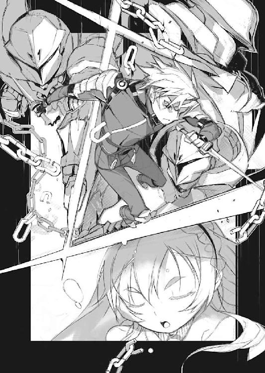
トールは鋼糸を手繰り寄せながら、その騎士に向けて接近──小機剣の刺突を放った。
相手の動きを封じた上でなら、鎧の隙間狙い、急所狙いも比較的容易い。トールの一撃は相手の肩部装甲の隙間から滑り込み、相手の右肩を深々と刺し貫く。さすがに握り続けていられなかったのか──騎士は、血を流しながら長剣を取り落としていた。
煌めきながら長剣が落下して消えていく。
これで三人目の騎士も戦闘力は奪ったも同然だ。
残りは──一人。
振り返ったトールの左腕に最後の騎士が投げた鎖が巻き付いたのは、次の瞬間だった。
「くおっ──」
もの凄い力で引きずられるトール。
先程の逆──今度はトールが動きを封じられた状態だった。
とどめとばかりに大きく弧を描いて飛んでくる騎士の刃。
だが──
「そうはいくかっ！」
鋼糸を引いて、先の騎士を重りにトールは移動──攻撃をかわす。
相手の腕が伸びきった無防備な瞬間を狙い、トールはその手首に──鎧を帯びた相手の場合に、もっとも狙いやすい場所の一つだ──小機剣を叩き付ける。
切り落とすには至らなかったが、それでも最後の騎士の手首は血を噴きながらあらぬ方向に曲がっていた。同時に長剣もくるくると回転しながら眼下の奈落に消えていった。
これで全員、戦闘能力を奪った事になる。
無論、二人の騎士は致命傷を負った訳ではないが──彼等の鎧の爪先からは、血の雫が続けざまに滴っている。相当量の出血をしている筈で、とても動き回る事はできない筈だった。現にその二人は気を失ったかの様に手足をだらんとぶら下げているだけで、特にもう動きを示そうとしない。
「はあっ......はあっ......」
荒い息を吐きながら、トールは小機剣を鞘に収める。
その時──
「いやはや。立派なものです」
そんな声が投げ掛けられる。
「............」
目を細めて振り返るトール。
「まさか四騎士をこの状況で倒してしまうなんて。いくら魔法の支援があったにしても驚きですよ。さすがは乱破師と言うべきなのか。グラートの読みが甘かったと」
笑いながらそう言ったのは──リカルドだった。
彼はすぐ傍にいるチャイカの首筋に、何処から取り出したのか短剣を突きつけていた。
「トール......」
表情を引きつらせてチャイカが名を呼んでくる。
彼女に小さく頷いて見せながら──トールは視線をリカルドに向けた。
「......何の真似だ」
「見ての通りですよ？」
とリカルドは朗らかに言った。
特にトール達を騙しきったと得意がる様子も無ければ、後ろめたさを感じている様子も無い。何ら特別な事ではないのだろう、彼にとっては。
「リカルド・ガヴァーニではなかったという事か？」
「え？ いやいや」
と首を振って言うリカルド。
「僕はリカルド・ガヴァーニ本人ですよ？」
「............」
「正真正銘ガヴァーニ公爵の末っ子です。それは噓偽り無い本当の事。むしろ唯一の真実と言っても良いかな。噓だったのは──」
リカルドがにぃっ──と口の両端をつり上げる。
「いわゆる『黒幕』がグラートだという事、そして僕の父や兄弟姉妹が未だ生きているという点ですね」
平然とリカルドはそんな事を言ってきた。
それはつまり──
（こいつが......？）
殺したという事か。
父親や──兄弟姉妹を。
だが何の為に？ そしてグラート・ランシアや、あの蒼い紗を被った娘とこのリカルドはどう繫がってくる......？ そして大量に召し抱えられた女達はどうなった？
「......黒幕が自ら敵の前に身をさらすのか？」
「適材適所というだけだよ」
眼を細めて睨むトールの視線を、リカルドはしかし涼しげな表情で受け流している。
否定しないという事は、この少年が一連の異常事態の黒幕か。
だが──
「魔法師が乱破師の前に身をさらすのは自殺行為だからね」
とリカルドは短剣を弄ぶ様にいじりながら言う。
いつでもすぐ傍のチャイカを殺せる──という意思表示だろう。チャイカもトールの魔法を維持しなければならない関係上、身動きもとれないし、自身に浮遊の魔法をかけ直す余裕も無い筈だ。
だが......
「まあそういう訳で」
リカルドは肩を竦めながら言った。
次いでチャイカの方に手を伸ばし、作動中の機杖に触れる。
「むゃっ!? 駄目──」
「トール・アキュラ。君は──要らない」
リカルドの細い指が組み立て式の機杖の結合部に触れて。
「駄目駄目駄目──ッ!?」
悲鳴じみた叫びにもかかわらず、チャイカの得物は真ん中から二つに分割されていた。
「──！」
トールの身体を浮かせていた魔方陣が──消える。
次の瞬間、トールは真っ逆さまに大地へと向けて落下していた。
（つづく）
あとがき
どうも、軽小説屋の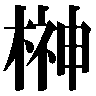です。
「棺姫のチャイカ」五巻をお届けいたします。
ライトノベルはしばしば『キャラ小説』と言われたりする訳ですが──確かに人気の在る無しは、どうしても登場人物がどれだけ特徴的で、読者の方々に好きになってもらえるか、に大きく依存している部分があります。まあ最近は一般小説でもその傾向が強くなってきているみたいですが、それはさておき。
でもって漫画と違って小説の場合には、絵そのものは自分で描く訳にもいかず、大抵は絵師さん頼りになってしまう為、その姿形のデザインに関しては、どれだけ手を尽くしても尽くしきれない部分があります（というより視覚的な見せ方は、やはり絵師さんの方が文章書きよりも数倍上であるのが常なので、そこにあくまでこだわると自滅する可能性すらあったり）。
ではキャラ作りにおいて何処に細かく手を入れるかというと、どうしても小説の場合は台詞回しとそれを裏打ちする性格設定、そして名前そのもの、という事になります。
ちなみに「チャイカ」でいえば、元々彼女の名前は「スヴェトラーナ」だった訳ですが（そう、そのまま機車の名に流用してます）、小柄なヒロインがでっかい機杖抱えて、棺背負って、という『キャラの方向性』からすると、ちょっと上品過ぎる、何だかすかしてるみたい、という事で担当Ｍさんに没を喰らい、紆余曲折あって「チャイカ」に決まった訳ですが。
名前は勿論ですが、喋り方にも特徴を付けたい、付けるべき、と考えた末に出てきたのが、例の片言喋りである訳ですな。小柄で幼さを残した健気なヒロイン、を印象づける、という意味で「幼さ」と「片言でも喋ろうとする必死さ」が出ればいいなあ、と。
これ考えてみると──書き始めの当時はあまり意識してませんでしたが──典型的な幼児の可愛らしさなんですよね。
現在、うちには三歳になる娘がいるんですが。
二歳を過ぎた辺りからぽろぽろと単語を二つ三つ続けて喋る様になってきて。これが、片言なんですが、聞いていると実に面白い。単語を羅列するだけの喋り方が、じりじりとなんですが、文法的に繫がった喋り方に変わっていくんですよ。
そうなると娘の方も話が通じるのが嬉しいのか、積極的に話し掛けてくる訳ですが、その一方で、やはり未だ三歳、大人からすれば意味不明の場合も多々あって、そういう時には実にじれったそうで。
これがまあ、実に可愛い。
親の欲目というか、自分の子供だけかとも思いましたが......よそ様の同じ歳位の子供でも、つっかえつっかえ懸命に喋っているのを見ていると、同じ気持ちになるので（子供の音楽教室とか体操教室とかでよく見かける）、これは普遍的な感情なんでしょう。
そうすると──トールがチャイカに感じている感情も、恋愛感情の類よりは、むしろ年下の家族に感じているものに近いのではないのかなあ、などと今更ながらに思ってみたりする訳ですよ。
まあ、親子って差ではないでしょうから、妹、位の認識でしょうか（アカリの立場が無い様な気もしますが、アレも普通の妹とは言いがたいしな）。
少なくとも最初はトールはチャイカを異性としては意識していなかっただろうし、チャイカもそれは同様である訳で。
今後のトールとチャイカの関係がどうなるかはさておき、恋愛方向に発展する場合には、何か関係性を一旦リセットする様な、劇的な出来事が改めて必要なのではないか、とかも思ったりします。
まあ本当につらつら考えているだけで、本当にそういう話の流れに持っていくかどうかはわからんのですが。
日常的に子供を見ていても、頭の片隅でお話のネタとして利用できないか、などと考えている辺り、小説書きってのは業が深いというか、色々な意味で困った生き物だなーという話でありました。
作者はちと色々あってぼんやりローテンション気味ですが（特に子供、二人目が生まれて生活そのものが振り回されて寝不足）──そんな楽屋（？）の事情とは裏腹に、小説本編は色々派手な道具立てでございまする。
つか縦長の空飛ぶ要塞って、一度やってみたかったんですよね。
読者の皆様にはお楽しみいただけると幸い。
毎度の如く絵師のなまにくＡＴＫさんにはさんざんご迷惑をかけておりますが、今回は特に色々あって原稿が遅れた為、常にもましてご迷惑をかけたかと思いまする。申し訳ない。そしてありがとうございます。この場を借りて謝罪と感謝を。
ではでは、皆様、また、次の本で。
２０１２／７／12
一郎
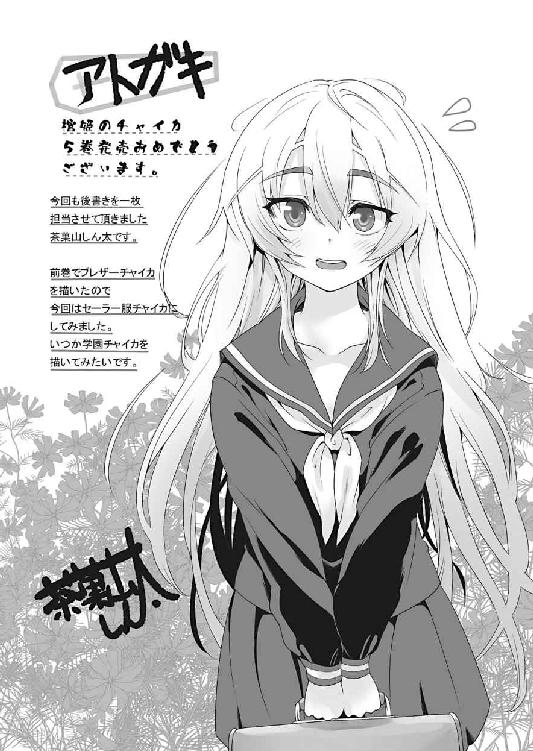
棺姫のチャイカ
一郎
平成24年8月25日 発行
発行者 山下直久
発行所 株式会社富士見書房
〒102-8144 東京都千代田区富士見1-12-14
http://www.fujimishobo.co.jp/
(C)2012 Ichirou Sakaki, NamanikuATtaKai/Fujimishobo